00 生活中的设计模式：启程之前，请不要错过我
两年前 CSDN 出了一个产品叫 ink，旨在提供一个高质量的写作环境，那时就有写设计模式这一系列的想法了，而且也确实写了，在 ink 里写了三篇文章，后来不知道什么原因这个产品下架了，写的三篇文章也没了，这事也就一直被搁置了；直到今天，我想重新开始，以全新的方式和思路重新写这一系列内容！
- 文章的特点： 从生活的小故事开始，由浅入深，逐步阐述设计模式的思想，并抽象出代码模型（骨架）。
- 追求的境界： 用最通俗的语言阐述最难懂的概念；用最简单的语法实现最复杂的逻辑；用最短小的代码写出最强悍的程序！
为什么叫设计模式
什么是设计模式
设计模式最初是被 GoF 于 1995 年提出的，GoF（Gang of Four，四人帮）即 Erich Gamma、Richard Helm、Ralph Johnson和John Vlissides。他们四人于 1995 年出版了一本书《Design Patterns：Elements of Reusable Object-Oriented Software》（翻译成中文是《设计模式 可复用面向对象软件的基础》），第一次将设计模式提升到理论高度，并将之规范化，该书提出了 23 种经典的设计模式。
设计模式（Design Pattern）是一套被反复使用、多数人知晓的、无数工程师实践的代码设计经验的总结，它是面向对象思想的高度提炼和模板化，使用设计模式是为了让代码具有更高的可重用性，更好的灵活性和可拓展性，更易被人阅读和理解。GoF 提到的模式有四个基本要素：
- 模式名称：助记名，方便讨论、交流、传播；
- 问题：该模式是用来解决哪类实际问题，即它的应用场景；
- 解决方案：设计的组成部分，它们之间的相互关系及各自的职责和协作方式；
- 效果：使用模式能达到的效果，即对使用条件的权衡取舍。
设计模式与生活有什么联系
我一直坚信：程序源于生活，又高于生活！程序的灵魂在于思维的方式，而思维的灵感来源于生活的精彩。互联网是一个虚拟的世界，而程序本身就是对生活场景的虚拟和抽象，每一个模式我都能在生活中找到他的影子。比如，说到状态模式我能想到水有冰、水、气三种状态，而人也有少、壮、老三个不同的阶段；提起中介模式我能立马想到房产中介；看到单例模式，脑海中会即刻浮现心目中的那个她……
设计模式是面向对象的高度抽象和总结，而越抽象的东西越难以理解。本系列文章的目地就是为了降低设计模式的阅读门槛，以生活中的小故事开始，用风趣的方式，由浅入深地讲述每一个模式。让你再次看到设计模式时不只是一个模式，还是生活中的一个个小确幸！程序不是冷冰冰的代码，它还有生活的乐趣和特殊意义。
为什么要学设计模式
设计模式是软件开发人员在软件开发过程中面临的一般问题的解决方案，这些解决方案是众多软件开发人员经过相当长的一段时间的试验和错误总结出来的。所以不管你是新手还是老手，学习设计模式将对你都有莫大的帮助。
学习设计模式的理由有很多，这里只列出几个最实现的：
- 摆脱面试的窘境，不管是前端工程师还是后端工程师，亦或是全端工程师，设计模式是面试时必问的一道题。
- 让程序设计能力有一个质的提升，不再是写一堆结构复杂、难以维护的烂代码。
- 对面向对象的思想有一个更高层次的理解。
如何进行学习
熟悉一门面向对象语言
首先，至少要熟悉一门面向对象的计算机语言。如果没有，请根据自己的学习爱好，或希望从事的工作，先选择一门面向对象语言（C++、Java、Python、Go 等都可以）进行学习和实战，对抽象、继承、多态、封装有一定的基础之后，再来看本系列的文章内容。
了解 Python 的基本语法
对 Python 的基本语法有一个简单了解。Python 语法非常简单，只要有一定的编程语言基础，通过下文的介绍很快就能理解的。
学会阅读 UML 图
UML（Unified Modeling Language）称为统一建模语言或标准建模语言，是面向对象软件的标准化建模语言。UML 规范用来描述建模的概念有：类（对象的）、对象、关联、职责、行为、接口、用例、包、顺序、协作以及状态。
UML 类图表示不同的实体（人、事物和数据）如何彼此相关；换句话说，它显示了系统的静态结构。想进一步了解类图中的各种关系，可参考以下文章：
阅读本系列文章
通过阅读本系列文章，以轻松愉快的方式学习设计模式和编程思想。本系列文章没有阅读的先后顺序，每一章都是单独成文，可从任意一篇文章开始。
为什么选择 Python
虽然说设计模式与编程语言没有关系，它是对面向对象思想的灵活应用和高度概括，可以用任何一种语言来实现它，但总归是需要用一种语言进行举例的。本系列文章的所有示例代码均使用 Python 语言编写，为什么选择 Python，主要是基于以下两个原因。
弥补市场空缺
设计模式于 1995 被 GoF 提出，被广泛应用于热门的面对象语言。目前用 Java、C++ 描述的设计模式的书籍和资料已经非常多了，但用 Python 来描述的真是太少了；我在当当上搜索了一下“Python 设计模式”关键字，发现只有那零星的几本书。而作为已经挤进 Top4 的 Python 语言，这明示是不够的。Python 已经越来越成熟，也越来越多地被使用，作为一个有技术追求的 IT 儿有必要了解一下基于 Python 代码设计。
大势所趋，Python 已然成风
- C 语言诞生于 1972 年，确随着 Unix 的诞生才深深植根于各大操作系统；
- C++ 语言诞生于 1983 年，确因微软的可视化桌面操作系统才得以广泛传播；
- Java 语言诞生于 1995 年，确因互联网的迅速崛起才变得家喻户晓；
- Python 语言诞生于 1991 年，而下一场技术革命已然开始，AI 时代已然成风。在 AI 领域中已经被广泛使用的 Python 语言必将成为下一个时代的第一开发语言！
最热门的 AI 开源框架 PyTorch 和 TensorFlow 都已经采用了 Python 作为接口和开发语言。除此之外，还有一堆的 AI 相关的框架库，也都纷纷采用，如 AIMA、pyDatalog、SimpleAI、PyBrain、PyML 等。
作为这么一门有前途的语言，必然是要去学习和使用的。
简单的 Python 基础
如果已经熟悉 Python 语言，这一部分的内容可直接跳过！
Python 的特点
Python 崇尚优美、清晰、简单，是一个优秀并广泛使用的语言。
与 Java 和 C++ 这些语言相比，Python 最大的两个特点是：
- 语句结束不用分号“;”。
- 代码块用缩进来控制，而不用大括号“{}”。
刚转过来的时候可能会有点不适，用一段时间就好了！
个人觉得，在所有的高级计算机语言中，Python 是最接近人类自然语言的。Python 的语法、风格都与英文的书写习惯非常接近，Python 的这种风格被称为 Pythonic，如条件表达式，在 Java 和 C++ 中是这样的：
int min = x < y ? x : y
而 Python 是这样的：
min = x if x < y else y
有没有觉得第二种方式更接近人类的自然思维？
基本语法
数据类型
Python 是一种弱类型的语言，变量的定义不需要在前面加类型说明，而且不同类型之间可以方便地相互转换。Python 有五个标准的数据类型：
- Numbers（数字）
- String（字符串）
- List（列表）
- Tuple（元组）
- Dictionary（字典）
其中 List、Tuple、Dictionary 为容器，将在下一部分介绍。Python 支持四种不同的数字类型：int（有符号整型）、long（长整型）、float（浮点型）、complex（复数）。
每个变量在使用前都必须赋值，变量赋值以后该变量才会被创建。
Demo：
age = 18 # int
weight = 62.51 # float
name = "Tony" # string
print("age:", age)
print("weight:", weight)
print("name:", name)
# 变量的类型可以直接改变
age = name
print("age:", age)
a = b = c = 5
# a,b,c三个变量指向相同的内存空间，具有相同的值
print("a:", a, "b:", b, "c:", c)
print("id(a):", id(a), "id(b):", id(b), "id(c):", id(c))
结果：
age: 18
weight: 62.51
name: Tony
age: Tony
a: 5 b: 5 c: 5
id(a): 1457772400 id(b): 1457772400 id(c): 1457772400
常用容器
List（列表）
List（列表）是 Python 中使用最频繁的数据类型，用 [ ] 标识。
列表可以完成大多数集合类的数据结构实现。类似于 Java 中的 ArrayList，C++ 中的 Vector。此外，一个 List 中还可以同时包含不同类型的数据，支持字符、数字、字符串，甚至可以包含列表（即嵌套）。
- 列表中值的切割也可以用到变量 [头下标:尾下标] ，就可以截取相应的列表，从左到右索引默认 0 开始，从右到左索引默认 -1 开始，下标可以为空表示取到头或尾。
- 加号（+）是列表连接运算符，星号（*）是重复操作。
Demo：
list = ['Thomson', 78, 12.58, 'Sunny', 180.2]
tinylist = [123, 'Tony']
print(list) # 输出完整列表
print(list[0]) # 输出列表的第一个元素
print(list[1:3]) # 输出第二个至第三个元素
print(list[2:]) # 输出从第三个开始至列表末尾的所有元素
print(tinylist * 2) # 输出列表两次
print(list + tinylist) # 打印组合的列表
list[1] = 100 # 修改第二个元素的值
print(list) # 输出完整列表
list.append("added data")
print(list) # 输出增加后的列表
结果：
['Thomson', 78, 12.58, 'Sunny', 180.2]
Thomson
[78, 12.58]
[12.58, 'Sunny', 180.2]
[123, 'Tony', 123, 'Tony']
['Thomson', 78, 12.58, 'Sunny', 180.2, 123, 'Tony']
['Thomson', 100, 12.58, 'Sunny', 180.2]
['Thomson', 100, 12.58, 'Sunny', 180.2, 'added data']
Tuple（元组）
Tuple（元组）是另一个数据类型，元组用“()”标识，内部元素用逗号隔开。元组不能二次赋值，相当于只读列表，用法与 List 类似。Tuple 相当于 Java 中的 final 数组，C++ 中的 const 数组。
Demo：
tuple = ('Thomson', 78, 12.58, 'Sunny', 180.2)
tinytuple = (123, 'Tony')
print(tuple) # 输出完整元组
print(tuple[0]) # 输出元组的第一个元素
print(tuple[1:3]) # 输出第二个至第三个的元素
print(tuple[2:]) # 输出从第三个开始至列表末尾的所有元素
print(tinytuple * 2) # 输出元组两次
print(tuple + tinytuple)# 打印组合的元组
# tuple[1] = 100 # 不能修改元组内的元素
结果：
('Thomson', 78, 12.58, 'Sunny', 180.2)
Thomson
(78, 12.58)
(12.58, 'Sunny', 180.2)
(123, 'Tony', 123, 'Tony')
('Thomson', 78, 12.58, 'Sunny', 180.2, 123, 'Tony')
Dictionary（字典）
Dictionary（字典）是 Python 中除列表以外最灵活的内置数据结构类型。字典用“{ }”标识，字典由索引（key）和它对应的值 value 组成，相当于 Java 和 C++ 中的 Map。
列表是有序的对象集合，字典是无序的对象集合。两者之间的区别在于：字典当中的元素是通过键来存取的，而不是通过偏移存取。
Demo：
dict = {}
dict['one'] = "This is one"
dict[2] = "This is two"
tinydict = {'name': 'Tony', 'age': 24, 'height': 177}
print(dict['one']) # 输出键为'one' 的值
print(dict[2]) # 输出键为 2 的值
print(tinydict) # 输出完整的字典
print(tinydict.keys()) # 输出所有键
print(tinydict.values())# 输出所有值
结果：
This is one
This is two
{'name': 'Tony', 'age': 24, 'height': 177}
dict_keys(['name', 'age', 'height'])
dict_values(['Tony', 24, 177])
类的定义
使用 class 语句来创建一个新类，class 之后为类的名称并以冒号结尾，如下实例：
class ClassName:
'类的帮助信息' #类文档字符串
class_suite #类体
类的帮助信息可以通过 ClassName.__doc__ 查看，class_suite 由类成员，方法，数据属性组成。如：
class Test:
"这是一个测试类"
def __init__(self):
self.__ivalue = 5
def getvalue(self):
return self.__ivalue
其中，__init__ 为初始化函数，相当于构造函数。
访问权限：
__foo__：定义的是特殊方法，一般是系统定义名字，类似__init__() 之类的。_foo：以单下划线开头的表示的是 protected 类型的变量，即保护类型只能允许其本身与子类进行访问，不能用于 from module import *。__foo：双下划线的表示的是私有类型（private）的变量，只能是允许这个类本身进行访问了。
类的继承：
继承的语法结构如下：
class 派生类名（基类名）：
类体
Python 中继承中的一些特点：
- 在继承中基类的构造（
__init__()方法）不会被自动调用，它需要在其派生类的构造中亲自专门调用。 - 在调用基类的方法时，需要使用 super() 前缀。
- Python 总是首先查找对应类型的方法，如果它不能在派生类中找到对应的方法，它才开始到基类中逐个查找（先在本类中查找调用的方法，找不到才去基类中找）。
如果在继承元组中列了一个以上的类，那么它就被称作“多重继承”。
基础重载方法
Python 的类中有很多内置的方法，我们可以通过重写这些方法来实现一些特殊的功能，这些方法有：
| 序号 | 方法 | 描述 | 简单的调用 |
|---|---|---|---|
| 1 | __init__(self [,args…] ) |
构造函数 | obj = className(args) |
| 2 | __del__(self) |
析构方法, 删除一个对象 | del obj |
| 3 | __repr__(self) |
转化为供解释器读取的形式 | repr(obj) |
| 4 | __str__(self) |
用于将值转化为适于人阅读的形式 | str(obj) |
| 5 | __cmp__(self, x) |
对象比较 | cmp(obj, x) |
Demo 让你顿悟
我们将一段 Java 的代码对应到 Python 中来实现，进行对比阅读，相信很快就能明白其中的用法。Java 代码如下：
class Person {
public static int visited;
Person(String name, int age, float height) {
this.name = name;
this.age = age;
this.height = height;
}
public String getName() {
return name;
}
public int getAge() {
return age;
}
public void showInfo() {
System.out.println("name:" + name);
System.out.println("age:" + age);
System.out.println("height:" + height);
System.out.println("visited:" + visited);
Person.visited ++;
}
private String name;
protected int age;
public float height;
}
class Teacher extends Person {
Teacher(String name, int age, float height) {
super(name, age, height);
}
public String getTitle() {
return title;
}
public void setTitle(String title) {
this.title = title;
}
public void showInfo() {
System.out.println("title:" + title);
super.showInfo();
}
private String title;
}
public class Test {
public static void main(String args[]) {
Person tony = new Person("Tony", 25, 1.77f);
tony.showInfo();
System.out.println();
Teacher jenny = new Teacher("Jenny", 34, 1.68f);
jenny.setTitle("教授");
jenny.showInfo();
}
}
对应的 Python 代码：
class Person:
"人"
visited = 0
def __init__(self, name, age, height):
self.__name = name
self._age = age
self.height = height
def getName(self):
return self.__name
def getAge(self):
return self._age
def showInfo(self):
print("name:", self.__name)
print("age:", self._age)
print("height:", self.height)
print("visited:", self.visited)
Person.visited = Person.visited +1
class Teacher(Person):
"老师"
def __init__(self, name, age, height):
super().__init__(name, age, height)
self.__title = None
def getTitle(self):
return self.__title
def setTitle(self, title):
self.__title = title
def showInfo(self):
print("title:", self.__title)
super().showInfo()
def testPerson():
"测试方法"
tony = Person("Tony", 25, 1.77)
tony.showInfo()
print();
jenny = Teacher("Jenny", 34, 1.68);
jenny.setTitle("教授");
jenny.showInfo();
testPerson()
自己测试一下，会发现结果是一样的：
name: Tony
age: 25
height: 1.77
visited: 0
title: 教授
name: Jenny
age: 34
height: 1.68
visited: 1
重要说明
- 为了降低程序复杂度，本系列文章中用到的所有示例代码均不考虑多线程安全，望借鉴 Demo 的读者注意。
- 本系列所有 Demo 均是在 Python 3.6.3 下编写的，Python 3.0 以上应该都可以正常运行。
01 监听模式：坑爹的热水器
【故事剧情】
刚刚大学毕业的 Tony 只身来到北京这个硕大的城市，开始了北漂的生活。但刚刚毕业的他身无绝技、包无分文，为了生活只能住在沙河镇一个偏僻的村子里，每天坐着程序员专线（13号线）来回穿梭于昌平区与西城区……
在一个寒冷的冬天，下班之后要坐2个小时的地铁+公交才能回到住处，Tony 拖着疲惫的身体回到家。准备洗一个热水澡暖暖身体，耐何简陋的房子中用的还是90年代的热水器。因为热水器没有警报更没有自动切换模式的功能，所以烧热水必须得守着；不然时间长了成杀猪烫，时间短了又冷成狗。无奈的 Tony 背靠着墙，头望着天花板，深夜中做起了白日梦：一定要努力工作，过两个月我就可以自己买一个智能热水器了：水烧好了就发一个警报，我就可以直接去洗操。还要能自己设定模式，既可以烧开了用来喝，可以烧暖了用来洗澡……
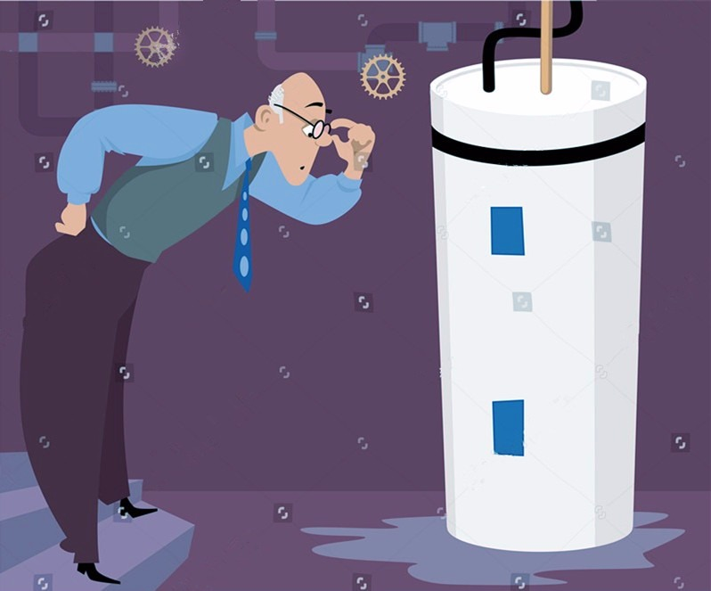
用程序来模拟生活
Tony 陷入白日梦中……他的梦虽然在现实世界里不能立即实现，但在程序世界里可以。程序来源于生活，下面我们就用代码来模拟 Tony 的白日梦。
源码示例：
class WaterHeater:
"热水器：战胜寒冬的有利武器"
def __init__(self):
self.__observers = []
self.__temperature = 25
def getTemperature(self):
return self.__temperature
def setTemperature(self, temperature):
self.__temperature = temperature
print("current temperature is:", self.__temperature)
self.notifies()
def addObserver(self, observer):
self.__observers.append(observer)
def notifies(self):
for o in self.__observers:
o.update(self)
class Observer:
"洗澡模式和饮用模式的父类"
def update(self, waterHeater):
pass
class WashingMode(Observer):
"该模式用于洗澡用"
def update(self, waterHeater):
if waterHeater.getTemperature() >= 50 and waterHeater.getTemperature() < 70:
print("水已烧好，温度正好！可以用来洗澡了。")
class DrinkingMode(Observer):
"该模式用于饮用"
def update(self, waterHeater):
if waterHeater.getTemperature() >= 100:
print("水已烧开！可以用来饮用了。")
测试代码：
def testWaterHeater():
heater = WaterHeater()
washingObser = WashingMode()
drinkingObser = DrinkingMode()
heater.addObserver(washingObser)
heater.addObserver(drinkingObser)
heater.setTemperature(40)
heater.setTemperature(60)
heater.setTemperature(100)
输出结果：
current temperature is: 40
current temperature is: 60
水已烧好，温度正好！可以用来洗澡了。
current temperature is: 100
水已烧开！可以用来饮用了。
从剧情中思考监听模式
这个代码非常简单，水烧到50-70度时，会发出警告：可以用来洗澡了！烧到100度也会发出警告：可以用来喝了！在这里洗澡模式和饮用模式扮演了监听的角色，而热水器则是被监听的对象。一旦热水器中的水温度发生变化，监听者都能及时知道并做出相应的判断和动作。其实这就是程序设计中监听模式的生动展现。
监听模式
监听模式又名观察者模式，顾名思意就是观察与被观察的关系，比如你在烧开水得时时看着它开没开，你就是观察者，水就是被观察者；再比如说你在带小孩，你关注她是不是饿了，是不是喝了，是不是撒尿了，你就是观察者，小孩就是被观察者。
观察者模式是对象的行为模式，又叫发布-订阅（Publish/Subscribe）模式、模型-视图（Model/View）模式、源-监听器（Source/Listener）模式或从属者（Dependents）模式。当你看这些模式的时候，不要觉得陌生，它们就是观察者模式。
观察者模式一般是一种一对多的关系，可以有任意个（一个或多个）观察者对象同时监听某一个对象。监听的对象叫观察者（后面提到监听者，其实就指观察者，两者是等价的），被监听的对象叫被观察者（Observable，也叫主题 Subject）。被观察者对象在状态或内容发生变化时，会通知所有观察者对象，使它们能够做出相应的变化（如自动更新自己的信息）。
监听模式的模型抽象
代码框架
上面的示例代码还是相对比较粗糙，我们可以对它进行进一步的重构和优化，抽象出监听模式的框架模型。
class Observer:
"观察者的基类"
def update(self, observer, object):
pass
class Observable:
"被观察者的基类"
def __init__(self):
self.__observers = []
def addObserver(self, observer):
self.__observers.append(observer)
def removeObserver(self, observer):
self.__observers.remove(observer)
def notifyObservers(self, object = 0):
for o in self.__observers:
o.update(self, object)
类图
上面的代码框架可用类图表示如下：

addObserver，removeObserver 分别用于添加和删除观察者，notifyObservers 用于内容或状态变化时通知所有的观察者。因为 Observable 的 notifyObservers 会调用 Observer 的 update 方法，所有观察者不需要关心被观察的对象什么时候会发生变化，只要有变化就是自动调用 update，只需要关注 update 实现就可以了。
基于框架的实现
有了上面的代码框架之后，我们要实现示例代码的功能就会更简单了。最开始的示例代码我们假设它为 version 1.0，那么再看看基于框架的 version 2.0 吧。
class WaterHeater(Observable):
"热水器：战胜寒冬的有利武器"
def __init__(self):
super().__init__()
self.__temperature = 25
def getTemperature(self):
return self.__temperature
def setTemperature(self, temperature):
self.__temperature = temperature
print("current temperature is:", self.__temperature)
self.notifyObservers()
class WashingMode(Observer):
"该模式用于洗澡用"
def update(self, observable, object):
if isinstance(observable,
WaterHeater) and observable.getTemperature() >= 50 and observable.getTemperature() < 70:
print("水已烧好，温度正好！可以用来洗澡了。")
class DrinkingMode(Observer):
"该模式用于饮用"
def update(self, observable, object):
if isinstance(observable, WaterHeater) and observable.getTemperature() >= 100:
print("水已烧开！可以用来饮用了。")
测试代码不用变。自己跑一下，会发现输出结果和之前的是一样的。
模型说明
设计要点
在设计观察者模式的程序时要注意以下几点：
- 要明确谁是观察者谁是被观察者，只要明白谁是关注对象，问题也就明白了。一般观察者与被观察者之间是多对一的关系，一个被观察对象可以有多个监听对象(观察者)。如一个编辑框，有鼠标点击的监听者，也有键盘的监听者，还有内容改变的监听者。
- Observable 在发送广播通知的时候，无须指定具体的 Observer，Observer 可以自己决定是否要订阅 Subject 的通知。
- 被观察者至少需要有三个方法：添加监听者、移除监听者、通知 Observer 的方法；观察者至少要有一个方法：更新方法，更新当前的内容，作出相应的处理。
- 添加监听者、移除监听者在不同的模型称谓中可能会有不同命名，如观察者模型中一般，addObserver，removeObserver；在源-监听器（Source/Listener）模型中一般是 attach/detach，应用在桌面编程的窗口中，还可能是 attachWindow/detachWindow，或 Register/UnRegister。不要被名称迷糊了，不管他们是什么名称，其实功能都是一样的，就是添加/删除观察者。
推模型和拉模型
观察者模式根据其侧重的功能还可以分为推模型和拉模型。
推模型：被观察者对象向观察者推送主题的详细信息，不管观察者是否需要，推送的信息通常是主题对象的全部或部分数据。一般这种模型的实现中，会把被观察者对象中的全部或部分信息通过 update 的参数传递给观察者 [update(Object obj) ，通过 obj 参数传递]。
如某应用 App 的服务要在凌晨1:00开始进行维护，1:00-2:00期间所有服务将会暂停，这里你就需要向所有的 App 客户端推送完整的通知消息：“本服务将在凌晨1:00开始进行维护，1:00-2:00期间所有服务将会暂停，感谢您的理解和支持！” 不管用户想不想知道，也不管用户会不会在这段期间去访问，消息都需要被准确无误地通知到。这就是典型的推模型的应用。
拉模型：被观察者在通知观察者的时候，只传递少量信息。如果观察者需要更具体的信息，由观察者主动到被观察者对象中获取，相当于是观察者从被观察者对象中拉数据。一般这种模型的实现中，会把被观察者对象自身通过 update 方法传递给观察者 [update(Observable observable )，通过 observable 参数传递 ]，这样在观察者需要获取数据的时候，就可以通过这个引用来获取了。
如某应用 App 有新的版本推出，则需要发送一个版本升级的通知消息，而这个通知消息只会简单地列出版本号和下载地址，如果你需要升级你的 App 还需要调用下载接口去下载安装包完成升级。这其实也可以理解成是拉模型。
推模型和拉模型其实更多的是语义和逻辑上的区别。我们上面的代码框架，从接口 [update(self, observer, object)] 上你应该知道是可以同时支持推模型和拉模型的。推模型时，observer 可以传空，推送的信息全部通常 object 传递；拉模型时，observer 和 object 都传递数据，或只传递 observer，需要更具体的信息时通过 observer 引用去取数据。
应用场景
- 对一个对象状态或数据的更新需要其他对象同步更新，或者一个对象的更新需要依赖另一个对象的更新；
- 对象仅需要将自己的更新通知给其他对象而不需要知道其他对象的细节，如消息推送。
学习设计模式，更应该领悟其设计思想，不应该应该局限于代码的层面。 观察者模式还可以用于网络中的客户端和服务器，比如手机中的各种 App 的消息推送，服务端是被观察者，各个手机 App 是观察者，一旦服务器上的数据（如 App 升级信息）有更新，就会被推送到手机客户端。在这个应用中你会发现服务器代码和 App 客户端代码其实是两套完全不一样的的代码，它们是通过网络接口进行通迅的，所以如果你只是停留在代码层面是无法理解的！
02 适配模式：身高不够鞋来凑
【故事剧情】
晚上九点半，Tony 上了地铁，准备回家，正巧还有一个空位，赶紧走向前坐下。工作一天后，疲惫不堪的他正准备坐着打个盹小睡一会儿。这时进来两个小姑娘，一个小巧可爱，一个身姿曼妙；嬉笑地聊着天走到了 Tony 的前面，Tony 犹豫了片刻后还是绅士般地给小女孩让了个座……
两个小姑娘道了声谢谢，便挤在一块坐下了，继续有说有笑地谈论着……
Amy：周末在商场里看到你和一个帅哥在一起。好你个 Nina，脱单了也不告诉姐姐我，太不够意思了！怎么……想金屋藏“娇”啊！
Nina：不是啦，也是最近刚有事，还没来得及告诉你呢。
Amy：那快说说呗！那小哥看着很高啊！
Nina：嗯，他1米85。
Amy：厉害了，你155 他185，这就是传说中的最萌身高组合啊！
Nina：嗯，走在大街上，别人都回头看我们，弄的我挺不好了意思的~
Amy：你这是身在福中不知福啊！别人就是因为想求也求不到呢！
Nina：也有很气的时候啦，有时生气想打他，结果粉拳一出去就被他的大手包了饺子。
Amy：哈哈哈哈，还有呢！
Nina：还有一件很囧的事，我一抬头总是看到他的鼻毛，他一低头总是看到我的头发屑！
Amy：哈哈哈！笑的我肚子痛了……所以你们在一起，你一定要天天洗头，他一定要天天修鼻毛咯~
Nina：是啊！可麻烦了~
Amy：看来还是我这 160 的身高最棒了！衣服可以随便挑，更重要的是我男友 175，穿上高跟鞋，我就可以挽着他的手肩并肩地走~
Nina：这就是所谓的身高不够鞋来凑吗？
Amy：不然怎么叫万能的高跟鞋呢……
Nina：好羡慕啊！在我这，高跟鞋也无能~
Amy：… …
正听的兴起时，地铁门开了。Tony 才反应过来，到站了，该下车了。Tony 赶忙往车门方向走，一不小心额头碰到了把手上，只好一手护着头往外跑，两个小姑娘相视一笑~

用程序来模拟生活
身材苗条、长像出众是每个人梦寐以求的，尤其是女孩子！但很多人却因为先天的原因并不能如意，这时就需要通过服装、化妆去弥补。所谓美女，三分靠长相七分靠打扮！比如身高不够，就可以通过穿高跟鞋来弥补；如果本身就比较高，那穿不穿高跟鞋就没那么重要了。这里的高跟鞋就起着一个适配的作用，能让你的形象增高四、五厘米，下面我们就用代码来模拟一下高跟鞋在生活中的场景吧！
源码示例：
class IHightPerson:
"接口类，提供空实现的方法，由子类去实现"
def getName(self):
"获取姓名"
pass
def getHeight(self):
"获取身高"
pass
class HighPerson(IHightPerson):
"个高的人"
def __init__(self, name):
self.__name = name
def getName(self):
return self.__name
def getHeight(self):
return 170
class ShortPerson:
"个矮的人"
def __init__(self, name):
self.__name = name
def getName(self):
return self.__name
def getRealHeight(self):
return 160
def getShoesHeight(self):
return 6
class DecoratePerson(ShortPerson, IHightPerson):
"有高跟鞋搭配的人"
def getHeight(self):
return super().getRealHeight() + super().getShoesHeight()
测试代码：
def canPlayReceptionist(person):
"""
是否可以成为(高级酒店)接待员
:param person: IHightPerson的对象
:return: 是否符合做接待员的条件
"""
return person.getHeight() >= 165;
def testPerson():
lira = HighPerson("Lira")
print(lira.getName() + "身高" + str(lira.getHeight()) + "，完美如你，天生的美女！" )
print("是否适合做接待员：", "符合" if canPlayReceptionist(lira) else "不符合")
print()
demi = DecoratePerson("Demi");
print(demi.getName() + "身高" + str(demi.getHeight()) + "在高跟鞋的适配下，你身高不输高圆圆，气质不输范冰冰！")
print("是否适合做接待员：", "符合" if canPlayReceptionist(lira) else "不符合")
输出结果：
Lira身高170，完美如你，天生的美女！
是否适合做接待员： 符合
Demi身高166在高跟鞋的适配下，你身高不输高圆圆，气质不输范冰冰！
是否适合做接待员： 符合
从剧情中思考适配器模式
在上面的例子中，高跟鞋起着一个适配的作用，让其形象增高 5~7 厘米完全不在话下，而且效果立竿见影！使得一些女孩原本不符合接待员的真实身高，在鞋子的帮助下也能符合条件。如高跟鞋一样，使原本不匹配某种功能的对象变得匹配这种功能，这在程序中叫做适配器模式。
适配器模式
Convert the interface of a class into another interface clients expect. Adapter lets classes work together that couldn't otherwise because of incompatible interfaces.
将一个类的接口变成客户端所期望的另一种接口，从而使原本因接口不匹配而无法一起工作的两个类能够在一起工作。
适配器模式的作用：
- 接口转换，将原有的接口（或方法）转换成另一种接口；
- 用新的接口包装一个已有的类；
- 匹配一个老的组件到一个新的接口。
设计思想
适配器模式又叫变压器模式，也叫包装模式（Wrapper），它的核心思想是将一个对象经过包装或转换后使它符合指定的接口，使得调用方可以像使用这接口的一般对象一样使用它。这一思想，在我们生活中可谓是处处可见，比如变压器插座，能让你像使用国内电器一样使用美标（110V）电器；还有就是各种转接头，如 MiniDP 转 HDMI 转接头、HDMI 转 VGA 线转换器、Micro USB 转 Type-C 转接头等。
你们知道吗？“设计模式”一词最初是来源于建筑领域，而中国古建筑是世界建筑史的一大奇迹（如最具代表性的紫禁城），中国古建筑的灵魂是一种叫榫卯结构的建造理念。
榫卯（sǔn mǎo）是两个木构件上所采用的一种凹凸结合的连接方式。凸出部分叫榫（或榫头）；凹进部分叫卯（或榫眼、榫槽）。它是古代中国建筑、家具及其他木制器械的主要结构方式。
榫卯结构的经典模型如下图：

榫卯是藏在木头里的灵魂！而随着时代的变化，其结构也发生着一些变化，现在很多建材生产商也在发明和生产新型的具有榫卯结构的木板。假设木板生产商有下面两块木板，木板 A 是榫，木板 B 是卯，A、B 两块木板就完全吻合。他们之间的榫卯接口是一种 T 字形的接口。

后来，随着业务的拓展，木板厂商增加了一种新木板 C。但 C 是 L 形的接口，不能与木板 A 对接。为了让木板 C 能与木板 A 进行对接，就需要增加一个衔接板 D 进行适配，而这个 D 就相当于适配器，如下图：

适配器模式通常用于对已有的系统拓展新功能时，尤其适用于在设计良好的系统框架下接入第三方的接口或第三方的 SDK 时。在系统的最初设计阶段，最好不要把适配器模式考虑进去，除非一些特殊的场景（如系统本身就是要去对接和适配多种类型的硬件接口）。
适配器模式的模型抽象
类图
适配器模式的类图如下：
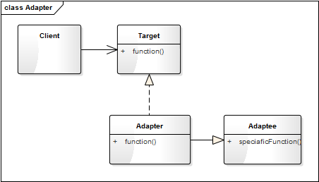
Target 是一个接口类，是提供给用户调用的接口抽象，如上面示例中的 IHightPerson。Adaptee 是你要进行适配的对象类，如上面的 ShortPerson。Adapter 是一个适配器，是对 Adaptee 的适配，它将 Adaptee 的对象转换（或说包装）成符合 Target 接口的对象；如上面的 DecoratePerson，将 ShortPerson 的 getRealHeight 和 getShoesHeight 方法包装成 IHightPerson 的 getHeight 接口。
模型说明
设计要点
适配器模式中主要三个角色，在设计适配器模式时要找到并区分这些角色：
- 目标（Target）： 即你期望的目标接口，要转换成的接口。
- 源对象（Adaptee）： 即要被转换的角色，要把谁转换成目标角色。
- 适配器（Adapter）： 适配器模式的核心角色，负责把源对象转换和包装成目标对象。
优缺点
适配器模式的优点
- 可以让两个没有关联的类一起运行，起着中间转换的作用。
- 提高了类的复用。
- 灵活性好，不会破坏原有的系统。
适配器模式的缺点
- 如果原有系统没有设计好（如 Target 不是抽象类或接口，而一个实体类），适配器模式将很难实现。
- 过多地使用适配器，容易使代码结构混乱，如明明看到调用的是 A 接口，内部调用的却是 B 接口的实现。
实战应用
有一个电子书阅读器的项目（Reader），研发之初，产品经理经过各方讨论，最后告诉我们只支持 TXT 和 Epub 格式的电子书。然后经过仔细思考、精心设计，采用了如图1的代码架构。在这个类图中，有一个阅读器的核心类 Reader，一个 TXT 文档的关键类 TxtBook（负责 TXT 格式文件的解析），和一个 Epub 文档的关键类 EpubBook（负责 Epub 格式文件的解析）。

图1：阅读器类图
产品上线半年后，市场响应良好，业务部门反映：有很多办公人员也在用我们的阅读器，他们希望这个阅读器能同时支持 PDF 格式，这样就不用在多个阅读器神之间来回切换了，此时程序就需要增加对 PDF 格式的支持，而 PDF 并不是核心业务，我们不会单独为其开发一套 PDF 解析内核，而会使用一些开源的 PDF 库（我们称它为第三方库），如 MuPDF、TCPDF 等。而开源库的接口和我们的接口并不相同（如图2），返回的内容也不是我们直接需要的，需要经过一些转换才能符合我们的要求。

图2：第三方 PDF 解析库的类图
这时，我们就需要对 PDF 的解析库 MuPDF 进行适配。经过上面的学习，你一定知道这时该用适配器模式了，于是有了如下图3的类图结构。

图3：兼容 PDF 的类图结构
代码实现如下：
class Page:
"电子书一页的内容"
def __init__(self, pageNum):
self.__pageNum = pageNum
def getContent(self):
return "第 " + str(self.__pageNum) + " 页的内容..."
class Catalogue:
"目录结构"
def __init__(self, title):
self.__title = title
self.__chapters = []
self.setChapter("第一章")
self.setChapter("第二章")
def setChapter(self, title):
self.__chapters.append(title)
def showInfo(self):
print("标题：" + self.__title)
for chapter in self.__chapters:
print(chapter)
class IBook:
"电子书文档的接口类"
def parseFile(self, filePath):
pass
def getCatalogue(self):
pass
def getPageCount(self):
pass
def getPage(self, pageNum):
pass
class TxtBook(IBook):
"TXT解析类"
def parseFile(self, filePath):
# 模拟文档的解析
print(filePath + " 文件解析成功")
self.__pageCount = 500
return True
def getCatalogue(self):
return Catalogue("TXT电子书")
def getPageCount(self):
return self.__pageCount
def getPage(self, pageNum):
return Page(pageNum)
class EpubBook(IBook):
"TXT解析类"
def parseFile(self, filePath):
# 模拟文档的解析
print(filePath + " 文件解析成功")
self.__pageCount = 800
return True
def getCatalogue(self):
return Catalogue("Epub电子书")
def getPageCount(self):
return self.__pageCount
def getPage(self, pageNum):
return Page(pageNum)
class Outline:
"第三方PDF解析库的目录类"
pass
class PdfPage:
"PDF页"
def __init__(self, pageNum):
self.__pageNum = pageNum
def getPageNum(self):
return self.__pageNum
class ThirdPdf:
"第三方PDF解析库"
def __init__(self):
self.__pageSize = 0
def open(self, filePath):
print("第三方解析PDF文件：" + filePath)
self.__pageSize = 1000
return True
def getOutline(self):
return Outline()
def pageSize(self):
return self.__pageSize
def page(self, index):
return PdfPage(index)
class PdfAdapterBook(ThirdPdf, IBook):
"TXT解析类"
def parseFile(self, filePath):
# 模拟文档的解析
rtn = super().open(filePath)
if(rtn):
print(filePath + "文件解析成功")
return rtn
def getCatalogue(self):
outline = super().getOutline()
print("将Outline结构的目录转换成Catalogue结构的目录")
return Catalogue("PDF电子书")
def getPageCount(self):
return super().pageSize()
def getPage(self, pageNum):
page = self.page(pageNum)
print("将PdfPage的面对象转换成Page的对象")
return Page(page.getPageNum())
# 导入os库
import os
class Reader:
"阅读器"
def __init__(self, name):
self.__name = name
self.__filePath = ""
self.__curBook = None
self.__curPageNum = -1
def __initBook(self, filePath):
self.__filePath = filePath
extName = os.path.splitext(filePath)[1]
if(extName.lower() == ".epub"):
self.__curBook = EpubBook()
elif(extName.lower() == ".txt"):
self.__curBook = TxtBook()
elif(extName.lower() == ".pdf"):
self.__curBook = PdfAdapterBook()
else:
self.__curBook = None
def openFile(self, filePath):
self.__initBook(filePath)
if(self.__curBook is not None):
rtn = self.__curBook.parseFile(filePath)
if(rtn):
self.__curPageNum = 1
return rtn
return False
def closeFile(self):
print("关闭 " + self.__filePath + " 文件")
return True
def showCatalogue(self):
catalogue = self.__curBook.getCatalogue()
catalogue.showInfo()
def prePage(self):
return self.gotoPage(self.__curPageNum - 1)
def nextPage(self):
return self.gotoPage(self.__curPageNum + 1)
def gotoPage(self, pageNum):
if(pageNum < 1 or pageNum > self.__curBook.getPageCount()):
return None
self.__curPageNum = pageNum
print("显示第" + str(self.__curPageNum) + "页")
page = self.__curBook.getPage(self.__curPageNum)
page.getContent()
return page
测试代码：
def testReader():
reader = Reader("阅读器")
if(not reader.openFile("平凡的世界.txt")):
return
reader.showCatalogue()
reader.gotoPage(1)
reader.nextPage()
reader.closeFile()
print()
if (not reader.openFile("平凡的世界.epub")):
return
reader.showCatalogue()
reader.gotoPage(5)
reader.nextPage()
reader.closeFile()
print()
if (not reader.openFile("平凡的世界.pdf")):
return
reader.showCatalogue()
reader.gotoPage(10)
reader.nextPage()
reader.closeFile()
输出结果：
平凡的世界.txt 文件解析成功
标题：TXT电子书
第一章
第二章
显示第1页
显示第2页
关闭 平凡的世界.txt 文件
平凡的世界.epub 文件解析成功
标题：Epub电子书
第一章
第二章
显示第5页
显示第6页
关闭 平凡的世界.epub 文件
第三方解析PDF文件：平凡的世界.pdf
平凡的世界.pdf文件解析成功
将Outline结构的目录转换成Catalogue结构的目录
标题：PDF电子书
第一章
第二章
显示第10页
将PdfPage的面对象转换成Page的对象
显示第11页
将PdfPage的面对象转换成Page的对象
关闭 平凡的世界.pdf 文件
应用场景
- 系统需要使用现有的类，而这些类的接口不符合现有系统的要求。
- 对已有的系统拓展新功能时，尤其适用于在设计良好的系统框架下增加接入第三方的接口或第三方的 SDK 时。
03 状态模式：人与水的三态
【故事剧情】
一个天气晴朗的周末，Tony 想去图书馆给自己充充电。于是背了一个双肩包，坐了一个多小时地铁，来到了首都图书馆。走进一个阅览室，Tony 看到一个青涩的小女孩拿着一本中学物理教科书，认真地看着热力学原理……女孩容貌像极了 Tony 中学的物理老师，不知不觉间 Tony 想起了他那可爱的老师，想起了那最难忘的一节课……
Viya 老师站在一个三尺讲堂上，拿到一本教科书，给大家讲着水的特性：人有少年、壮年、老年三个不同的阶段；少年活泼可爱，壮年活力四射，老年充满智慧。 水也一样，水有三种不同的状态：固态——冰坚硬寒冷，液态——水清澈温暖，气态——气虚无缥缈。更有意思的是水不仅有三种状态，而且三种状态还可以相互转换。冰吸收热量可以熔化成水，水吸收热量可以汽化为气，气释放热量可以凝华成冰……
虽然时隔十几年，但 Viya 老师那甜美的容貌和生动的讲课方式依然历历在目……

用程序来模拟生活
水是世界上最奇特的物质之一，不仅滋润万物，更是变化万千。你很难想象冰、水、气其实是同一个东西 H2O，看到冰你可能更会联想到玻璃、石头，看到水你可能更会联想到牛奶、可乐，看到气可能更会联想到空气、氧气。三个不同状态下的水好像是三种不同的东西。
水的状态变化万千，而程序也可以实现万千的功能。那如何用程序来模拟水的三种不同状态及相互转化呢？
我们从对象的角度来考虑会有哪些类，首先不管它是什么状态始终是水（H2O），所以会有一个 Water 类；而它又有三种状态，我们可以定义三个状态类：SolidState，LiquidState，GaseousState；从 SolidState，LiquidState，GaseousState 这三个单词中我们会发现都有一个 State 后缀，于是我们会想它们之间是否有一些共性，能否提取出一个更抽象的类，这个类就是状态类（State）。这些类之间的关系大致如下：
Ok，我们已经知道了大概的关系，那就开始 Coding 实现吧，在实现的过程中不断完善。
源码示例：
class Water:
"水(H2O)"
def __init__(self, state):
self.__temperature = 25
self.__state = state
def setState(self, state):
self.__state = state
def changeState(self, state):
if (self.__state):
# cout << "由" << m_pState->GetStateName() << "变为" << pState->GetStateName() << endl;
print("由", self.__state.getStateName(), "变为", state.getStateName())
else:
print("初始化为", state.getStateName())
self.__state = state
def getTemperature(self):
return self.__temperature
def setTemperature(self, temperature):
self.__temperature = temperature
if (self.__temperature <= 0):
self.changeState(SolidState("固态"))
elif (self.__temperature <= 100):
self.changeState(LiquidState("液态"))
else:
self.changeState(GaseousState("气态"))
def riseTemperature(self, step):
self.setTemperature(self.__temperature + step)
def reduceTemperature(self, step):
self.setTemperature(self.__temperature - step)
def behavior(self):
self.__state.behavior(self)
class State:
"状态"
def __init__(self, name):
self.__name = name
def getStateName(self):
return self.__name
def behavior(self, water):
pass
class SolidState(State):
"固态"
def __init__(self, name):
super().__init__(name)
def behavior(self, water):
print("我性格高冷，当前体温", water.getTemperature(),
"摄氏度，我坚如钢铁，仿如一冷血动物，请用我砸人，嘿嘿……")
class LiquidState(State):
"液态"
def __init__(self, name):
super().__init__(name)
def behavior(self, water):
print("我性格温和，当前体温", water.getTemperature(),
"摄氏度，我可滋润万物，饮用我可让你活力倍增……")
class GaseousState(State):
"气态"
def __init__(self, name):
super().__init__(name)
def behavior(self, water):
print("我性格热烈，当前体温", water.getTemperature(),
"摄氏度，飞向天空是我毕生的梦想，在这你将看不到我的存在，我将达到无我的境界……")
测试代码：
def testState():
"状态模式的测试代码"
water = Water(LiquidState("液态"))
water.behavior()
water.setTemperature(-4)
water.behavior()
water.riseTemperature(18)
water.behavior()
water.riseTemperature(110)
water.behavior()
water.setTemperature(60)
water.behavior()
water.reduceTemperature(80)
water.behavior()
输出结果：
我性格温和，当前体温 25 摄氏度，我可滋润万物，饮用我可让你活力倍增……
由 液态 变为 固态
我性格高冷，当前体温 -4 摄氏度，我坚如钢铁，仿如一冷血动物，请用我砸人，嘿嘿……
由 固态 变为 液态
我性格温和，当前体温 14 摄氏度，我可滋润万物，饮用我可让你活力倍增……
由 液态 变为 气态
我性格热烈，当前体温 124 摄氏度，飞向天空是我毕生的梦想，在这你将看不到我的存在，我将达到无我的境界……
由 气态 变为 液态
我性格温和，当前体温 60 摄氏度，我可滋润万物，饮用我可让你活力倍增……
由 液态 变为 固态
我性格高冷，当前体温 -20 摄氏度，我坚如钢铁，仿如一冷血动物，请用我砸人，嘿嘿……
从剧情中思考状态模式
从上面的 Demo 中我们可以发现，水就有三种不同状态冰、水、水蒸汽，三种不同的状态有着完全不一样的外在特性：
- 冰，质坚硬，无流动性，表面光滑；
- 水，具有流动性；
- 水蒸汽，质轻，肉眼看不见，却存在于空气中。这三种状态的特性是不是相差巨大？简直就不像是同一种东西，但事实却是不管它在什么状态，其内部组成都是一样的，都是水分子（H2O）。
如水一般，状态即事物所处的某一种形态。状态模式是说一个对象在其内部状态发生改变时，其表现的行为和外在属性不一样，这个对象看上去就像是改变了它的类型一样。因此，状态模式又称为对象的行为模式。
状态模式的模型抽象
代码框架
上面的示例代码还是相对比较粗糙，也有一些不太合理的实现，如：
- Water 的 setTemperature（self，temperature）方法不符合程序设计中的开放封闭原则。虽然水只有三种状态，但其他场景下的状态模式的应用可能会有更多的状态，如果要再加一个状态（State），则要在 SetTemperature 中再一个 if else 判断。
- 表示状态的类应该只会有一个实例，因为不可能出现“固态1”、“固态2”的情形，所以状态类的实现要使用单例，关于单例模式，会在下一章中进一步讲述。
针对这些问题，我们可以对它进行进一步的重构和优化，抽象出状态模式的框架模型。
class Context:
"状态模式的上下文环境类"
def __init__(self):
self.__states = []
self.__curState = None
# 状态发生变化依赖的信息数据,在有多个变量决定状态的
# 实际复杂应用场景中，可以将其单独定义成一个类
self.__stateInfo = 0
def addState(self, state):
if (state not in self.__states):
self.__states.append(state)
def changeState(self, state):
if (state is None):
return False
if (self.__curState is None):
print("初始化为", state.getStateName())
else:
print("由", self.__curState.getStateName(), "变为", state.getStateName())
self.__curState = state
self.addState(state)
return True
def getState(self):
return self.__curState
def _setStateInfo(self, stateInfo):
self.__stateInfo = stateInfo
for state in self.__states:
if( state.isMatch(stateInfo) ):
self.changeState(state)
def _getStateInfo(self):
return self.__stateInfo
class State:
"状态的基类"
def __init__(self, name):
self.__name = name
def getStateName(self):
return self.__name
def isMatch(self, stateInfo):
"状态信息stateInfo是否在当前的状态范围内"
return False
def behavior(self, context):
pass
类图
上面的代码框架可用类图表示如下：
基于框架的实现
有了上面的代码框架之后，我们要实现示例代码的功能就会更简单了。最开始的示例代码我们假设它为 version 1.0，那么再看看基于框架的 version 2.0 吧。
class Water(Context):
"水(H2O)"
def __init__(self):
super().__init__()
self.addState(SolidState("固态"))
self.addState(LiquidState("液态"))
self.addState(GaseousState("气态"))
self.setTemperature(25)
def getTemperature(self):
return self._getStateInfo()
def setTemperature(self, temperature):
self._setStateInfo(temperature)
def riseTemperature(self, step):
self.setTemperature(self.getTemperature() + step)
def reduceTemperature(self, step):
self.setTemperature(self.getTemperature() - step)
def behavior(self):
state = self.getState()
if(isinstance(state, State)):
state.behavior(self)
# 单例的装饰器
def singleton(cls, *args, **kwargs):
"构造一个单例的装饰器"
instance = {}
def __singleton(*args, **kwargs):
if cls not in instance:
instance[cls] = cls(*args, **kwargs)
return instance[cls]
return __singleton
@singleton
class SolidState(State):
"固态"
def __init__(self, name):
super().__init__(name)
def isMatch(self, stateInfo):
return stateInfo < 0
def behavior(self, context):
if (isinstance(context, Water)):
print("我性格高冷，当前体温", context.getTemperature(),
"摄氏度，我坚如钢铁，仿如一冷血动物，请用我砸人，嘿嘿……")
@singleton
class LiquidState(State):
"液态"
def __init__(self, name):
super().__init__(name)
def isMatch(self, stateInfo):
return (stateInfo >= 0 and stateInfo < 100)
def behavior(self, context):
if (isinstance(context, Water)):
print("我性格温和，当前体温", context.getTemperature(),
"摄氏度，我可滋润万物，饮用我可让你活力倍增……")
@singleton
class GaseousState(State):
"气态"
def __init__(self, name):
super().__init__(name)
def isMatch(self, stateInfo):
return stateInfo >= 100
def behavior(self, context):
if (isinstance(context, Water)):
print("我性格热烈，当前体温", context.getTemperature(),
"摄氏度，飞向天空是我毕生的梦想，在这你将看不到我的存在，我将达到无我的境界……")
这里只要改一下上面测试代码的第一行就可以了：
water = Water()
自己跑一下，会发现输出结果和之前的是一样的。
模型说明
- 在状态模式实现的时候，实现的场景状态有时候会非常复杂。决定状态变化的因素也会非常多，这个时候我们可以把决定状态变化的属性单独抽象成一个类 StateInfo，这样判断状态属性是否符合当前的状态 isMatch 时就可以传入更多的信息。
- 每一种状态应当只有唯一的一个实例。
应用场景
- 一个对象的行为取决于它的状态，并且它在运行时可能经常改变它的状态从而改变它的行为。
- 一个操作中含有庞大的多分支的条件语句，且这些分支依赖于该对象的状态，且每一个分支的业务逻辑非常复杂时，我们可以使用状态模式来拆分他不同分支逻辑，使程序有更好的可读性可维护性。
04 单例模式：你是我生命的唯一
【故事剧情】
爱情是每一个都渴望的，Tony 也是一样！自从毕业后，Tony 就一直没再谈过恋爱，离上一次的初恋也已经过去两年。一个巧合的机会，Tony 终于遇上了自己的喜欢的人，她叫 Jenny，有一头长发，天生爱笑、声音甜美、性格温和……
作为一个程序员的 Tony，直男癌的症状也很明显：天生木讷、不善言辞。Tony 自然不敢正面表白，但他也有自己的方式，以一种传统书信的方式，展开了一场暗流涌动的追求……经历了一次次屡战屡败，屡败屡战的追求之后，Tony 和 Jenny 终于在一起了！
然而好景不太长，由于种种的原因，最后 Jenny 还是和 Tony 分开了……
人生就像一种旅行，蜿蜒曲折，一路向前！沿途你会看到许多的风景，也会经历很多的黑夜，但我们无法回头！有一些风景可能很短暂，而有一些风景我们希望能够伴随自己走完余生。Tony 经历过一次被爱，也经历过一次追爱；他希望下次能找到一个可陪伴自己走完余生的她，也是他的唯一！

用程序来模拟生活
相信每一个人都渴望有一个纯洁的爱情，希望找到唯一的她。不管你是单身狗一个，还是已经成双成对，肯定都希望你的伴侣是唯一的！程序如人生，程序也一样，有一些类你希望它只有一个实例。
我们用程序来模拟一个真爱。
源码示例：
class MyBeautifulGril(object):
"""我的漂亮女神"""
__instance = None
__isFirstInit = False
def __new__(cls, name):
if not cls.__instance:
MyBeautifulGril.__instance = super().__new__(cls)
return cls.__instance
def __init__(self, name):
if not self.__isFirstInit:
self.__name = name
print("遇见" + name + "，我一见钟情！")
MyBeautifulGril.__isFirstInit = True
else:
print("遇见" + name + "，我置若罔闻！")
def showMyHeart(self):
print(self.__name + "就我心中的唯一！")
测试代码：
def TestLove():
jenny = MyBeautifulGril("Jenny")
jenny.showMyHeart()
kimi = MyBeautifulGril("Kimi")
kimi.showMyHeart()
print("id(jenny):", id(jenny), " id(kimi):", id(kimi))
输出结果：
遇见Jenny，我一见钟情！
Jenny就我心中的唯一！
遇见Kimi，我置若罔闻！
Jenny就我心中的唯一！
id(jenny): 47127888 id(kimi): 47127888
看到了没，一旦你初次选定了 Jenny，不管换几个女人，你心中念叨的还是 Jenny！这才是真爱啊！哈哈……
从剧情中思考单例模式
单例模式
Ensure a class has only one instance, and provide a global point of access to it.
确保一个类只有一个实例，并且提供一个访问它的全局方法。
设计思想
有一些人，你希望是唯一的，程序也一样，有一些类，你希望实例是唯一的。单例就是一个类只能有一个对象（实例），单例就是用来控制某些事物只允许有一个个体，比如在我们生活的世界中，有生命的星球只有一个——地球（至少到目前为止人类所发现的世界中是这样的）。
人如果脚踏两只船，你的生活将会翻船！程序中的部分关键类如果有多个实例，将容易使逻辑混乱，程序崩溃！
单例模式的模型抽象
代码框架
单例的实现方式有很多种，下面列出几种常见的方式。
1. 重写 new 和 init 方法
源码示例：
class Singleton1(object):
"""单例实现方式一"""
__instance = None
__isFirstInit = False
def __new__(cls, name):
if not cls.__instance:
Singleton1.__instance = super().__new__(cls)
return cls.__instance
def __init__(self, name):
if not self.__isFirstInit:
self.__name = name
Singleton1.__isFirstInit = True
def getName(self):
return self.__name
# Test
tony = Singleton1("Tony")
karry = Singleton1("Karry")
print(tony.getName(), karry.getName())
print("id(tony):", id(tony), "id(karry):", id(karry))
print("tony == karry:", tony == karry)
输出结果：
Tony Tony
id(tony): 46050320 id(karry): 46050320
tony == karry: True
在 Python 3 的类中，*new* 负责对象的创建，而 *init* 负责对象的初始化；*new* 是一个类方法，而 *init* 是一个对象方法。
*new* 是我们通过类名进行实例化对象时自动调用的，*init* 是在每一次实例化对象之后调用的，*new* 方法创建一个实例之后返回这个实例对象，并将其传递给 *init* 方法的 self 参数。
在上面的示例代码中，我们定义了一个静态的 *instance* 类变量，用来存放 Singleton1 的对象，*new* 方法每次返回同一个_instance对象_（若未初始化，则进行初始化）。因为每一次通过 s = Singleton1() 的方式创建对象时，都会自动调用 *init* 方法来初始化实例对象；因此 *isFirstInit* 的作用就是确保只对 *instance* 对象进行一次初始化，故事剧情中的代码就是用这种方式实现的单例。
在 Java 和 C++ 这种静态语言中，实现单例模式的一个最简单的方法就是：将构造函数声明成 private，再定义一个 getInstance() 的静态方法返回一个对象，并确保 getInstance() 每次返回同一个对象即可，如下面的 Java 示例代码。
/**
* Java中单例模式的实现，未考虑线程安全
*/
public class Singleton {
private static Singleton instance = null;
private String name;
private Singleton(String name) {
this.name = name;
}
public static Singleton getInstance(String name) {
if (instance == null) {
instance = new Singleton(name);
}
return instance;
}
}
Python 中 *new* 和 *init* 都是 public 的，所以我们需要通过重写 *new* 和 *init* 方法来改造对象的创建过来，从而实现单例模式。如果你要更详细地了解 Python 中 *new* 和 *init* 的原理和用法，请参见《深入理解 Python 中的 new 和 init》。
2. 自定义 metaclass 的方法
class Singleton2(type):
"""单例实现方式二"""
def __init__(cls, what, bases=None, dict=None):
super().__init__(what, bases, dict)
cls._instance = None # 初始化全局变量cls._instance为None
def __call__(cls, *args, **kwargs):
# 控制对象的创建过程，如果cls._instance为None则创建，否则直接返回
if cls._instance is None:
cls._instance = super().__call__(*args, **kwargs)
return cls._instance
class CustomClass(metaclass=Singleton2):
"""用户自定义的类"""
def __init__(self, name):
self.__name = name
def getName(self):
return self.__name
tony = CustomClass("Tony")
karry = CustomClass("Karry")
print(tony.getName(), karry.getName())
print("id(tony):", id(tony), "id(karry):", id(karry))
print("tony == karry:", tony == karry)
输出结果：
Tony Tony
id(tony): 50794608 id(karry): 50794608
tony == karry: True
在上面的代码中，我们定义了一个 metaclass（Singleton2）来控制对象的实例化过程。在定义自己的类时，我们通过 class CustomClass(metaclass=Singleton2) 来显示地指定 metaclass 为 Singleton2。如果你还不太熟悉 metaclass，想了解更多关于它的原理，请参见《[附录 Python 中 metaclass 的原理](》。
3. 装饰器的方法
def singletonDecorator(cls, *args, **kwargs):
"""定义一个单例装饰器"""
instance = {}
def wrapperSingleton(*args, **kwargs):
if cls not in instance:
instance[cls] = cls(*args, **kwargs)
return instance[cls]
return wrapperSingleton
@singletonDecorator
class Singleton3:
"""使用单例装饰器修饰一个类"""
def __init__(self, name):
self.__name = name
def getName(self):
return self.__name
tony = Singleton3("Tony")
karry = Singleton3("Karry")
print(tony.getName(), karry.getName())
print("id(tony):", id(tony), "id(karry):", id(karry))
print("tony == karry:", tony == karry)
输出结果：
Tony Tony
id(tony): 46206704 id(karry): 46206704
tony == karry: True
装饰器的实质就是对传进来的参数进行补充，可以在原有的类不做任何代码变动的前提下增加额外的功能，使用装饰器可以装饰多个类。用装饰器的方式来实现单例模式，通用性非常好，在实际项目中用的非常多。
类图
上面的代码框架可用类图表示如下：

基于框架的实现
通过上面的方式三，我们知道，定义通用的装饰器方法之后再用它去修饰一个类，这个类就成了一个单例类，使用起来非常方便。最开始的示例代码我们假设它为 version 1.0，那么再看看基于装饰器的 version 2.0 吧。
@singletonDecorator
class MyBeautifulGril(object):
"""我的漂亮女神"""
def __init__(self, name):
self.__name = name
if self.__name == name:
print("遇见" + name + "，我一见钟情！")
else:
print("遇见" + name + "，我置若罔闻！")
def showMyHeart(self):
print(self.__name + "就我心中的唯一！")
输出结果：
遇见Jenny，我一见钟情！
Jenny就我心中的唯一！
Jenny就我心中的唯一！
id(jenny): 58920752 id(kimi): 58920752
应用场景
- 你希望这个类只有一个且只能有一个实例；
- 项目中的一些全局管理类（Manager）可以用单例来实现。
05 职责模式：我的假条去哪了
【故事剧情】
周五了，Tony 因为家里有一些重要的事需要回家一趟，于是向他的领导 Eren 请假，填写完假条便交给了 Eren。得到的回答却是：“这个假条我签不了，你得等部门总监同意！” Tony 一脸疑惑：“上次去参加 SDCC 开发者大会请了一天假不就是您签的吗？” Eren：“上次你只请了一天，我可以直接签。现在你是请五天，我要提交给部门总监，等他同意才可以。”
Tony：“您怎么不早说啊？” Eren：“你也没问啊！下次请假要提前一点……”
Tony 哪管这些啊！对他来说，每次请假只要把假条交给 Eren，其他的事情都交给领导去处理吧！
事实却是，整个请假的过程要走一套复杂的流程：
- 小于等于2天，直属领导签字，提交行政部门；
- 大于2天，小于等于5天，直属领导签字，部门总监签字，提交行政部门；
- 大于5天，小于等于1月，直属领导签字，部门总监签字，CEO 签字，提交行政部门。
用程序来模拟生活
对于 Tony 来说，他只需要每次把假条交给直属领导，其他的繁琐流程他都可以不用管，所以他并不知道请假流程的具体细节。但请假会影响项目的进展和产品的交互，所以请假其实是一种责任担当的过程：你请假了，必然会给团队或部门增加工作压力，所以领导肯定会控制风险。请假的时间越长，风险越大，领导的压力和责任也越大，责任人也就越多，责任人的链条也就越长。
程序来源于生活，我们可以用程序来模拟这一个有趣的场景。
源码示例：
class Person:
"请假申请人"
def __init__(self, name, dayoff, reason):
self.__name = name
self.__dayoff = dayoff
self.__reason = reason
self.__leader = None
def getName(self):
return self.__name
def getDayOff(self):
return self.__dayoff
def getReason(self):
return self.__reason
def setLeader(self, leader):
self.__leader = leader
def reuqest(self):
print(self.__name, "申请请假", self.__dayoff, "天。请假事由：", self.__reason)
if( self.__leader is not None):
self.__leader.handleRequest(self)
class Manager:
"公司管理人员"
def __init__(self, name, title):
self.__name = name
self.__title = title
self.__nextHandler = None
def getName(self):
return self.__name
def getTitle(self):
return self.__title
def setNextHandler(self, nextHandler):
self.__nextHandler = nextHandler
def getNextHandler(self):
return self.__nextHandler
def handleRequest(self, person):
pass
class Supervisor(Manager):
"主管"
def __init__(self, name, title):
super().__init__(name, title)
def handleRequest(self, person):
if(person.getDayOff() <= 2):
print("同意", person.getName(), "请假，签字人：", self.getName(), "(", self.getTitle(), ")")
nextHander = self.getNextHandler()
if(nextHander is not None):
nextHander.handleRequest(person)
class DepartmentManager(Manager):
"部门总监"
def __init__(self, name, title):
super().__init__(name, title)
def handleRequest(self, person):
if(person.getDayOff() >2 and person.getDayOff() <= 5):
print("同意", person.getName(), "请假，签字人：", self.getName(), "(", self.getTitle(), ")")
nextHander = self.getNextHandler()
if(nextHander is not None):
nextHander.handleRequest(person)
class CEO(Manager):
"CEO"
def __init__(self, name, title):
super().__init__(name, title)
def handleRequest(self, person):
if (person.getDayOff() > 5 and person.getDayOff() <= 22):
print("同意", person.getName(), "请假，签字人：", self.getName(), "(", self.getTitle(), ")")
nextHander = self.getNextHandler()
if (nextHander is not None):
nextHander.handleRequest(person)
class Administrator(Manager):
"行政人员"
def __init__(self, name, title):
super().__init__(name, title)
def handleRequest(self, person):
print(person.getName(), "的请假申请已审核，情况属实！已备案处理。处理人：", self.getName(), "(", self.getTitle(), ")\n")
nextHander = self.getNextHandler()
测试代码：
def testChainOfResponsibility():
directLeader = Supervisor("Eren", "客户端研发部经理")
departmentLeader = DepartmentManager("Eric", "技术研发中心总监")
ceo = CEO("Helen", "创新文化公司CEO")
administrator = Administrator("Nina", "行政中心总监")
directLeader.setNextHandler(departmentLeader)
departmentLeader.setNextHandler(ceo)
ceo.setNextHandler(administrator)
sunny = Person("Sunny", 1, "参加MDCC大会。")
sunny.setLeader(directLeader)
sunny.reuqest()
tony = Person("Tony", 5, "家里有紧急事情！")
tony.setLeader(directLeader)
tony.reuqest()
pony = Person("Pony", 15, "出国深造。")
pony.setLeader(directLeader)
pony.reuqest()
输出结果：
Sunny 申请请假 1 天。请假事由： 参加MDCC大会。
同意 Sunny 请假，签字人： Eren ( 客户端研发部经理 )
Sunny 的请假申请已审核，情况属实！已备案处理。处理人： Nina ( 行政中心总监 )
Tony 申请请假 5 天。请假事由： 家里有紧急事情！
同意 Tony 请假，签字人： Eric ( 技术研发中心总监 )
Tony 的请假申请已审核，情况属实！已备案处理。处理人： Nina ( 行政中心总监 )
Pony 申请请假 15 天。请假事由： 出国深造。
同意 Pony 请假，签字人： Helen ( 创新文化公司CEO )
Pony 的请假申请已审核，情况属实！已备案处理。处理人： Nina ( 行政中心总监 )
从剧情中思考职责模式
从请假这个示例中我们发现，对于 Tony 来说，他并不需要知道假条处理的具体细节，甚至不需要知道假条去哪儿了，他只需要知道假条有人会处理。而假条的处理流程是一手接一手的责任传递，处理假条的所有人构成了一条责任的链条。链条上的每一个人只处理自己职责范围内的请求，对于自己处理不了请求，直接交给下一个责任人。这就是程序设计中职责模式的核心思想。

职责模式： 避免请求发送者与接收者耦合在一起，让多个对象都有可能接收请求，将这些对象连接成一条链，并且沿着这条链传递请求，直到有对象处理它为止。职责模式也称为责任链模式，它是一种对象行为型模式。
职责链模式将请求的发送者和接受者解耦了。客户端不需要知道请求处理者的明确信息和处理的具体逻辑，甚至不需要知道链的结构，它只需要将请求进行发送即可。
在职责链模式中我们可以随时随地的增加或者更改一个责任人，甚至可以更改责任人的顺序，增加了系统的灵活性。但是有时候可能会导致一个请求无论如何也得不到处理，它会被放置在链末端。
职责模式的模型抽象
代码框架
上面的示例代码还是相对比较粗糙，我们可以对它进行进一步的重构和优化，抽象出职责模式的框架模型。
class Request:
"请求(内容)"
def __init__(self, name, dayoff, reason):
self.__name = name
self.__dayoff = dayoff
self.__reason = reason
self.__leader = None
def getName(self):
return self.__name
def getDayOff(self):
return self.__dayoff
def getReason(self):
return self.__reason
class Responsible:
"责任人的抽象类"
def __init__(self, name, title):
self.__name = name
self.__title = title
self.__nextHandler = None
def getName(self):
return self.__name
def getTitle(self):
return self.__title
def setNextHandler(self, nextHandler):
self.__nextHandler = nextHandler
def getNextHandler(self):
return self.__nextHandler
def handleRequest(self, request):
pass
类图
上面的代码框架可用类图表示如下：

基于框架的实现
有了上面的代码框架之后，我们要实现示例代码的功能就会更简单了，代码也会更加优雅。最开始的示例代码我们假设它为 version 1.0，那么再看看基于框架的 version 2.0 吧。
class Person:
"请求者"
def __init__(self, name):
self.__name = name
self.__leader = None
def setName(self, name):
self.__name = name
def getName(self):
return self.__name
def setLeader(self, leader):
self.__leader = leader
def getLeader(self):
return self.__leader
def sendReuqest(self, request):
print(self.__name, "申请请假", request.getDayOff(), "天。请假事由：", request.getReason())
if (self.__leader is not None):
self.__leader.handleRequest(request)
class Supervisor(Responsible):
"主管"
def __init__(self, name, title):
super().__init__(name, title)
def handleRequest(self, request):
if (request.getDayOff() <= 2):
print("同意", request.getName(), "请假，签字人：", self.getName(), "(", self.getTitle(), ")")
nextHander = self.getNextHandler()
if (nextHander is not None):
nextHander.handleRequest(request)
class DepartmentManager(Responsible):
"部门总监"
def __init__(self, name, title):
super().__init__(name, title)
def handleRequest(self, request):
if (request.getDayOff() > 2 and request.getDayOff() <= 5):
print("同意", request.getName(), "请假，签字人：", self.getName(), "(", self.getTitle(), ")")
nextHander = self.getNextHandler()
if (nextHander is not None):
nextHander.handleRequest(request)
class CEO(Responsible):
"CEO"
def __init__(self, name, title):
super().__init__(name, title)
def handleRequest(self, request):
if (request.getDayOff() > 5 and request.getDayOff() <= 22):
print("同意", request.getName(), "请假，签字人：", self.getName(), "(", self.getTitle(), ")")
nextHander = self.getNextHandler()
if (nextHander is not None):
nextHander.handleRequest(request)
class Administrator(Responsible):
"行政人员"
def __init__(self, name, title):
super().__init__(name, title)
def handleRequest(self, request):
print(request.getName(), "的请假申请已审核，情况属实！已备案处理。处理人：", self.getName(), "(", self.getTitle(), ")\n")
nextHander = self.getNextHandler()
测试代码需要稍微修改一下：
def testChainOfResponsibility1():
directLeader = Supervisor("Eren", "客户端研发部经理")
departmentLeader = DepartmentManager("Eric", "技术研发中心总监")
ceo = CEO("Helen", "创新文化公司CEO")
administrator = Administrator("Nina", "行政中心总监")
directLeader.setNextHandler(departmentLeader)
departmentLeader.setNextHandler(ceo)
ceo.setNextHandler(administrator)
sunny = Person("Sunny")
sunny.setLeader(directLeader)
sunny.sendReuqest(Request(sunny.getName(), 1, "参加MDCC大会。"))
tony = Person("Tony")
tony.setLeader(directLeader)
tony.sendReuqest(Request(tony.getName(), 5, "家里有紧急事情！"))
pony = Person("Pony")
pony.setLeader(directLeader)
pony.sendReuqest(Request(pony.getName(), 15, "出国深造。"))
自己跑一下，会发现输出结果和之前的是一样的。
模型说明
- 设计要点
在设计职责模式的程序时要注意以下几点：
- 请求者与请求内容：谁要发送请求？发送请求的对象称为请求者。请求的内容通过发送请求时的参数进行传递。
- 有哪些责任人：责任人是构成责任链的关键要素。请求的流动方向是链条中的线，而责任人则是链条上的结点，线和结点才构成了一条链条。
- 对责任人进行抽象：真实世界中的责任人会多种多样，纷繁复杂，会有不同的职责和功能；但他们也有一个共同的特征——都可以处理请求。所以需要对责任人进行抽象，使他们具有责任的可传递性。
- 责任人可自由组合：责任链上的责任人可以根据业务的具体逻辑进行自由的组合和排序。
优缺点
- 优点：
- 降低耦合度。它将请求的发送者和接受者解耦。
- 简化了对象。使得对象不需要知道链的结构。
- 增强给对象指派职责的灵活性。通过改变链内的成员或者调动它们的次序，允许动态地新增或者删除责任人。
- 增加新的处理类很方便。
- 职责模式的缺点：
- 不能保证请求一定被接收。
- 系统性能将受到一定影响，而且在进行代码调试时不太方便，可能会造成循环调用。
应用场景
- 有多个对象可以处理同一个请求，具体哪个对象处理该请求由运行时刻自动确定。
- 请求的处理具有明显的一层层传递关系。
- 请求的处理流程和顺序需要程序运行时动态确定。
06 中介模式：找房子问中介
【故事剧情】
人在江湖漂，岂能顺心如意？与大多数毕业生一样，第一份工作很难持续两年以上。Tony 也在一家公司工作了一年半后，换了一个东家。
在北京这个硕大的城市里，换工作基本就意味着要换房子。不得不说，找房子是一件烦心而累人的工作。
- 你首先要知道自己要怎样的房子：多大面积（多少平米），什么价位，是否有窗户，是否有独卫。
- 要去网上查找各种房源信息，找到最匹配的几个户型。
- 之后要去电话咨询，过滤虚假信息和过时信息。
- 最后，也是最累人的一步，要去实地考查，看看真实的房子与网上的信息是否相符，房间是否有异味，周围设施是否齐全。这一步你可能会从东城穿越西城，再来到南城，而后又折腾去北城……想想都累！
- 最后的最后，你还要与各种脾性的房东进行周旋，去讨价还价。
Tony 想了想，还是找中介算了。在北京这座城市，你几乎找不到一手房东，90%的房源信息都掌握在房屋中介手中！既然都找不到一手房东，还不如找一家正规点的中介。
于是 Tony 找到了我爱我家，认识了里面的职员 Vangie。Vangie 问了他对房子的要求。Tony 说：“18平米左右，要有独卫，要有窗户，最好是朝南，有厨房更好！价位在2000左右。”Vangie 立马就说：“上地西里有一间，但没有厨房；当代城市家园有两间，一间主卧，一间次卧，但卫生间是共用的；美和园有一间，比较适合你，但价格会贵一点。” 真是了如指掌啊！说完就带着 Tony 开始看房了……
一天就找到了还算合适的房子。但不得不再次吐槽：北京的房子真 TM 贵啊，18平米，精装修，有朝南窗户，一个超小（1m宽不到）的阳台，卫生间5人共用，厨房共用，价格要2600每月。押一付三，加一个月的中介费，一次交了一万多，要开始吃土了，内心滴了无数滴血……
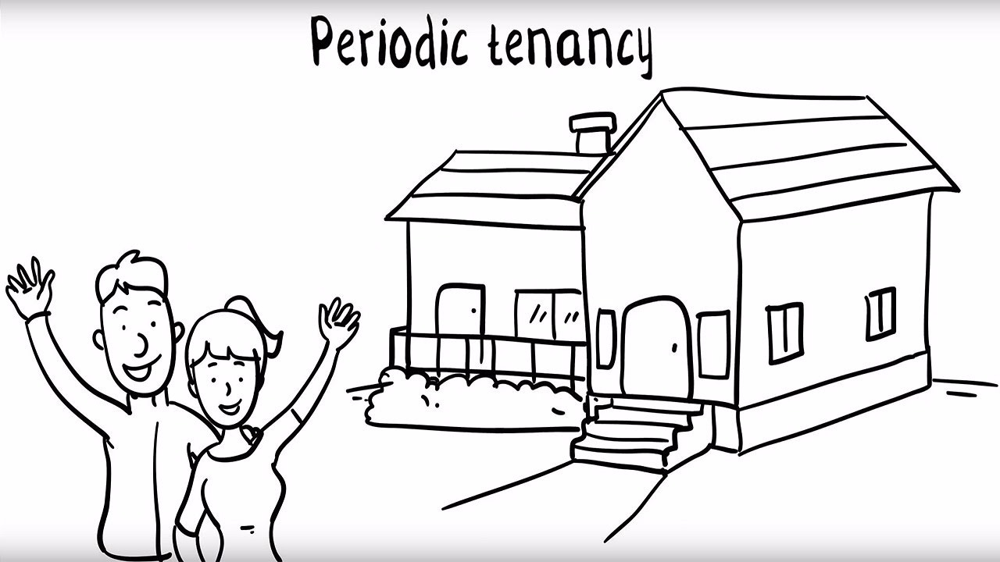
用程序来模拟生活
上面的生活场景中，Tony 通过中介来找房子，因为找房子的过程实在太繁琐了，而且对房源信息不了解。通过中介，他省去了很多麻烦的细节，合同也是直接跟中介签，你甚至可能都不知道房东是谁。
我们将通过程序来模拟一下上面找房子的过程。
源码示例：
class HouseInfo:
"房源信息"
def __init__(self, area, price, hasWindow, bathroom, kitchen, address, owner):
self.__area = area
self.__price = price
self.__window = hasWindow
self.__bathroom = bathroom
self.__kitchen = kitchen
self.__address = address
self.__owner = owner
def getAddress(self):
return self.__address
def getOwnerName(self):
return self.__owner.getName()
def showInfo(self, isShowOwner = True):
print("面积:" + str(self.__area) + "平米",
"价格:" + str(self.__price) + "元",
"窗户:" + ("有" if self.__window else "没有"),
"卫生间:" + self.__bathroom,
"厨房:" + ("有" if self.__kitchen else "没有"),
"地址:" + self.getAddress(),
"房东:" + self.getOwnerName() if isShowOwner else "")
class HousingAgency:
"房屋中介"
def __init__(self, name):
self.__houseInfos = []
self.__name = name
def getName(self):
return self.__name
def addHouseInfo(self, houseInfo):
self.__houseInfos.append(houseInfo)
def removeHouseInfo(self, houseInfo):
for info in self.__houseInfos:
if(info == houseInfo):
self.__houseInfos.remove(info)
def getSearchCondition(self, description):
"这里有一个将用户描述信息转换成搜索条件的逻辑。(为节省篇幅这里原样返回描述)"
return description
def getMatchInfos(self, searchCondition):
"根据房源信息的各个属性查找最匹配的信息。(为节省篇幅这里略去匹配的过程，全部输出)"
print(self.getName(), "为您找以下最适合的房源：")
for info in self.__houseInfos:
info.showInfo(False)
return self.__houseInfos
def signContract(self, houseInfo, time):
"与房东签订协议"
print(self.getName(), "与房东", houseInfo.getOwnerName(), "签订", houseInfo.getAddress(),
"的房子的的租赁合同，租期", time, "年。 合同期内", self.getName(), "有权对其进行使用和转租！")
def signContracts(self, time):
for info in self.__houseInfos :
self.signContract(info, time)
class HouseOwner:
"房东"
def __init__(self, name, address):
self.__name = name
self.__address = address
self.__houseInfo = None
def getName(self):
return self.__name
def getAddress(self):
return self.__address
def setHouseInfo(self, area, price, hasWindow, bathroom, kitchen):
self.__houseInfo = HouseInfo(area, price, hasWindow, bathroom, kitchen, self.getAddress(), self)
def publishHouseInfo(self, agency):
agency.addHouseInfo(self.__houseInfo)
print(self.getName() + "在", agency.getName(), "发布房源出租信息：")
self.__houseInfo.showInfo()
class Custom:
"房客，租房人"
def __init__(self, name):
self.__name = name
def getName(self):
return self.__name
def findHouse(self, description, agency):
print("我是" + self.getName() + ", 我想要找一个\"" + description + "\"的房子")
print()
return agency.getMatchInfos(agency.getSearchCondition(description))
def seeHouse(self, houseInfos):
"去看房，选择最使用的房子。(这里省略看房的过程)"
size = len(houseInfos)
return houseInfos[size-1]
def signContract(self, houseInfo, agency, time):
"与中介签订协议"
print(self.getName(), "与中介", agency.getName(), "签订", houseInfo.getAddress(),
"的房子的租赁合同, 租期", time, "年。合同期内", self.__name, "有权对其进行使用！")
测试代码：
def testRenting():
myHome = HousingAgency("我爱我家")
zhangsan = HouseOwner("张三", "上地西里");
zhangsan.setHouseInfo(20, 2500, 1, "独立卫生间", 0)
zhangsan.publishHouseInfo(myHome)
lisi = HouseOwner("李四", "当代城市家园")
lisi.setHouseInfo(16, 1800, 1, "公用卫生间", 0)
lisi.publishHouseInfo(myHome)
wangwu = HouseOwner("王五", "金隅美和园")
wangwu.setHouseInfo(18, 2600, 1, "独立卫生间", 1)
wangwu.publishHouseInfo(myHome)
print()
myHome.signContracts(3)
print()
tony = Custom("Tony")
houseInfos = tony.findHouse("18平米左右，要有独卫，要有窗户，最好是朝南，有厨房更好！价位在2000左右", myHome)
print()
print("正在看房，寻找最合适的住巢……")
print()
AppropriateHouse = tony.seeHouse(houseInfos)
tony.signContract(AppropriateHouse, myHome, 1)
输出结果：
张三在 我爱我家 发布房源出租信息：
面积:20平米 价格:2500元 窗户:有 卫生间:独立卫生间 厨房:没有 地址:上地西里 房东:张三
李四在 我爱我家 发布房源出租信息：
面积:16平米 价格:1800元 窗户:有 卫生间:公用卫生间 厨房:没有 地址:当代城市家园 房东:李四
王五在 我爱我家 发布房源出租信息：
面积:18平米 价格:2600元 窗户:有 卫生间:独立卫生间 厨房:有 地址:金隅美和园 房东:王五
我爱我家 与房东 张三 签订 上地西里 的房子的的租赁合同，租期 3 年。 合同期内 我爱我家 有权对其进行使用和转租！
我爱我家 与房东 李四 签订 当代城市家园 的房子的的租赁合同，租期 3 年。 合同期内 我爱我家 有权对其进行使用和转租！
我爱我家 与房东 王五 签订 金隅美和园 的房子的的租赁合同，租期 3 年。 合同期内 我爱我家 有权对其进行使用和转租！
我是Tony, 我想要找一个"18平米左右，要有独卫，要有窗户，最好是朝南，有厨房更好！价位在2000左右"的房子
我爱我家 为您找以下最适合的房源：
面积:20平米 价格:2500元 窗户:有 卫生间:独立卫生间 厨房:没有 地址:上地西里
面积:16平米 价格:1800元 窗户:有 卫生间:公用卫生间 厨房:没有 地址:当代城市家园
面积:18平米 价格:2600元 窗户:有 卫生间:独立卫生间 厨房:有 地址:金隅美和园
正在看房，寻找最合适的住巢……
Tony 与中介 我爱我家 签订 金隅美和园 的房子的租赁合同, 租期 1 年。合同期内 Tony 有权对其进行使用！
从剧情中思考中介模式
从这个示例中我们知道，Tony 找房子并不需要与房东进行直接交涉，甚至连房东是谁都不知道，他只需要与中介进行交涉即可，一切都可通过中介完成。使得他找房子的过程，由这样一个状态：
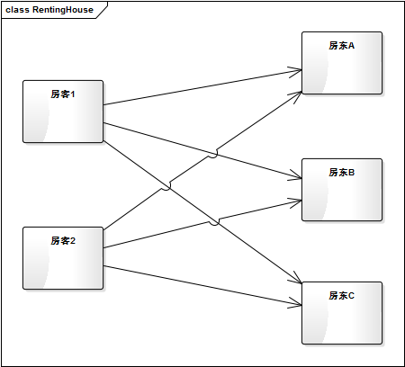
变成了这样一个状态：
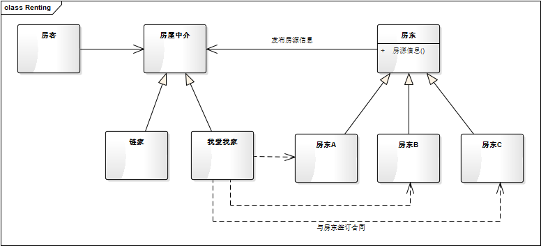
这无疑给他减少了很多的麻烦。
这种由中介来承接房客与房东之间的交互的过程，在程序中叫做中介模式。用一个中介对象来封装一系列的对象交互，中介者使各对象不需要显式地相互引用，从而使其耦合松散，而且可以独立地改变它们之间的交互。中介者模式又称为调停者模式，它是一种对象行为型模式。
中介模式的模型抽象
在很多系统中，很容易多个类相互耦合，形成了网状结构。而中介模式将这种网状结构分离为星型结构。
原始的网状结构：
有中介者的星型结构：

类图
根据上面的示例代码，我们可以大致地构建出中介模式的类图关系如下：
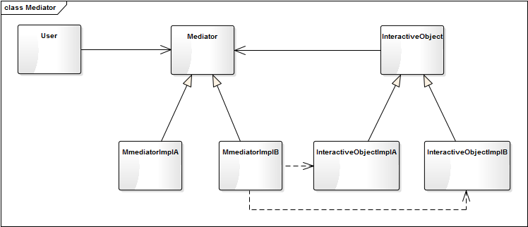
我再举一个实际应用中的例子。不管是 QQ、钉钉这类支持视频通迅的社交软件，还是 51Talk、TutorABC、ABC360 这类在线互联网教育的产品，都需要和通迅设备（扬声器、麦克风、摄像头）进行交互。在移动平台各类通迅设备一般只会有一个，但在 PC 端（尤其是 Windows 电脑），你可能会有多个扬声器、多个麦克风，甚至有多个摄像头，还可能会在通话的过程中由麦克风 A 切换到麦克风 B。如何与这些繁杂的设备进行交互呢？
聪明的你一定会想到：用中介模式啊！对，就是它。我们看一下如何设计它的结构。
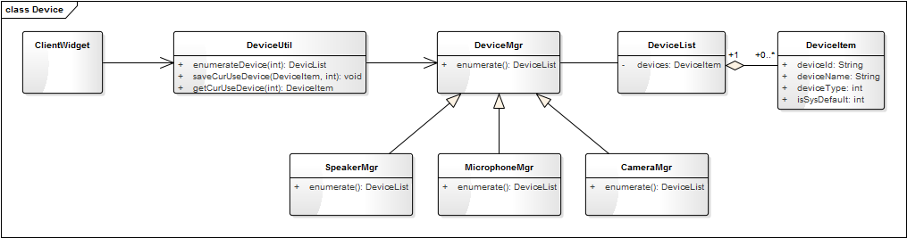
上图中 DeviceUtil 其实就是中介者，客户端界面通过 DeviceUtil 这个中介与设备进行交互，这样界面类 ClientWidget 就不用同时维护三个 DeviceMgr 的对象，而只要与一个 DeviceUtil 的对象进行交互就可以。ClientWidget 可通过 DeviceUtil 枚举各类型（扬声器、麦克风、摄像头）的设备，同时可以通过 DeviceUtil 来读取和保存当前正在使用的各类型设备。
这时，可能有读者要问了：为什么 DeviceUtil 到 DeviceMgr 的依赖指向与模型图不一样啊！这是因为这个应用中 ClientWidget 与 DeviceMgr 是单向的交互，只有 ClientWidget 调用 DeviceMgr，而一般不会有 DeviceMgr 调用 ClientWidget 的情况。而模型图是同时支持双向的交互，InteractiveObject 通过直接依赖与 Mediator 进行交互，而 User 也通过 Mediator 间接地与 InteractiveObjectImplA、InteractiveObjectImplB 进行交互（图中虚线表示）。
模型说明
- 中介模式的优点：
- Mediator 将原本分布于多个对象间的行为集中在一起，作为一个独立的概念并将其封装在一个对象中，简化了对象之间的交互。
- 将多个调用者与多个实现者间多对多的交互关系，转换为一对多的交互，一对多的关系更易于理解、维护和扩展。大大减少了多个对象相互交差引用的情况。
- 中介模式的缺点：
通过中介找房子给我们带来了很多的便利，但也存在诸多明显问题，比如，很容易遇到黑中介（各种不规范和坑诈，也许你正深陷其中），或者高昂的中介费（本就受伤的心灵又多补了一刀）。
- 中介者承接了所有的交互逻辑，交互的复杂度变成了中介的复杂度，中介者类会变得越来越庞大和复杂，难于维护。
- 中介者出问题会导致多个使用者同时出问题。
应用场景
- 一组对象以定义良好但是复杂的方式进行通信。产生的相互依赖关系结构混乱且难以理解。
- 一个对象引用其他很多对象并且直接与这些对象通信，导致难以复用该对象。
- 想通过一个中间类来封装多个类中的行为，而又不想生成太多的子类。
07 代理模式：帮我拿一下快递
【故事剧情】
八月中秋已过，冬天急速飞来……一场秋雨一场寒，十场秋雨穿上棉！在下了两场秋雨之后，Tony 已经冻的瑟瑟发抖了。周六，Tony 在京东上买了一双雪地鞋准备过冬了，但是忘了选择京东自营的货源，第二天穿新鞋的梦想又不能如期实现了。
周二，Tony 正在思考一个业务逻辑的实现方式，这时一通电话来了，“您好！圆通快递。您的东西到了，过来取一下快递！”。Tony 愣了一下，转念明白：是周六买的鞋子，本来以来第二天就能到的，所以填的是家里的地址。这下可好，人都不在家了，咋办呢？
Tony 快速思索了一下，他想起了住一起的邻居 Wendy。Wendy 是一个小提琴老师，属于自由职业者，平时在艺术培训机构或到学生家里上上课，她在家的时间比较多。于是赶紧拿起手机呼叫 Wendy 帮忙：“你好，在家吗？能帮忙拿一下快速吗？”……
万幸的是 Wendy 正好在家，在她的帮助下终于顺利拿到快递，减了不少麻烦。

用程序来模拟生活
在生活中，我们经常要找人帮一些忙：帮忙收快递，帮忙照看宠物狗。在程序中，有一种类似的设计，叫代理模式。在开始之前，我们先来模拟一下上面的故事案例。
源码示例：
class ReceiveParcel:
"接收包裹"
def __init__(self, name):
self.__name = name
def getName(self):
return self.__name
def receive(self, parcelContent):
pass
class TonyReception(ReceiveParcel):
"Tony接收"
def __init__(self, name, phoneNum):
super().__init__(name)
self.__phoneNum = phoneNum
def getPhoneNum(self):
return self.__phoneNum
def receive(self, parcelContent):
print("货物主人：" + self.getName() + "， 手机号：" + self.getPhoneNum())
print("接收到一个包裹，包裹内容：" + parcelContent)
class WendyReception(ReceiveParcel):
"Wendy接收"
def __init__(self, name, receiver):
super().__init__(name)
self.__receiver = receiver
def receive(self, parcelContent):
print("我是" + self.__receiver.getName() + "的朋友， 我来帮他代收快递！")
if(self.__receiver is not None):
self.__receiver.receive(parcelContent)
print("代收人：" + self.getName())
测试代码：
def testProxy():
tony = TonyReception("Tony", "18512345678")
wendy = WendyReception("Wendy", tony)
wendy.receive("雪地靴")
输出结果：
我是Tony的朋友， 我来帮他代收快递！
货物主人：Tony， 手机号：18512345678
接收到一个包裹，包裹内容：雪地靴
代收人：Wendy
从剧情中思考代理模式
从上面的示例中我们可以发现，包裹实际上是 Tony 的，但是 Wendy 代替 Tony 的身份帮忙接收了包裹，Wendy 需要使用 Tony 的身份并获得快递员的验证（Tony 手机号）才能成功接收包裹。像这样，一个对象完成某项动作或任务，是通过对另一个对象的引用来完成，这种模式叫代理模式。
代理模式（Proxy Pattern）：给某一个对象提供一个代理，并由代理对象控制对原对象的引用。代理模式的英文叫做 Proxy 或 Surrogate，它是一种对象结构型模式。
在某些情况下，一个客户不想或者不能直接引用一个对象，此时可以通过一个称之为“代理”的第三者来实现间接引用。如上面的示例中，Tony 因为不在家，所以不能亲自接收包裹，但他可以叫 Wendy 来代他接收，这里 Wendy 就是代理，她代理了 Tony 的身份去接收快递。
代理模式的模型抽象
代码框架
代理模式有三个关键要素，它们分别是：
- 主题（Subject）：定义“操作/活动/任务”的接口类。
- 真实主题（RealSubject）：真正完成“操作/活动/任务”的具体类。
- 代理主题（ProxySubject）：代替真实主题完成“操作/活动/任务”的代理类。
根据这三个要素，我们抽象出一个较为通用的代码框架。
class Subject:
"主题"
def request(self):
pass
class RealSubject(Subject):
"代理主题"
def request(self):
print("RealSubject todo something...")
class ProxySubject(Subject):
"代理主题"
def __init__(self, subject):
self.__realSubject = subject
def request(self):
self.preRequest()
if(self.__realSubject is not None):
self.__realSubject.request()
self.afterRequest()
def preRequest(self):
print("preRequest")
def afterRequest(self):
print("afterRequest")
def client():
"客户端调用类"
realObj = RealSubject()
proxyObj = ProxySubject(realObj)
proxyObj.request()
类图
上面的代码框架可用类图表示如下：
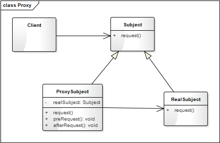
基于框架的实现
上面的示例代码中，ReceiveParcel 其实就是 Subject，TonyReception 其实就是 RealSubject，WendyReception 其实就是 ProxySubject，而 receive 其实就是 request。
我们可以按上面的框架对 WendyReception 进行稍微的改动，如下：
class WendyReception(ReceiveParcel):
"Wendy接收"
def __init__(self, name, receiver):
super().__init__(name)
self.__receiver = receiver
def receive(self, parcelContent):
self.preReceive()
if(self.__receiver is not None):
self.__receiver.receive(parcelContent)
self.afterReceive()
def preReceive(self):
print("我是" + self.__receiver.getName() + "的朋友， 我来帮他代收快递！")
def afterReceive(self):
print("代收人：" + self.getName())
测试代码不用变。自己跑一下，会发现输出结果和之前的是一样的。
模型说明
代理对象可以在客户端和目标对象之间起到中间调和的作用，并且可以通过代理对象隐藏不希望被客户端看到的内容和服务，或者添加客户需要的额外服务。
在实现生活中能找到非常的代理模式的模型：火车票/机票的代售点；银行支票在市场交易中用来代替现金，并提供对签发人账号上资金的控制；代表公司出席一些商务会议。
代理模式的优点
- 代理模式能够协调调用者和被调用者，在一定程度上降低了系统的耦合度。
- 可以灵活地隐藏被代理对象的部分功能和服务，也增加额外的功能和服务。
代理模式的缺点
- 由于在客户端和真实主题之间增加了代理对象，因此有些类型的代理模式可能会造成请求的处理速度变慢。
- 实现代理模式需要额外的工作，有些代理模式的实现非常复杂。
应用场景
（1）不想或者不能直接引用一个对象时
如在移动端加载网页信息时，因为下载真实大图比较耗费流量和性能，可以用一个小图代替进行渲染（用一个代理对象去下载小图），在真正点击图片时，才去下载大图，显示大图效果。还有 HTML 中的占位符，其实也是代理的思想。
（2）想对一个对象的功能进行加强时
如在字体（Font）渲染时，对粗体（BoldFont）进行渲染时，可使用字体 Font 对象进行代理，只要在对 Font 进行渲染后，进行一步加粗的操作即可。
（3）各种特殊用途的代理：远程代理、虚拟代理、Copy-on-Write 代理、保护（Protect or Access）代理、Cache 代理、防火墙（Firewall）代理、同步化（Synchronization）代理、智能引用（Smart Reference）代理。这部分具体的运用可查阅相关资料。
08 装饰模式：你想怎么穿就怎么穿
故事剧情
工作两年后，Tony 因为换工作而搬了一次家！这是一个4室1厅1卫1厨的户型，住了4户人家。恰巧这里住的都是年轻人，有男孩也有女孩，而 Tony 就是在这里遇上了自己喜欢的人，她叫 Jenny。Tony 和 Jenny 每天都低头不见抬头见，但 Tony 是一个程序猿，天生不善言辞、不懂着装，老被 Jenny 嫌弃：满脸猥琐，一副屌丝样！
被嫌弃后，Tony 痛定思痛：一定要改善一下自己的形象，摆脱屌丝样！于是叫上自己的死党 Henry 去了五彩城……
Tony 在这个大商城中兜兜转转，被各个商家教化着该怎样搭配衣服：衬衫要套在腰带里面，风衣不要系纽扣，领子要立起来……
在反复试穿了一个晚上的衣服之后，终于找到一套还算凑合的行装：下面是一条卡其色休闲裤配一双深色休闲皮鞋，加一条银色针扣头的黑色腰带；上面是一件紫红色针织毛衣，内套一件白色衬衫；头上带一副方形黑框眼镜。整体行装虽不潮流，却透露出一种工作人士的成熟、稳健和大气！
（图片来自网络）
用程序来模拟生活
Tony 是一个程序员，给自己搭配了一套着装：一条卡其色休闲裤、一双深色休闲皮鞋、一条银色针扣头的黑色腰带、一件紫红色针织毛衣、一件白色衬衫、一副方形黑框眼镜。但类似的着装也可以穿在其他的人身上，比如一个老师也可以这样穿：一双深色休闲皮鞋、一件白色衬衫、一副方形黑框眼镜。
我们就用程序来模拟这样一个情景。
源码示例：
class Person:
"人"
def __init__(self, name):
self.__name = name
def getName(self):
return self.__name
def wear(self):
print("我的着装是：")
class Engineer(Person):
"工程师"
def __init__(self, name, skill):
super().__init__(name)
self.__skill = skill
def getSkill(self):
return self.__skill
def wear(self):
print("我是" + self.getSkill() + "工程师" + self.getName())
super().wear()
class Teacher(Person):
"教师"
def __init__(self, name, title):
super().__init__(name)
self.__title = title
def getTitle(self):
return self.__title
def wear(self):
print("我是" + self.getName() + self.getTitle())
super().wear()
class ClothingDecorator(Person):
"服装装饰器"
def __init__(self, person):
self._decorated = person
def wear(self):
self._decorated.wear()
class CasualPantDecorator(ClothingDecorator):
"休闲裤"
def __init__(self, person):
super().__init__(person)
def wear(self):
super().wear()
print("一条卡其色休闲裤")
class BeltDecorator(ClothingDecorator):
"腰带"
def __init__(self, person):
super().__init__(person)
def wear(self):
super().wear()
print("一条银色针扣头的黑色腰带")
class LeatherShoesDecorator(ClothingDecorator):
"皮鞋"
def __init__(self, person):
super().__init__(person)
def wear(self):
super().wear()
print("一双深色休闲皮鞋")
class KnittedSweaterDecorator(ClothingDecorator):
"针织毛衣"
def __init__(self, person):
super().__init__(person)
def wear(self):
super().wear()
print("一件紫红色针织毛衣")
class WhiteShirtDecorator(ClothingDecorator):
"白色衬衫"
def __init__(self, person):
super().__init__(person)
def wear(self):
super().wear()
print("一件白色衬衫")
class GlassesDecorator(ClothingDecorator):
"眼镜"
def __init__(self, person):
super().__init__(person)
def wear(self):
super().wear()
print("一副方形黑框眼镜")
测试代码：
def testDecorator():
tony = Engineer("Tony", "客户端")
pant = CasualPantDecorator(tony)
belt = BeltDecorator(pant)
shoes = LeatherShoesDecorator(belt)
shirt = WhiteShirtDecorator(shoes)
sweater = KnittedSweaterDecorator(shirt)
glasses = GlassesDecorator(sweater)
glasses.wear()
print()
decorateTeacher = GlassesDecorator(WhiteShirtDecorator(LeatherShoesDecorator(Teacher("wells", "教授"))))
decorateTeacher.wear()
上面的测试代码中：
decorateTeacher = GlassesDecorator(WhiteShirtDecorator(LeatherShoesDecorator(Teacher("wells", "教授"))))
这个写法，大家不要觉得奇怪，它其实就是将多个对象的创建过程合在了一起，其实是一种优雅的写法（是不是少了好几行代码？）。创建的 Teacher 对象又通过参数传给 LeatherShoesDecorator 的构造函数，而创建的 LeatherShoesDecorator 对象又通过参数传给 WhiteShirtDecorator 的构造函数，以此类推……
输出结果：
我是客户端工程师Tony
我的着装是：
一条卡其色休闲裤
一条银色针扣头的黑色腰带
一双深色休闲皮鞋
一件白色衬衫
一件紫红色针织毛衣
一副方形黑框眼镜
我是wells教授
我的着装是：
一双深色休闲皮鞋
一件白色衬衫
一副方形黑框眼镜
从剧情中思考装饰模式
上面的示例中，Tony 为了改善自己的形象，整体换了个着装，改变了自己的气质，使自己看起来不再是那么猥琐的屌丝样。俗话说一个人帅不帅，得看三分长相七分打扮。同一个人，不一样的着装，给人一种完全不一样的感觉。我们可以任意搭配不同的衣服、围巾、裤子、鞋子、眼镜、帽子以达到不同的效果。不同的搭配，形成不同的风格，透露不同的气质。在这个追求个性与自由的时代，穿着的风格可谓是开放到了极致，真是你想怎么穿就怎么穿！如果你是去参加一个正式会议或演讲，可以穿一套标配西服；如果你是去大草原，想骑着骏马驰骋天地，便该穿上一套马服马裤马鞋；如果你是漫迷，去参加动漫节，亦可穿上 Cosplay 的衣服，让自己成为那个内心向往的主角；如果你是……
这样一个时时刻刻发现在我们生活中的着装问题，就是程序中装饰模式的典型样例。
装饰模式
装饰模式（Decorator Pattern）：动态地给一个对象增加一些额外的职责（Responsibility），就增加对象功能来说，装饰模式比生成子类实现更为灵活。
就故事中这个示例来说，由结构庞大的子类继承关系转换成了结构紧凑的装饰关系：

继承关系：

装饰关系
装饰模式的特点
- 可灵活地给一个对象增加职责或拓展功能
如上面的示例中，可任意地穿上自己想穿的衣服。不管穿上什么衣服，你还是那个你，但穿上不同的衣服你就会有不同的外表。
- 可增加任意多个装饰
你可以只穿一件衣服，也可以只穿一条裤子，也可以衣服和裤子各种搭配的穿，全随你意！
- 装饰的顺序不同，可能产生不同的效果
在上面的示例中，Tony 是针织毛衣穿在外面，白色衬衫穿在里面。当然，如果你愿意（或因为怕冷），也可以针织毛衣穿在里面，白色衬衫穿在外面。但两种着装穿出来的效果，给人的感觉肯定是完全不一样的，自己脑补一下，哈哈！
使用装饰模式的方式，想要改变装饰的顺序，也是非常简单的。只要把测试代码稍微改动一下即可，如下：
def testDecorator2():
tony = Engineer("Tony", "客户端")
pant = CasualPantDecorator(tony)
belt = BeltDecorator(pant)
shoes = LeatherShoesDecorator(belt)
sweater = KnittedSweaterDecorator(shoes)
shirt = WhiteShirtDecorator(sweater)
glasses = GlassesDecorator(shirt)
glasses.wear()
结果如下：
我是客户端工程师Tony
我的着装是：
一条卡其色休闲裤
一条银色针扣头的黑色腰带
一双深色休闲皮鞋
一件紫红色针织毛衣
一件白色衬衫
一副方形黑框眼镜
装饰模式的模型抽象
类图
通过上面的示例代码，我们知道了装饰模式的一个典型实现。我们再将其抽象成一个一般化的类图结构，如下：
上图中的 Component 是一个抽象类，代表具有某中功能（function）的组件，ComponentImplA 和 ComponentImplB 分别是其具体的实现子类。Decorator 是 Component 装饰器，里面有一个 Component 的对象 decorated，这就是被装饰的对象，装饰器可为被装饰对象添加额外的功能或行为（addBehavior）。DecoratorImplA 和 DecoratorImplB 分别是两个具体的装饰器（实现子类）。
这样一种模式很好地将装饰器与被装饰的对象进行解耦。
模型说明
装饰模式的优点：
- 使用装饰模式来实现扩展比继承更加灵活，它可以在不需要创造更多子类的情况下，将对象的功能加以扩展。
- 可以动态地给一个对象附加更多的功能。
- 可以用不同的装饰器进行多重装饰，装饰的顺序不同，可能产生不同的效果。
- 装饰类和被装饰类可以独立发展，不会相互耦合；装饰模式相当于是继承的一个替代模式。
装饰模式的缺点：
- 与继承相比，用装饰的方式拓展功能更加容易出错，排错也更困难。对于多次装饰的对象，调试时寻找错误可能需要逐级排查，较为烦琐。
应用场景
- 有大量独立的扩展，为支持每一种组合将产生大量的子类，使得子类数目呈爆炸性增长。
- 需要动态地增加或撤销功能时。
- 不能采用生成子类的方法进行扩充时，如类定义不能用于生成子类。
装饰模式的应用场景非常广泛。如在实际项目开发中经常看到的过滤器，便可用装饰模式的方式去实现。如果你是 Java 程序员，对 IO 中的 FilterInputStream 和 FilterOutputStream 一定不陌生，它的实现其实就是一个装饰模式。FilterInputStream(FilterOutputStream) 就是一个装饰器，而 InputStream(OutputStream) 就是被装饰的对象。
我们看一下创建对象过程：
DataInputStream dataInputStream = new DataInputStream(new FileInputStream("C:/text.txt"));
DataOutputStream dataOutputStream = new DataOutputStream(new FileOutputStream("C:/text.txt"));
这个写法与上面 Demo 中的
decorateTeacher = GlassesDecorator(WhiteShirtDecorator(LeatherShoesDecorator(Teacher("wells", "教授"))))
是不是很相似？都是一个对象套一个对象的方式进行创建。
还有一个场景，如果你对图形图像处理有一定了解，就会知道对图像的处理其实就是对一个二维坐标像素数据的处理，如图像的灰度化、梯度化（锐化）、边缘化、二值化。这些操作顺序不同就会造成不同的效果，也是适合用装饰模式来进行封装。
09 工厂模式：你要拿铁还是摩卡
【故事剧情】
Tony 工作的公司终于有了自己的休息区！ 在这里大家可以看书、跑步、喝咖啡、玩体感游戏！开心工作，快乐生活！
现在要说的是休息区里的自制咖啡机，因为公司里有很多咖啡客，所以颇受欢迎！
咖啡机的使用也非常简单，咖啡机旁边有已经准备好的咖啡豆，想要喝咖啡，只要往咖啡机里加入少许的咖啡豆，然后选择杯数和浓度，再按一下开关，10分钟后，带着浓香味的咖啡就为你准备好了！当然，如果你想喝一些其他口味的咖啡，也可以自备咖啡豆，无论你是要拿铁还是摩卡，这些都还是问题。那问题来了，你是拿铁还是摩卡呢？
用程序来模拟生活
有人可能会说了：不就是一个咖啡机吗，有什么好炫耀的！非也非也，我只是要告诉你如何从生活的每一件小事中领悟设计模式，因为这里又隐藏了一个模式，你猜到了吗？我们还是先用程序来模拟一个上面的场景吧！
源码示例：
class Coffee:
"咖啡"
def __init__(self, name):
self.__name = name
def getName(self):
return self.__name
def getTaste(self):
pass
class CaffeLatte(Coffee):
"拿铁咖啡"
def __init__(self, name):
super().__init__(name)
def getTaste(self):
return "轻柔而香醇。"
class MochaCoffee(Coffee):
"摩卡咖啡"
def __init__(self, name):
super().__init__(name)
def getTaste(self):
return "丝滑与醇厚。"
class Coffeemaker:
"咖啡机"
@staticmethod
def makeCoffee(coffeeBean):
coffee = None
if(coffeeBean == "拿铁风味咖啡豆"):
coffee = CaffeLatte("拿铁咖啡")
elif(coffeeBean == "摩卡风味咖啡豆"):
coffee = MochaCoffee("摩卡咖啡")
else:
coffee = Coffee()
return coffee
测试代码：
def testCoffeeMaker():
latte = Coffeemaker.makeCoffee("拿铁风味咖啡豆")
print(latte.getName(), "已为您准备好了，口感：" + latte.getTaste() + "请慢慢享用！")
mocha = Coffeemaker.makeCoffee("摩卡风味咖啡豆")
print(mocha.getName(), "已为您准备好了，口感：" + mocha.getTaste() + "请慢慢享用！")
输出结果：
拿铁咖啡 已为您准备好了，口感：轻柔而香醇。请慢慢享用！
摩卡咖啡 已为您准备好了，口感：丝滑与醇厚。请慢慢享用！
从剧情中思考工厂模式
在上面的示例中，我们可以通过咖啡机制作咖啡，加入不同的咖啡豆就产生不同口味的咖啡。就如同一个工厂一样，我们加入不同的配料，则会产出不同的产品，这就是程序设计中工厂模式的概念。
专门定义一个类来负责创建其他类的实例，根据参数的不同创建不同类的实例，被创建的实例通常都具有共同的父类。这个模式叫简单工厂模式（Simple Factory Pattern），又称为静态工厂方法模式（之所以叫静态，是因为在各种面向对象的计算机语言中通常被定义成一个静态（static）方法，这样便可通过类名直接调用，工厂方法模式见下面的拓展内容）。用来创建对象的类叫工厂类，比如上面示例中 CoffeeMaker 就是工厂类。上面示例的类图关系如下：
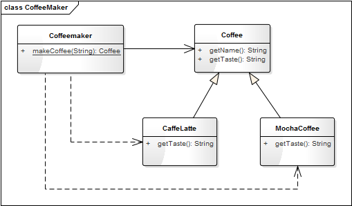
工厂模式的模型抽象
类图
简单工厂模式是一个非常简单的模式，其类图关系表示如下：

模型说明
简单工厂模式对创建过程抽象出单独的一个类，将对象的创建和对象的使用过程进行分离，降低了系统的耦合度，使得两者修改起来都相对容易。
在应用简单工厂模式的程序时要注意以下几点：
- 产品具有明显的继承关系，且产品的类型不宜太多。
- 所有的产品具有相同的方法和类似的功能，这样使用者就可以只关注产品的抽象类有哪些方法，而不用对具体的类型进行向下转型。
简单工厂的优点
- 抽象出一个专门的类来负责某类对象的创建，分割出创建的职责，不能直接去创建具体的对象，只要传入适当的参数即可。
- 使用者可以不用关注具体对象的类名称，只知道传入什么参数可以创建哪些需要的对象。
简单工厂的缺点
- 不易拓展，一旦添加新的产品类型，就不得不修改工厂的创建逻辑。
- 产品类型较多时，工厂的创建逻辑可能过于复杂，一但出错可能造成所以产品的创建失败，不利于系统的维护。
模型的拓展应用
基于经典的简单工厂模式之上，我们也可以对它进行一此延伸和拓展。一般的简单工厂模式中我们可以创建任意多个对象，但在一些特定场景下，我们可能希望每一个具体的类型只能创建一个对象，这就需要对工厂类的实现方式做一修改。
比如在众多的在线教育产品和视频教学产品中都会有一个白板的功能（用电子白板来模拟线下的黑板功能），白板功能中会需要不同类型的画笔，比如直线、矩形、椭圆等，但在一个白板中我们只需要一个画笔。这就可通过对简单工厂模式进行一些修改以符合这种需求。具体的实现代码如下：
源码示例：
from abc import ABCMeta, abstractmethod
# 引入 ABCMeta 和 abstractmethod 来定义抽象类和抽象方法
from enum import Enum
# Python3.4 之后支持枚举 Enum 的语法
class PenType(Enum):
"""画笔类型"""
PenTypeLine = 1
PenTypeRect = 2
PenTypeEllipse = 3
class Pen(metaclass=ABCMeta):
"""画笔"""
def __init__(self, name):
self.__name = name
@abstractmethod
def getType(self):
pass
def getName(self):
return self.__name
class LinePen(Pen):
"""直线画笔"""
def __init__(self, name):
super().__init__(name)
def getType(self):
return PenType.PenTypeLine
class RectanglePen(Pen):
"""矩形画笔"""
def __init__(self, name):
super().__init__(name)
def getType(self):
return PenType.PenTypeRect
class EllipsePen(Pen):
"""椭圆画笔"""
def __init__(self, name):
super().__init__(name)
def getType(self):
return PenType.PenTypeEllipse
class PenFactory:
"""画笔工厂类"""
def __init__(self):
"定义一个字典(key:PenType，value：Pen)来存放对象,确保每一个类型只会有一个对象"
self.__pens = {}
def getSingleObj(self, penType, name):
"""获得唯一实例的对象"""
def createPen(self, penType):
"""创建画笔"""
if (self.__pens.get(penType) is None):
# 如果该对象不存在，则创建一个对象并存到字典中
if penType == PenType.PenTypeLine:
pen = LinePen("直线画笔")
elif penType == PenType.PenTypeRect:
pen = RectanglePen("矩形画笔")
elif penType == PenType.PenTypeEllipse:
pen = EllipsePen("椭圆画笔")
else:
pen = Pen("")
self.__pens[penType] = pen
# 否则直接返回字典中的对象
return self.__pens[penType]
测试代码：
def testPenFactory():
factory = PenFactory()
linePen = factory.createPen(PenType.PenTypeLine)
print("创建了 %s，对象id：%s， 类型：%s" % (linePen.getName(), id(linePen), linePen.getType()) )
rectPen = factory.createPen(PenType.PenTypeRect)
print("创建了 %s，对象id：%s， 类型：%s" % (rectPen.getName(), id(rectPen), rectPen.getType()) )
rectPen2 = factory.createPen(PenType.PenTypeRect)
print("创建了 %s，对象id：%s， 类型：%s" % (rectPen2.getName(), id(rectPen2), rectPen2.getType()) )
ellipsePen = factory.createPen(PenType.PenTypeEllipse)
print("创建了 %s，对象id：%s， 类型：%s" % (ellipsePen.getName(), id(ellipsePen), ellipsePen.getType()) )
输出结果
创建了 直线画笔，对象id：61077872， 类型：PenType.PenTypeLine
创建了 矩形画笔，对象id：61077936， 类型：PenType.PenTypeRect
创建了 矩形画笔，对象id：61077936， 类型：PenType.PenTypeRect
创建了 椭圆画笔，对象id：61077904， 类型：PenType.PenTypeEllipse
看到了吗？在上面的 Demo 中，我们 Create 了两次矩形画笔的对象 rectPen 和 rectPen2，但这两个变量指向的是同一个对象，因为对象的 ID 是一样的，说明通过这种方式我们实现了每一个类型只创建一个对象。
应用场景
- 产品具有明显的继承关系，且产品的类型不宜太多。
- 所以的产品具有相同的方法和类似的属性，使用者不关心具体的类型，只希望传入合适的参数能返回合适的对象。
【拓展】工厂三姐妹
谈到工厂模式就不得不提及它的三朵姐妹花：简单工厂模式（小妹妹）、工厂方法模式（妹妹）、抽象工厂模式（姐姐）。这三种模式可以理解为同一种编程思想下的三个版本，从简单到高级不断升级。上面通篇所谈的其实就是我们最简单的一个版本——简单工厂模式。工厂方法是简单工厂的升级，抽象工厂又是工厂方法的升级。它们之间的区别和联系如下。
简单工厂模式
这是最简单的一个版本，只有一个工厂类 SimpleFactory，类中有一个静态创的建方法 createProduct，该方法通过参数传递的类型值（type）或名称（name）来创建具体的产品（子类）对象。
类图如下：

优点：
- 实现简单、结构浅析
缺点：
- 如果产品的种类非常多，createProduct 方法会变得非常庞大，switch … case …（或 if … else …）的判断会变得非常多。
- 不符合开放—封闭原则（对拓展开放，对修改封闭），如果要增加或删除一个产品种类，就要修改 switch … case …（或 if … else …）的判断代码。
尽管简单工厂模式不符合开放—封闭原则，但因为它简单，你仍然能在很多项目中看到它。
工厂方法模式
工厂方法模式是简单工厂模式的一个升级版本，为解决简单工厂模式中不符合开放-封闭原则的问题，我们对 SimpleFactory 进行了一个拆分，抽象出一个父类 Factory，并增加多个子类分别负责创建不同的具体产品。
类图如下：
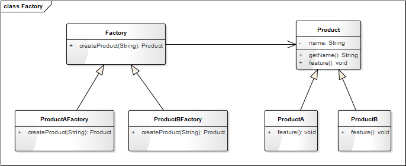
优点：
- 解决了简单工厂模式中不符合 开放—封闭原则 的问题，使程序更容易拓展。
- 实现简单
因为工厂方法模式简单且易于拓展，因此在项目中应用的非常广泛，在很多标准库和开源项目中都能看到他的影子。
缺点：
- 对于有多种分类的产品，或具有二级分类的产品，工厂方法模式并不适用。
**多种分类：**如我们有一个电子白板白板程序，可以绘制各种图形。那么画笔的绘制功能可以理解为是一个工厂，而图形可以理解为一种产品；图形可以根据形状分为直线、矩形、椭圆等，也可以根据颜色分为红色图形、绿色图形、蓝色图形等。
二级分类： 如一个家电工厂，它可能同时生产冰箱、空调和洗衣机，那么冰箱、空调、洗衣机属于一级分类；而洗衣机又可能分为高效型的和节能型的，那么高效型洗衣机和节能型洗衣机就属于二级分类。
抽象工厂模式
抽象工厂模式又是工厂方法模式的升级版本，工厂方法模式不能解决具有二级分类的产品的创建，抽象工厂模式就是用来解决这一缺陷的。
我们来看一下上面的家电工厂的实现类图如下：

AppliancesFactory 是一个抽象的工厂类，定义了三个方法，分别用来生产冰箱（Refrigerator）、空调（Air-conditioner）、洗衣机（WashingMachine）。EfficientFactory 和 EnergySavingFactory 是两个具体的工厂类，分别用来生产高效型的家电和节能弄的家电。
抽象工厂模式的类图：

抽象工厂模式适合于有多个系列的产品，且每一个系列下有相同子分类的产品。我们定义一个抽象的工厂类 AbstractFactory，AbstractFactory 中定义生产每一个系列产品的方法；而两个具体的工厂实现类 Factory1 和 Factory2 分别生产子分类1的每一系列产品和子分类2的每一系列产品。
如上面家电的例子中，有冰箱、空调、洗衣机三个系列的产品，而每一个系列都有相同的子分类高效型和节能型。通过抽象工厂模式的类图，我们知道 Refrigerator、AirConditioner、WashingMachine 其实也可以不用继承自 HomeAppliances，因为可以把它们看成是独立的系列。当然真实项目中要根据实际应用场景而定，如果这三种家电有很多相同的属性，可以抽象出一个父类 HomeAppliances，如果差别很大则没有必要。
优点：
- 解决了具有二级分类的产品的创建。
缺点：
- 如果产品的分类超过二级，如三级甚至更多的级，抽象工厂模式将会变得非常臃肿。
- 不能解决产品有多种分类多种组合的问题。
进一步思考
如果产品出现三级甚至更多级的分类怎么办？
如果你的程序中出现了三级分类的对象，就需要重新审视一下你的设计，看一下有些类是不可以进行归纳、抽象合并的。如果实际的应用场景确实就是有三级甚至更多的分类怎么办？那就建议你不要使用工厂模式了，直接交给每一个具体的产品类自己去创建吧！因为超过三级（含三级）以上的分类，你的工厂类也会变得非常臃肿而难以维护；开发成本也会急巨增加。模式是死的，人是活的，不要为了使用设计模式而进行设计模式！
如果产品有多种分类多种组合怎么办？
如果产品有多种分类，就不能单独使用工厂模式了，需要结合其他的设计模式进行优化。如上面提到的白板程序，可以结合中介模式和工厂方法模式进行实现，具体内容请参考“模式大结合——工厂方法+中介”内容。
10 迭代模式：下一个就是你了
【故事剧情】
Tony 自小就有两颗大牙缺失、腐化，因为父母对牙齿健康的意识太缺失，一直没有治疗过。最近因为上火严重，牙齿更加疼痛，刷牙时水温稍微过低或过高都难耐无比，于是决定自己去医院看牙。
周末，Tony 带着医保卡来到空军总医院，这是 Tony 第一次走进北京这种大城市的医院。一楼大厅已经挤满了人，人数多的超过了他的想象。咨询完分诊台，花了近1个小时才排队挂上号：7楼牙科，序号0214，前面还有46人。Tony 坐电梯上了7楼，找到了对应的分诊室的位置，诊室外面等候区的座位已经坐满了人。
这里每一个诊室的医生诊断完一个病人之后，会呼叫下一位病人，这时外面的显示屏和语音系统就会自动播报下一位病人的名字。Tony 无聊地看着显示屏，下一位病人0170 Panda，请进入3号分诊室准备就诊；下一位病人0171 Lily……
因为人太多，等到12点前面仍然还有12个人，Tony 不得不下去吃个中饭，回来继续等。下一位病人0213 Nick，请进入3号分诊室准备就诊！Tony 眼睛一亮，**哎，妈呀！终于快到了，下一个就是我了！**看了一个时间，正好14:00……

用程序来模拟生活
医院使用排号系统来维持秩序，方便医生和病人。虽然仍然需要排队，且等待是一件非常烦人的事情，但如果没有排号系统，大家都挤在诊室门口将会是更可怕的一件事！这个排号系统就像是病人队伍的大管家，通过数字化的方式精确地维护着先来先就诊的秩序。下面我们用程序来模拟这一场景。
源码示例：
class Customer:
"客户"
def __init__(self, name):
self.__name = name
self.__num = 0
self.__clinics = None
def getName(self):
return self.__name
def register(self, system):
system.pushCustomer(self)
def setNum(self, num):
self.__num = num
def getNum(self):
return self.__num
def setClinic(self, clinic):
self.__clinics = clinic
def getClinic(self):
return self.__clinics
class Iterator:
"迭代器"
def __init__(self, data):
self.__data = data
self.__curIdx = -1
def current(self):
return self.__data[self.__curIdx] if(len(self.__data) >= self.__curIdx) else None
def next(self):
if (self.__curIdx < len(self.__data) - 1):
self.__curIdx += 1
return True
else:
return False
class NumeralSystem:
"排号系统"
__clinics = ("1号分诊室", "2号分诊室", "3号分诊室")
def __init__(self, name):
self.__customers = []
self.__curNum = 0
self.__name = name
def pushCustomer(self, customer):
customer.setNum(self.__curNum + 1)
click = NumeralSystem.__clinics[self.__curNum % len(NumeralSystem.__clinics)]
customer.setClinic(click)
self.__curNum += 1
self.__customers.append(customer)
print(customer.getName() + "您好！您已在" + self.__name+ "成功挂号，序号："
+ str(customer.getNum()).zfill(4) + "，请耐心等待！")
def getIterator(self):
return Iterator(self.__customers)
测试代码：
def testIterator():
numeralSystem = NumeralSystem("挂号台")
lily = Customer("Lily")
lily.register(numeralSystem);
pony = Customer("Pony")
pony.register(numeralSystem)
nick = Customer("Nick")
nick.register(numeralSystem)
tony = Customer("Tony")
tony.register(numeralSystem)
iterator = numeralSystem.getIterator()
while(iterator.next()):
customer = iterator.current()
print("下一位病人", str(customer.getNum()).zfill(4), customer.getName(), "请到", customer.getClinic(), "就诊。")
输出结果：
Lily您好！您已在挂号台成功挂号，序号：0001，请耐心等待！
Pony您好！您已在挂号台成功挂号，序号：0002，请耐心等待！
Nick您好！您已在挂号台成功挂号，序号：0003，请耐心等待！
Tony您好！您已在挂号台成功挂号，序号：0004，请耐心等待！
下一位病人 0001 Lily 请到 1号分诊室 就诊。
下一位病人 0002 Pony 请到 2号分诊室 就诊。
下一位病人 0003 Nick 请到 3号分诊室 就诊。
下一位病人 0004 Tony 请到 1号分诊室 就诊。
从剧情中思考迭代器模式
医院的排号系统就像是病人队伍的大管家，通过数字化的方式精确地维护着先来先就诊的秩序。医生不用在乎外面有多少人在等待，更不需要了解每一个人的名字和具体信息。他只要在诊断完一个病人后按一下按钮，排号系统就会自动为他呼叫下一位病人，这样医生就可只专注于病情的诊断！
这个排号系统就如同程序设计中的迭代器模式：提供一种方法访问一个容器（container）对象中各个元素，而又不需暴露该对象的内部细节。迭代器（Iterator）是按照一定的顺序对一个或多个容器中的元素从前往遍历的一种机制，比如 for 循环就是一种最简单的迭代器，对一个数组的遍历也是一种迭代遍历的过程。
有人可能会认为上面的实现反而复杂化了，直接一个 for 循环就能遍历所有的病人：
def visit(self):
for customer in self.__customers:
print("下一位病人", str(customer.getNum()).zfill(4), customer.getName(),
"请到", customer.getClinic(), "就诊。")
是的，一开始我也思考过这个问题。因为 Python 本身对迭代器的支持非常好，Python 的很多内置对象本身就是可遍历的（iterable），如 List、Tuple、Dictionary 都是可以遍历的。自定义的容器类，只要实现 \__iter\__和\__next\__ 两个方法也可以支持 for … in … 的方式进行遍历。
这里还是要以这种方式来实现，主要有两个原因：
- for … in … 的方式不能实现医生诊断完一个病人后，呼叫下一个（next）病人的功能。
- 这里讲的迭代器模式是一个一般化的方法，其他的编程语言对迭代器的支持可能并没有这么好。通过这一 Demo 的实现，有助于你更进一步地理解 Python 的 iterable 机制。
迭代器模式的模型抽象
迭代器的设计思路
迭代器其实就是维护一个当前的指针，这个指针可以指向当前的元素，可以返回当前所指向的元素，可以移到下一个元素的位置，通过这个指针可以遍历容器的所有元素。迭代器一般至少会有以下两种方法：
- current(); // 获得当前所指向的元素
- next(); // 移至下一个元素

这是最基本的两个方法，有了这两个方法，就可以从前往后地遍历各个元素。我们也可以增加一些更加丰富的方法，比如实现从后往前遍历。一些更为丰富的迭代器功能：
- toBegin() // 将指针移至起始位置
- toEnd() // 将指针移至结尾位置
- next() // 往后（下一个）移动一个元素
- previous() // 往前（上一个）移动一个元素
- current() // 获取当前的元素
这样可以同时实现往前遍历和往后遍历。
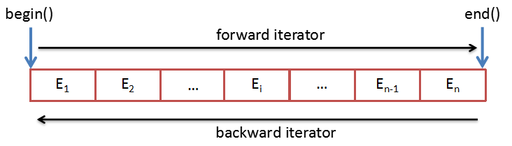
基于设计思路的实现
在理解了迭代器的设计思路之后，我们可以为上面示例代码中的迭代器增加一些更丰富的功能，以实现从后往前的遍历。
功能更丰富的迭代器：
class Iterator:
"迭代器"
def __init__(self, data):
self.__data = data
self.toBegin()
def toBegin(self):
"将指针移至起始位置"
self.__curIdx = -1
def toEnd(self):
"将指针移至结尾位置"
self.__curIdx = len(self.__data)
def next(self):
"往前移动一个元素"
if (self.__curIdx < len(self.__data) - 1):
self.__curIdx += 1
return True
else:
return False
def previous(self):
"往后移动一个元素"
if (self.__curIdx > 0):
self.__curIdx -= 1
return True
else:
return False
def current(self):
"获取当前的元素"
return self.__data[self.__curIdx] if (len(self.__data) >= self.__curIdx) else None
测试代码：
def testIterator():
numeralSystem = NumeralSystem("挂号台")
lily = Customer("Lily")
lily.register(numeralSystem);
pony = Customer("Pony")
pony.register(numeralSystem)
nick = Customer("Nick")
nick.register(numeralSystem)
tony = Customer("Tony")
tony.register(numeralSystem)
print()
print("从前往后遍历:")
iterator = numeralSystem.getIterator()
while(iterator.next()):
customer = iterator.current()
print("下一位病人", str(customer.getNum()).zfill(4), customer.getName(), "请到", customer.getClinic(), "就诊。")
print("从后往前遍历:")
iterator.toEnd()
while (iterator.previous()):
customer = iterator.current()
print("下一位病人", str(customer.getNum()).zfill(4), customer.getName(), "请到", customer.getClinic(), "就诊。")
输出结果：
Lily您好！您已在挂号台成功挂号，序号：0001，请耐心等待！
Pony您好！您已在挂号台成功挂号，序号：0002，请耐心等待！
Nick您好！您已在挂号台成功挂号，序号：0003，请耐心等待！
Tony您好！您已在挂号台成功挂号，序号：0004，请耐心等待！
从前往后遍历:
下一位病人 0001 Lily 请到 1号分诊室 就诊。
下一位病人 0002 Pony 请到 2号分诊室 就诊。
下一位病人 0003 Nick 请到 3号分诊室 就诊。
下一位病人 0004 Tony 请到 1号分诊室 就诊。
从后往前遍历:
下一位病人 0004 Tony 请到 1号分诊室 就诊。
下一位病人 0003 Nick 请到 3号分诊室 就诊。
下一位病人 0002 Pony 请到 2号分诊室 就诊。
下一位病人 0001 Lily 请到 1号分诊室 就诊。
说明：在这里从后往前遍历本身是没有意义的（医院不可能后来先就诊），只是为了说明迭代器这一功能的实现方式。
类图
一个迭代器一般对应着一个容器类，而一个容器会包含多个元素，这些元素可能会有不同的子类。他们的关系可表示成如下：
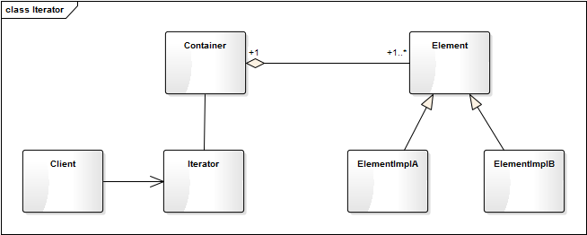
在实际的项目开发中有可能会有遇到一些更复杂的逻辑。如具有层级关系的组织架构：一个公司有 A、B、C 三个部门，每个部门有自己的部门成员，这时要遍历一个公司的所有成员。这里就会有类似这样的类图关系：
这里公司就对应 Container，部门就对应 Group。我们并不遍历 Group，而是按照一定的顺序遍历 Group 的每一个成员，一个 Group 遍历完后，再遍历下一个 Group。这样使用者只需要调用迭代 next() 方法就可以遍历所有的成员，而不用关注内部的组织架构。
模型说明
迭代器模式的优点
- 迭代器模式将存储数据和遍历数据的职责分离。
- 简化了聚合数据的访问方式。
- 可支持多种不同的方式（如顺序和逆序）遍历一个聚合对象。
迭代器模式的缺点
需要额外增加迭代器的功能实现，增加新的聚合类时，可能需要增加新的迭代器。
应用场景
- 集合的内部结构复杂，不想暴露对象的内部细节，只提供精简的访问方式。
- 需要提供统一的访问接口，从而对不同的集合使用同一的算法。
- 需要为一系列聚合对象提供多种不同的访问方式。
11 组合模式：自己组装电脑
【故事剧情】
Tony 用的笔记本电脑还是大学时候买的，到现在已经用了5年，虽然后面加过一次内存，也换过一次硬盘，但仍然跟不上 Tony 对性能的要求，改变不了它被淘汰的命运，是时候该换一台新的电脑了……
换什么电脑呢？MacBook，ThinkPad，还是台式机？经过几番思考之后，Tony 还是决定买台式机，因为作为软件开发，台式机性能会更高，编译程序也会更快。确定台式机后，一个新的问题又来了，是买一个整机呢，还是自己组装呢？在反复纠结两天之后，Tony 还是决定自己亲自动手组装。一来自己也了解一些硬件知识，正好趁这次机会对自己的知识做一个检验和实践；二来自己组装能便宜一大笔钱！
于是 Tony 在京东上浏览了各个配件，花了一个星期进行精心挑选（这可真是一个精细的活，需要考虑各种型号的性能，还要考虑不同硬件之间的兼容性，还需知道各个配件的尺寸确保能正常放进机箱，因为选的是小机箱），终于确定了各个子配件：
GIGABYTE Z170M M-ATX 的主板、Intel Core i5-6600K 的 CPU、Kingston Fury DDR4 的内存、Kingston V300 的 SSD 硬盘、Colorful iGame750 的显卡、DEEPCOOL 120T 水冷风扇、Antec VP 450P 的电源、AOC LV243XIP 的显示器、SAMA MATX 小板机箱……
周末，Tony 花了一天的时间才把这些配件组装成一个完整的整机。一次点亮，Tony 成就感十足！与购买相同性能的整机相比，不仅价格减了三成，而且加深了对各个硬件的了解。
用程序来模拟生活
只要你对硬件稍微有一些了解，或者打开过机箱换过组件，一定知道 CPU、内存、显卡是插在主板上的，而硬盘也是连在主板上的，在机箱的后面有一排的插口，可以连接鼠标、键盘、耳麦、摄像头等外接配件，而显示器需要单独插电源才能工作。我们可以用代码来模拟台式电脑的组成，这里假设每一个组件都有开始工作和结束工作两个功能，还可以显示自己的信息和组成结构。
源码示例：
class Component:
"组件，所有子配件的基类"
def __init__(self, name):
self._name = name
def showInfo(self, indent = ""):
pass
def isComposite(self):
return False
def startup(self, indent = ""):
print(indent + self._name + " 准备开始工作...")
def shutdown(self, indent = ""):
print(indent + self._name + " 即将结束工作...")
class CPU(Component):
"中央处理器"
def __init__(self, name):
super().__init__(name)
def showInfo(self, indent):
print(indent, end="")
print("CPU:" + self._name + ",可以进行高速计算。")
class MemoryCard(Component):
"内存条"
def __init__(self, name):
super().__init__(name)
def showInfo(self, indent):
print(indent, end="")
print("内存:" + self._name + ",可以缓存数据，读写速度快。")
class HardDisk(Component):
"硬盘"
def __init__(self, name):
super().__init__(name)
def showInfo(self, indent):
print(indent, end="")
print("硬盘:" + self._name + ",可以永久存储数据，容量大。")
class GraphicsCard(Component):
"显卡"
def __init__(self, name):
super().__init__(name)
def showInfo(self, indent):
print(indent, end="")
print("显卡:" + self._name + ",可以高速计算和处理图形图像。")
class Battery(Component):
"电源"
def __init__(self, name):
super().__init__(name)
def showInfo(self, indent):
print(indent, end="")
print("电源:" + self._name + ",可以持续给主板和外接配件供电。")
class Fan(Component):
"风扇"
def __init__(self, name):
super().__init__(name)
def showInfo(self, indent):
print(indent, end="")
print("风扇:" + self._name + "，辅助CPU散热。")
class Displayer(Component):
"显示器"
def __init__(self, name):
super().__init__(name)
def showInfo(self, indent):
print(indent, end="")
print("显示器:" + self._name + "，负责内容的显示。")
class Composite(Component):
"配件组合器"
def __init__(self, name):
super().__init__(name)
self._components = []
def showInfo(self, indent):
print(self._name + ",由以下部件组成:")
indent += "\t"
for element in self._components:
element.showInfo(indent)
def isComposite(self):
return True
def addComponent(self, component):
self._components.append(component)
def removeComponent(self, component):
self._components.remove(component)
def startup(self, indent):
super().startup(indent)
indent += "\t"
for element in self._components:
element.startup(indent)
def shutdown(self, indent):
super().startup(indent)
indent += "\t"
for element in self._components:
element.shutdown(indent)
class Mainboard(Composite):
"主板"
def __init__(self, name):
super().__init__(name)
def showInfo(self, indent):
print(indent + "主板:", end="")
super().showInfo(indent)
class ComputerCase(Composite):
"机箱"
def __init__(self, name):
super().__init__(name)
def showInfo(self, indent):
print(indent + "机箱:", end="")
super().showInfo(indent)
class Computer(Composite):
"电脑"
def __init__(self, name):
super().__init__(name)
def showInfo(self, indent):
print(indent + "电脑:", end="")
super().showInfo(indent)
测试代码：
def testComputer():
cpu = CPU("Intel Core i5-6600K")
memoryCard = MemoryCard("Kingston Fury DDR4")
hardDisk = HardDisk("Kingston V300 ")
graphicsCard = GraphicsCard("Colorful iGame750")
mainBoard = Mainboard("GIGABYTE Z170M M-ATX")
mainBoard.addComponent(cpu)
mainBoard.addComponent(memoryCard)
mainBoard.addComponent(hardDisk)
mainBoard.addComponent(graphicsCard)
battery = Battery("Antec VP 450P")
fan = Fan("DEEPCOOL 120T")
computerCase = ComputerCase("SAMA MATX")
computerCase.addComponent(battery)
computerCase.addComponent(mainBoard)
computerCase.addComponent(fan)
displayer = Displayer("AOC LV243XIP")
computer = Computer("Tony DIY电脑")
computer.addComponent(displayer)
computer.addComponent(computerCase)
computer.showInfo("")
print("\n开机过程:")
computer.startup("")
print("\n关机过程:")
computer.shutdown("")
输出结果：
电脑:Tony DIY电脑,由以下部件组成:
显示器:AOC LV243XIP，负责内容的显示。
机箱:SAMA MATX,由以下部件组成:
电源:Antec VP 450P,可以持续给主板和外接配件供电。
主板:GIGABYTE Z170M M-ATX,由以下部件组成:
CPU:Intel Core i5-6600K,可以进行高速计算。
内存:Kingston Fury DDR4,可以缓存数据，读写速度快。
硬盘:Kingston V300 ,可以永久存储数据，容量大。
显卡:Colorful iGame750,可以高速计算和处理图形图像。
风扇:DEEPCOOL 120T，辅助CPU散热。
开机过程:
Tony DIY电脑 准备开始工作...
AOC LV243XIP 准备开始工作...
SAMA MATX 准备开始工作...
Antec VP 450P 准备开始工作...
GIGABYTE Z170M M-ATX 准备开始工作...
Intel Core i5-6600K 准备开始工作...
Kingston Fury DDR4 准备开始工作...
Kingston V300 准备开始工作...
Colorful iGame750 准备开始工作...
DEEPCOOL 120T 准备开始工作...
关机过程:
Tony DIY电脑 准备开始工作...
AOC LV243XIP 即将结束工作...
SAMA MATX 准备开始工作...
Antec VP 450P 即将结束工作...
GIGABYTE Z170M M-ATX 准备开始工作...
Intel Core i5-6600K 即将结束工作...
Kingston Fury DDR4 即将结束工作...
Kingston V300 即将结束工作...
Colorful iGame750 即将结束工作...
DEEPCOOL 120T 即将结束工作...
从剧情中思考组合模式
Tony 自己 DIY 组装的电脑是由各个配件组成的，在组装之前，就是一个个 CPU、硬盘、显卡等配件，不能称之为电脑，只有把它们按正确的方式组装在一起，配合操作系统才能正常运行。一般人使用电脑并不会关注内部的组成结构，只会关注一台整机。
这里有明显的部分与整体的关系，主板、电源等是电脑的一部分，而主板上又有 CPU、硬盘、显卡，它们又可以认为是主板的一部分。像电脑一样，把对象组合成树形结构，以表示“部分-整体”的层次结构的程序设计模式就叫组合模式。组合模式使得用户对单个对象和组合对象的使用具有一致性，使用组合对象就像使用一般对象一样，不便关心内部的组织结构。
如上面的示例中，组合的电脑具有明显层次组合关系，如：
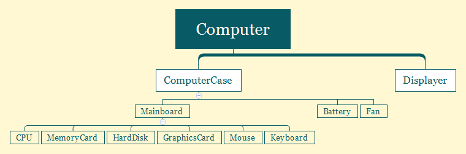
我们将这种层次关系转换成对象的组合关系如下：
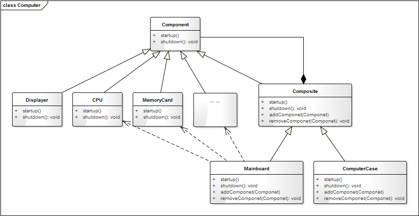
组合模式的模型抽象
类图
根据上面组装电脑的示例，将组合模式抽象成一般化的类图关系如下：
这里 Composite 就是组合对象，组合对象可以添加或删除组件，它本身也是一个组件，因此组合对象可以像一般对象一样被使用，因为它也实现了 Component的feature() 方法。
模型说明
组合模式是一个非常常用的模式，你可能在有意或无意间就已经用上了，比如公司（各个部门或各个子公司）的组织架构，学校各个学院-班级的关系。
如在图形绘制系统中，图元（GraphicUnit）可以有多种不同的类型：Text、Line、Rect、Ellipse 等，还可以是矢量图（vectorgraph）。而矢量图本身又是由一个或多个 Text、Line、Rect、Ellipse 组成。但所有的图元都有一个共同的方法，那就是 draw()。这里就得用组合模式。
组合模式的优点
- 调用简单，组合对象可以像一般对象一样使用。
- 组合对象可以自由地增加、删除组件，可灵活地组合不同的对象。
组合模式的缺点
在一些层次结构太深的场景中，组合结构会变得太庞杂。
应用场景
- 对象之间具有明显的“部分-整体”的关系时，或者具有层次关系时。
- 组合对象与单个对象具有相同或类似行为（方法），用户希望统一地使用组合结构中的所有对象。
12 构建模式：想要车还是庄园
13 克隆模式：给你一个分身术
【故事剧情】
Tony 最近在看一部电视剧《闪电侠》，里面一个人物叫 Danton Black 的超级人类，拥有复制自身的超能力，能够变身出六个自己，男主角第一次与他交锋时还晕了过去。
Tony 也想要有这种超能力，这样就可以同时处理多件事啦：可以一边敲代码、一边看书、还能一边约妹，哈哈！
当然这是不可能的，虽然现在的克隆技术已经能够克隆羊、克隆狗、克隆猫，但还不能克隆人！就算可以，也不能使克隆出来的自己立刻就变成二十几岁的你，当他长到二十几岁时你已经四十几岁了，他还能理解你的想法吗？

用程序来模拟生活
人的克隆是困难的，但程序的克隆是简单的，因为它天生就具有方便复制的特点。在程序设计中，也有一种思想是来源于克隆这一概念，它就是克隆模式。在谈这一模式之前，我们先用程序来模拟一下 Tony 这一 YY 的想法。
源码示例：
from copy import copy, deepcopy
class Person:
"人"
def __init__(self, name, age):
self.__name = name
self.__age = age
def showMyself(self):
print("我是" + self.__name + ",年龄" + str(self.__age) + ".")
def coding(self):
print("我是码农，我在Coding改变世界...")
def reading(self):
print("阅读使我快乐！知识使我成长！如饥似渴地阅读是生活的一部分...")
def fallInLove(self):
print("春风吹，月亮明，花前月下好相约...")
def clone(self):
return copy(self)
测试代码：
def testProtoType():
tony = Person("Tony", 26)
tony.showMyself()
tony.coding()
tony1 = tony.clone()
tony1.showMyself()
tony1.reading()
tony2 = tony.clone()
tony2.showMyself()
tony2.fallInLove()
输出结果：
我是Tony,年龄:26
我是码农，我在Coding改变世界...
我是Tony,年龄:26
阅读使我快乐！知识使我成长！如饥似渴地阅读是生活的一部分...
我是Tony,年龄:26
春风吹，月亮明，花前月下好相约...
在上面的例子中，Tony 克隆出了两个自己 tony1 和 tony2，因为是克隆出来的，所有姓名和年龄都一样，这样 Tony 就可以同时去敲代码、读书和约会了。
从剧情中思考克隆模式
像上面的 Demo 一样，通过拷贝自身的属性来创建一个新对象的过程叫做克隆模式。在很多书籍和资料中被称为原型模式，但我觉得克隆一词更能切中其主旨。
克隆模式的核心就是一个 Clone 方法，Clone 方法的功能就是拷贝父本的所有属性，主要包括两个过程：
- 分配一块新的内存空间给新的对象；
- 拷贝父本对象的所有属性。
浅拷贝与深拷贝
要讲清楚这个概念，先来看一个例子，还是基于上面的 Demo，我们稍做一些修改。
class Person:
"人"
def __init__(self, name, age):
self.__name = name
self.__age = age
self.__petList = []
def showMyself(self):
print("我是" + self.__name + ",年龄" + str(self.__age) + ". 我养了这些宠物：")
for pet in self.__petList:
print(pet + "\t", end="")
print()
def addPet(self, pet):
self.__petList.append(pet)
def clone(self):
return copy(self)
def deepClone(self):
return deepcopy(self)
测试代码：
def testProtoType2():
tony = Person("Tony", 26)
tony.addPet("小狗Coco")
print("父本tony：", end="")
tony.showMyself()
tony1 = tony.deepClone()
tony1.addPet("小猫Amy")
print("副本tony1：", end="")
tony1.showMyself()
print("父本tony：", end="")
tony.showMyself()
tony2 = tony.clone()
tony2.addPet("小兔Ricky")
print("副本tony2：", end="")
tony2.showMyself()
print("父本tony：", end="")
tony.showMyself()
输出结果：
父本tony：我是Tony,年龄26. 我养了这些宠物：
小狗Coco
副本tony1：我是Tony,年龄26. 我养了这些宠物：
小狗Coco 小猫Amy
父本tony：我是Tony,年龄26. 我养了这些宠物：
小狗Coco
副本tony2：我是Tony,年龄26. 我养了这些宠物：
小狗Coco 小兔Ricky
父本tony：我是Tony,年龄26. 我养了这些宠物：
小狗Coco 小兔Ricky
在上面这个例子中，我们看到“副本 tony1”是通过深拷贝的方式创建的，我们对 tony1 对象增加宠物，不会影响 tony 对象。而副本 tony2 是通过浅拷贝的方式创建的，我们对 tony2 对象增加宠物时，tony 对象也更着改变。这是因为 Person 类__petList成员是一个可变的引用类型，浅拷贝只拷贝引用类型对象的指针（指向），而不拷贝引用类型对象指向的值；深拷贝到同时拷贝引用类型对象及其指向的值。
引用类型：对象本身可以修改，Python 中的引用类型有列表（List）、字典（Dictionary）、类对象。Python 在赋值的时候默认是浅拷贝，如
def testList():
list = [1, 2, 3];
list1 = list;
print("list's id:", id(list))
print("list1's id:", id(list1))
print("修改之前：")
print("list:", list)
print("list1:", list1)
list1.append(4);
print("修改之后：")
print("list:", list)
print("list1:", list1)
结果：
list's id: 56424568
list1's id: 56424568
修改之前：
list: [1, 2, 3]
list1: [1, 2, 3]
修改之后：
list: [1, 2, 3, 4]
list1: [1, 2, 3, 4]
通过 Clone 的方式创建对象时，浅拷贝往往是很危险的，因为一个对象的改变另一个对象也同时改变。深拷贝会对一个对象的发生进行完全拷贝，这样两个对象之间就不会相互影响了，你改你的，我改我的。
在使用克隆模式时，除非一些特殊情况（如需求本身就要求两个对象一起改变），尽量使用深拷贝的方式（称其为安全模式）。
克隆模式的模型抽象
代码框架
克隆模式非常简单，我们可以对它进行进一步的重构和优化，抽象出克隆模式的框架模型。
from copy import copy, deepcopy
class Clone:
"克隆的基类"
def clone(self):
"浅拷贝的方式克隆对象"
return copy(self)
def deepClone(self):
"深拷贝的方式克隆对象"
return deepcopy(self)
类图
上面的代码框架可用类图表示如下：

基于框架的实现
有了上面的代码框架之后，我们要实现示例代码的功能就会更简单了。最开始的示例代码我们假设它为 version 1.0，那么再看看基于框架的 version 2.0 吧。
class Person(Clone):
"人"
def __init__(self, name, age):
self.__name = name
self.__age = age
self.__petList = []
def showMyself(self):
print("我是" + self.__name + ",年龄" + str(self.__age) + ". 我养了这些宠物：")
for pet in self.__petList:
print(pet + "\t", end="")
print()
def addPet(self, pet):
self.__petList.append(pet)
def coding(self):
print("我是码农，我在Coding改变世界...")
def reading(self):
print("阅读使我快乐！知识使我成长！如饥似渴地阅读是生活的一部分...")
def fallInLove(self):
print("春风吹，月亮明，花前月下好相约...")
测试代码不用变（同 testProtoType2()），自己跑一下，会发现输出结果和之前的是一样的。
模型说明
克隆模式也叫原型模式，应用场景非常之广泛。Java 中与基类 Object 融为一体，可以随手就拿来用，只要 implements Cloneabble 接口就默认拥有了克隆的功能。而在 Python 中，克隆模式更是成为了语言本身的部分，因为 Python 中对象的赋值就是一个浅拷贝的过程。
克隆模式的优点
- 克隆模式是通过内存拷贝的方式进行复制，比 new 的方式创建对象性能更好；
- 通过深拷贝的方式，可以方便地创建一个具有相同属性和行为的另一个对象，特别是对于复杂对象，方便性尤为体现。
克隆模式的缺点
通过克隆的方式创建对象，不会执行类的构造函数，这不一定是缺点，但大家使用的时候需要注意这一点。
应用场景
- 如果创建新对象（如复杂对象）成本较大，我们可以利用已有的对象进行复制来获得。
- 当类的初始化需要消耗非常多的资源时，如需要消耗很多的数据、硬件等资源。
14 策略模式：怎么来不重要，人到就行
【故事剧情】
Tony 在北京漂泊了三年，在这期间有很多的美好，也有很多心酸，有很多期待，也有很多失落；可终究还是要离开了，原因很简单：一来北京压力太大，生活成本太高；二来北京离家太远。离开北京，Tony 也没有回家，而是选择了新的城市——杭州。
Tony 并不是班里最早逃离北京的人，但却是毕业后仍然坚持做技术且由一线城市退居到二线城市最早的人（不是回老家或都转行）。Tony 还有十几个同学在北京，一说要离开北京，肯定是要和这些同学道别的。Tony 的学姐 Leaf（也是学校时的辅导员）为他精心组织和安排了一次聚餐，地点选在了健德门附近的一家江西餐饮——西江美食舫，大家约好晚上 19：00 不见不散……
时间和地点都定了，把能来的这些人建了一个群，大家便开始热闹地聊起来了：
Joe：我离那比较近，骑共享单车 15 分钟就到了，我可以先去点餐。
Helen：我坐地铁到那半小时，也没问题。
Henry：我有直达的快速公交到那 40 分钟，不过下班高峰期可能会堵车，时间不好说。
Ruby：我公司还有点事，可能会晚半个小时，到时我打车过去……
Leaf：怎么来不重要，人到就行！
Tony：大家有心，万分感谢，安全最重要！
用程序来模拟生活
随着社会的发展、时代的进步，出行交通的方式可谓是越来越多样，可以说是丰富到了千奇百怪的地步了。除了上面提到的共享单车、公交车、地铁、快车（或出租车），也可以是自驾、电动车、平衡车，甚至都可以踏个轮滑、踩个滑板过来！采用什么交通方式并不重要，重要的是你能准时来共聚晚餐，不然就只能吃残羹冷炙了，哈哈！下面用代码来模拟一下大家使用不同的出行方式参加聚餐的情景吧。
源码示例：
class IVehicle:
"交通工具的抽象类"
def running(self):
pass
class SharedBicycle(IVehicle):
"共享单车"
def running(self):
print("骑共享单车(轻快便捷)", end='')
class ExpressBus(IVehicle):
"快速公交"
def running(self):
print("坐快速公交(经济绿色)", end='')
class Express(IVehicle):
"快车"
def running(self):
print("打快车(快速方便)", end='')
class Subway(IVehicle):
"地铁"
def running(self):
print("坐地铁(高效安全)", end='')
class Classmate:
"参加聚餐的同学"
def __init__(self, name, vechicle):
self.__name = name
self.__vechicle = vechicle
def attendTheDinner(self):
print(self.__name + " ", end='')
self.__vechicle.running()
print(" 来参加聚餐！")
测试代码：
def testTheDinner():
sharedBicycle = SharedBicycle()
joe = Classmate("Joe", sharedBicycle)
joe.attendTheDinner()
helen = Classmate("Helen", Subway())
helen.attendTheDinner()
henry = Classmate("Henry", ExpressBus())
henry.attendTheDinner()
ruby = Classmate("Ruby", Express())
ruby.attendTheDinner()
输出结果：
Joe 骑共享单车(轻快便捷) 来参加聚餐！
Helen 坐地铁(高效安全) 来参加聚餐！
Henry 坐快速公交(经济绿色) 来参加聚餐！
Ruby 打快车(快速方便) 来参加聚餐！
上面示例的类图如下：
从剧情中思考策略模式
上面的示例中我们可以选择不同的出行方式去参加聚餐，可以骑共享单车，也可以坐公共汽车，亦或是踩一辆平衡车；选用什么交通工具不重要，重要的是能够实现我们的目标——准时到达聚餐的地点，我们可以根据自己的实际情况进行选择和更换不同的出行方式。这里，选择不同的交通工具，就相当于选择了不同的出行策略；在程序中也有这样一种类似的模式——策略模式。
策略模式
策略模式的定义：
Define a family of algorithms, encapsulate each one, and make them interchangeable. Strategy lets the algorithm vary independently from the clients that use it.
定义一系列算法，将每个算法都封装起来，并且使他们之间可以相互替换。策略模式使算法可以独立于使用它的用户而变化。
策略模式是对算法、规则的一种封装。如上面的示例中，可以将不同的出行方式（采用的交通工具）理解成一种出行算法，将这些算法抽象出一个基类 IVehicle，并定义一系列的算法，共享单车（SharedBicycle）、快速公交（ExpressBus）、地铁（Subway）、快车（Express）。我们可以选择任意一种（实际场景肯定会选择最合适的）出行方式，并且可以方便更换出行方式。如 henry 要把出行方式由快速公交改成快车，只需要调用出改一行代码即可。
# henry = Classmate("Henry", ExpressBus())
henry = Classmate("Henry", Express())
henry.attendTheDinner()
策略模式的模型抽象
类图
策略模式的类图表示如下：
Context 是一个上下文环境类，负责提供对外的接口，与用户的交互，屏蔽上层对策略（算法）的直接访问，如示例中的 Classmate。Strategy 是策略（算法）的抽象类，定义统一的接口，如示例中的 IVehicle。StrategyA 和 StrategyB 是具体策略的实现类，如示例中 SharedBicycle、ExpressBus 等。
**注意：**algorithm() 方法并不是说只用来定义算法，也可以是一种规则、一个运作或一种行为（如方面示例中的 running 指的是交通工具的运行方式）。一个 Strategy 也可以有多个方法（如一种算法是多个步骤组成的）。
模型说明
设计要点
策略模式中主要三个角色，在设计策略模式时要找到并区分这些角色：
- 上下文环境（Context）： 起着承上启下的封装作用，屏蔽上层应用对策略（算法）的直接访问，封装可能存在的变化。
- 策略的抽象（Strategy）： 策略（算法）的抽象类，定义统一的接口，规定每一个子类必须实现的方法。
- 具备的策略： 策略的具体实现者，可以有多个不同的（算法或规则）实现。
优缺点
策略模式的优点：
- 算法（规则）可自由地切换。
- 避免使用多重条件判断。
- 方便拓展和增加新的算法（规则）。
策略模式的缺点：所有策略类都需要对外暴露。
实战应用
假设有这样一个应用场景：
有一 Person 类，有年龄（age）、体重（weight）、身高（height）三个属性。现要对 Person 的一组对象进行排序，但并没有确定根据什么规则来排序，有时需要根据年龄进行排序，有时需要根据身高进行排序，有时可能是根据身高和体重的综合情况来排序，还有可能……
通过对这个应用场景进行分析，会发现，这里需要有多种排序算法，而且需要动态地在这几种算法中进行选择，相信你很容易就会想到策略模式。没错，想到这就对了！那我们来看一下具体的代码。
源码示例：
class Person:
"人类"
def __init__(self, name, age, weight, height):
self.name = name
self.age = age
self.weight = weight
self.height = height
def showMysef(self):
print(self.name + " " + str(self.age) + " years old, " + str(self.weight) + "kg, " + str(self.height) + "m.")
class ICompare:
"比较算法"
def comparable(self, person1, person2):
"person1 > person2 返回值>0，person1 == person2 返回0， person1 < person2 返回值小于0"
pass
class CompareByAge(ICompare):
"通过年龄排序"
def comparable(self, person1, person2):
return person1.age - person2.age
class CompareByHeight(ICompare):
"通过身高进行排序"
def comparable(self, person1, person2):
return person1.height - person2.height
class SortPerson:
"Person的排序类"
def __init__(self, compare):
self.__compare = compare
def sort(self, personList):
"排序算法，这里采用最简单的冒泡排序"
n = len(personList)
for i in range(0, n-1):
for j in range(0, n-i-1):
if(self.__compare.comparable(personList[j], personList[j+1]) > 0):
tmp = personList[j]
personList[j] = personList[j+1]
personList[j+1] = tmp
j += 1
i += 1
测试代码：
def testSortPerson():
personList = [
Person("Tony", 2, 54.5, 0.82),
Person("Jack", 31, 74.5, 1.80),
Person("Nick", 54, 44.5, 1.59),
Person("Eric", 23, 62.0, 1.78),
Person("Helen", 16, 45.7, 1.60)
]
sorter0 = SortPerson(CompareByAge())
sorter0.sort(personList)
print("根据年龄进行排序后的结果：")
for person in personList:
person.showMysef()
print()
sorter1 = SortPerson(CompareByHeight())
sorter1.sort(personList)
print("根据身高进行排序后的结果：")
for person in personList:
person.showMysef()
输出结果：
根据年龄进行排序后的结果：
Tony 2 years old, 54.5kg, 0.82m.
Helen 16 years old, 45.7kg, 1.6m.
Eric 23 years old, 62.0kg, 1.78m.
Jack 31 years old, 74.5kg, 1.8m.
Nick 54 years old, 44.5kg, 1.59m.
根据身高进行排序后的结果：
Tony 2 years old, 54.5kg, 0.82m.
Nick 54 years old, 44.5kg, 1.59m.
Helen 16 years old, 45.7kg, 1.6m.
Eric 23 years old, 62.0kg, 1.78m.
Jack 31 years old, 74.5kg, 1.8m.
上面的代码可用类图表示如下：
看到这，熟悉 Python 的读者肯定要吐槽了！Python 是一个简洁明了的语言，使用十几行代码就能解决的问题（如下面的实现代码），为什么要写上面这一大堆的东西。
from operator import itemgetter,attrgetter
def testPersonListInPython():
"用Python的方式对Person进行排序"
personList = [
Person("Tony", 2, 54.5, 0.82),
Person("Jack", 31, 74.5, 1.80),
Person("Nick", 54, 44.5, 1.59),
Person("Eric", 23, 62.0, 1.78),
Person("Helen", 16, 45.7, 1.60)
]
# 使用使用operator模块根据年龄进行排序
print("根据年龄进行排序后的结果：")
sortedPerons = sorted(personList, key = attrgetter('age'))
for person in sortedPerons:
person.showMysef()
print()
print("根据身高进行排序后的结果：")
sortedPerons1 = sorted(personList, key=attrgetter('height'))
for person in sortedPerons1:
person.showMysef()
输出的结果和上面是一模一样的，这里不再赘述。
能提出这个问题，说明你一定是带着思考在阅读！之所以还要这么写，出于以下几个原因：
- 设计模式是一种编译思想，它和语言没有强关联，应当适用于所有面向对象的语言。Python 因为语言本身的灵活性和良好的封装性，使得其自带了很多的功能。而其他语言并没有这样的功能，为了让熟悉其他语言的人也能看懂，所以使用了最接近面向对象思维的方式进行实现（即使你熟悉 Python 也可通过它来学习一种新的思维方式）。
- 通过这种最本质的实现方式，有助于你更好地理解各种语言的 Sort 函数的原理。熟悉 Java 的同学，再看看 java.lang.Comparable 接口和 java.util.Arrays 中的 Sort 方法（public static void sort(Object[] a)），一定会有更深刻的理解，因为 Comparable 接口使用的就是策略模式，只不过该接口的实现者就是实体类本身（如上面例子中的 Person 就是实体类）。
- 使用 Python 语言本身的特性，还是难以实现一些特殊的需求，如要根据身高和体重的综合情况来排序（身高和体重的权重分别是 0.6 和 0.4）。用策略模式就可以很方便地实现，只需要增加一个 CompareByHeightAndWeight 的策略类就可以，如下面代码：
class CompareByHeightAndWeight(ICompare):
"根据身高和体重的综合情况来排序(身高和体重的权重分别是0.6和0.4)"
def comparable(self, person1, person2):
value1 = person1.height * 0.6 + person1.weight * 0.4
value2 = person2.height * 0.6 + person2.weight * 0.4
return value1 - value2
应用场景
- 如果一个系统里面有许多类，它们之间的区别仅在于有不同的行为，那么可以使用策略模式动态地让一个对象在许多行为中选择一种。
- 一个系统需要动态地在几种算法中选择一种。
- 设计程序接口时希望部分的内部实现由调用方自己实现。
15 命令模式：大闸蟹，走起！
【故事剧情】
David：听说阿里开了一家实体店——盒马鲜生，特别火爆！明天就周末了，我们一起去吃大闸蟹吧！ Tony：吃货！真是味觉的哥伦布啊，哪里的餐饮新店都少不了你的影子。不过听说盒马鲜生到处是黑科技诶，而且海生是自己挑的，还满新奇的。
David：那就说好了，明天 11：00，盒马鲜生，不吃不散！
Tony 和 David 来到杭州上城区的一家分店。这里食客众多，物品丰富，特别是生鲜，从几十块钱的小龙虾到几百块的大青蟹，再到一千多的俄罗斯帝王蟹，应有尽有。帝王蟹是吃不起了，Tony 和 David 挑了一只 900g 的一号大青蟹。
食材挑好了，接下来就是现厂加工。加工的方式有多种，清蒸、姜葱炒、香辣炒、避风塘炒等，可以任意选择，当然不同的方式价格也有所不同。因为我们选的蟹是当时活动推荐的，所以免加工费。选择一种加工方式后进行下单，下单后会给你一个呼叫器，厨师做好了会有专门的服务人员送过来，坐着等就可以了……
用程序来模拟生活
盒马鲜生之所以这么火爆，一方面是因为中国从来就不缺像 David 这样的吃货，另一方面是因为里面的海生很新鲜，而且可以自己挑选。很多人都喜欢吃大闸蟹，但是你有没有注意到一个问题？从你买大闸蟹到吃上大闸蟹的整个过程，可能都没有见过厨师，而你却能享受美味的佳肴。这里有一个很重要的角色就是服务员，她帮你下订单，然后把订单传送给厨师，厨师收到订单后根据订单做餐。我们用代码来模拟一下这个过程。
源码示例：
from abc import ABCMeta, abstractmethod
# 引入ABCMeta和abstractmethod来定义抽象类和抽象方法
class Chef():
"厨师"
def steamFood(self, originalMaterial):
print(originalMaterial + "清蒸中...")
return "清蒸" + originalMaterial
def stirFriedFood(self, originalMaterial):
print(originalMaterial + "爆炒中...")
return "香辣炒" + originalMaterial
class Order(metaclass=ABCMeta):
"订单"
def __init__(self, name, originalMaterial):
self._chef = Chef()
self._name = name
self._originalMaterial = originalMaterial
def getDisplayName(self):
return self._name + self._originalMaterial
@abstractmethod
def processingOrder(self):
pass
class SteamedOrder(Order):
"清蒸"
def __init__(self, originalMaterial):
super().__init__("清蒸", originalMaterial)
def processingOrder(self):
if(self._chef is not None):
return self._chef.steamFood(self._originalMaterial)
return ""
class SpicyOrder(Order):
"香辣炒"
def __init__(self, originalMaterial):
super().__init__("香辣炒", originalMaterial)
def processingOrder(self):
if (self._chef is not None):
return self._chef.stirFriedFood(self._originalMaterial)
return ""
class Waiter:
"服务员"
def __init__(self, name):
self.__name = name
self.__order = None
def receiveOrder(self, order):
self.__order = order
print("服务员" + self.__name + "：您的 " + order.getDisplayName() + " 订单已经收到,请耐心等待")
def placeOrder(self):
food = self.__order.processingOrder()
print("服务员" + self.__name + "：您的餐 " + food + " 已经准备好，请您慢用!")
测试代码：
def testOrder():
waiter = Waiter("Anna")
steamedOrder = SteamedOrder("大闸蟹")
print("客户David：我要一份" + steamedOrder.getDisplayName())
waiter.receiveOrder(steamedOrder)
waiter.placeOrder()
print()
spicyOrder = SpicyOrder("大闸蟹")
print("客户Tony：我要一份" + steamedOrder.getDisplayName())
waiter.receiveOrder(spicyOrder)
waiter.placeOrder()
输出结果：
客户David：我要一份清蒸大闸蟹
服务员Anna：您的 清蒸大闸蟹 订单已经收到，请耐心等待
大闸蟹清蒸中...
服务员Anna：您的餐 清蒸大闸蟹 已经准备好，请您慢用!
客户Tony：我要一份清蒸大闸蟹
服务员Anna：您的 香辣炒大闸蟹 订单已经收到，请耐心等待
大闸蟹爆炒中...
服务员Anna：您的餐 香辣炒大闸蟹 已经准备好，请您慢用!
从剧情中思考命令模式
在上面的示例中，我们只要发一个订单就能吃到想要的加工方式的美味佳肴，而不用知道厨师是谁，更不用关心他是怎么做出来的。像点餐的订单一样，发送者（客户）与接收者（厨师）没有任何的依赖关系，我们只要发送订单就能完成想要的任务，这在程序中命令模式。
在上面的示例中，我们可以用类图描述如下：

命令模式
Encapsulate a request as an object, thereby letting you parametrize clients with different requests, queue or log requests, and support undoable operations.
将一个请求封装成一个对象，从而让你使用不同的请求把客户端参数化，对请求排队或者记录请求日志，可以提供命令的撤销和恢复功能。
命令模式的最大特点是将具体的命令与对应的接收者相关联（捆绑），使得调用方不用关系具体的行动执行者及如何执行，只要发送正确的命令，就能准确无误地完成相应的任务。 就像军队，将军一声令下，士兵就得分秒无差，准确执行。
命令模式是一种高内聚的模式，之所以说是高内聚是因为他把它命令封装成对象，并与接收者关联在一起，从而使（命令的）请求者（Invoker）接收者（Receiver）分离。
命令模式的模型抽象
代码框架
上面的示例代码还是相对比较粗糙，我们可以对它进行进一步的重构和优化，抽象出命令模式的框架模型。
class Command(metaclass=ABCMeta):
"命令的抽象类"
@abstractmethod
def execute(self):
pass
class CommandImpl(Command):
"命令的具体实现类"
def __init__(self, receiver):
self.__receiver = receiver
def execute(self):
self.__receiver.doSomething()
class Receiver:
"命令的接收者"
def doSomething(self):
print("do something...")
class Invoker:
"调度者"
def __init__(self):
self.__command = None
def setCommand(self, command):
self.__command = command
def action(self):
if self.__command is not None:
self.__command.execute()
def client():
invoker = Invoker()
command = CommandImpl(Receiver())
invoker.setCommand(command)
invoker.action()
类图
命令模式可用类图表示如下：
上面的类图中 Command 是核心类，表示一项任务一个动作，如示例中的订单，是所有命令的抽象类，定义了统一的执行方法 execute。具体的命令实现类 CommandA 和 CommandB 包装了命令的接收者（分别是 ReceiveA 和 ReceiveB），在执行 execute 方法时会调用接收者的实现（如 doSomething 和 function）。Receiver 是命令的接收者，也是任务的具体的执行者，如示例中的厨师。Invoker 负责命令的调用，如示例中的服务员。Client 的真正的用户，如示例中的顾客。
模型说明
（1）设计要点
命令模式中主要有四个角色，在设计命令模式时要找到并区分这些角色，具体如下。
- 命令（Command）： 要完成的任务，或要执行的动作，这是命令模式的核心角色。
- 接收者（Receiver）： 任务的具体实施方，或行动的真实执行者。
- 调度者（Invoker）： 接受任务并发送命令，对接用户的需求并执行内部的命令，负责外部用户与内部命令的交互。
- 用户（Client）： 命令的使用者，即真正的用户。
（2）优缺点
策略模式的优点：
- 对命令的发送者与接收者进行解耦，使得调用方不用关系具体的行动执行者及如何执行，只要发送正确的命令即可。
- 可以很方便地增加新的命令。
策略模式的缺点：
- 在一些系统中可能会有很多的命令，而每一个命令都需要一个具体的类去封装，容易使命令的类急剧膨胀。
实战应用
在游戏中，有两个最基本的动作，一个是行走（也叫移动），一个是攻击。这几乎是所有游戏都少不了的基础功能，不然就没法玩了！
现在我们来模拟一下游戏角色（英雄）中的移动和攻击，为简单起见，假设移动只有上移（U）、下移（D）、左移（L）、右移（R）、上跳（J）、下蹲（S）这 6 个动作，而攻击（A）只有 1 种，括号中字符代表每一个动作在键盘中的按键，也就是对应动作的调用，这些动作的命令可以单独使用，但更多的时候会组合在一起使用。比如，弹跳就是上跳 + 下蹲两个的动作的组合，我们用 JP 表示；而弹跳攻击是弹跳 + 攻击的组合（也就是上跳 + 攻击 + 下蹲），我们用 JA 表示；而移动也可以两个方向一起移动，如上移 + 右移，我们用 RU 表示。下面的程序中，为简单起见，这里用标准输入的字符来代表按键输入事件。
GameCommand.py
#!/usr/bin/python
# -*- coding: UTF-8 -*-
# Authoer: Spencer.Luo
# Date: 5/18/2018
from abc import ABCMeta, abstractmethod
import time
class GameRole:
# 每次移动的步距
STEP = 5
def __init__(self):
self.__x = 0
self.__y = 0
self.__z = 0
def leftMove(self):
self.__x -= self.STEP
def rightMove(self):
self.__x += self.STEP
def upMove(self):
self.__y += self.STEP
def downMove(self):
self.__y -= self.STEP
def jumpMove(self):
self.__z += self.STEP
def squatMove(self):
self.__z -= self.STEP
def attack(self):
print("攻击...")
def showPosition(self):
print("x:" + str(self.__x) + ", y:" + str(self.__y) + ", z:" + str(self.__z))
class GameCommand(metaclass=ABCMeta):
"游戏角色的命令类"
def __init__(self, role):
self._role = role
def setRole(self, role):
self._role = role
@abstractmethod
def execute(self):
pass
class Left(GameCommand):
"左移命令"
def execute(self):
self._role.leftMove()
self._role.showPosition()
class Right(GameCommand):
"右移命令"
def execute(self):
self._role.rightMove()
self._role.showPosition()
class Up(GameCommand):
"上移命令"
def execute(self):
self._role.upMove()
self._role.showPosition()
class Down(GameCommand):
"下移命令"
def execute(self):
self._role.downMove()
self._role.showPosition()
class Jump(GameCommand):
"弹跳命令"
def execute(self):
self._role.jumpMove()
self._role.showPosition()
# 跳起后空中停留半秒
time.sleep(0.5)
class Squat(GameCommand):
"下蹲命令"
def execute(self):
self._role.squatMove()
self._role.showPosition()
# 下蹲后伏地半秒
time.sleep(0.5)
class Attack(GameCommand):
"攻击命令"
def execute(self):
self._role.attack()
class MacroCommand(GameCommand):
def __init__(self, role = None):
super().__init__(role)
self.__commands = []
def addCommand(self, command):
# 让所有的命令作用于同一个对象
# command.setRole(self._role)
self.__commands.append(command)
def removeCommand(self, command):
self.__commands.remove(command)
def execute(self):
for command in self.__commands:
command.execute()
class GameInvoker:
def __init__(self):
self.__command = None
def setCommand(self, command):
self.__command = command
return self
def action(self):
if self.__command is not None:
self.__command.execute()
def testGame():
role = GameRole()
invoker = GameInvoker()
while True:
strCmd = input("请输入命令：");
strCmd = strCmd.upper()
if (strCmd == "L"):
invoker.setCommand(Left(role)).action()
elif (strCmd == "R"):
invoker.setCommand(Right(role)).action()
elif (strCmd == "U"):
invoker.setCommand(Up(role)).action()
elif (strCmd == "D"):
invoker.setCommand(Down(role)).action()
elif (strCmd == "JP"):
cmd = MacroCommand()
cmd.addCommand(Jump(role))
cmd.addCommand(Squat(role))
invoker.setCommand(cmd).action()
elif (strCmd == "A"):
invoker.setCommand(Attack(role)).action()
elif (strCmd == "LU"):
cmd = MacroCommand()
cmd.addCommand(Left(role))
cmd.addCommand(Up(role))
invoker.setCommand(cmd).action()
elif (strCmd == "LD"):
cmd = MacroCommand()
cmd.addCommand(Left(role))
cmd.addCommand(Down(role))
invoker.setCommand(cmd).action()
elif (strCmd == "RU"):
cmd = MacroCommand()
cmd.addCommand(Right(role))
cmd.addCommand(Up(role))
invoker.setCommand(cmd).action()
elif (strCmd == "RD"):
cmd = MacroCommand()
cmd.addCommand(Right(role))
cmd.addCommand(Down(role))
invoker.setCommand(cmd).action()
elif (strCmd == "LA"):
cmd = MacroCommand()
cmd.addCommand(Left(role))
cmd.addCommand(Attack(role))
invoker.setCommand(cmd).action()
elif (strCmd == "RA"):
cmd = MacroCommand()
cmd.addCommand(Right(role))
cmd.addCommand(Attack(role))
invoker.setCommand(cmd).action()
elif (strCmd == "UA"):
cmd = MacroCommand()
cmd.addCommand(Up(role))
cmd.addCommand(Attack(role))
invoker.setCommand(cmd).action()
elif (strCmd == "DA"):
cmd = MacroCommand()
cmd.addCommand(Down(role))
cmd.addCommand(Attack(role))
invoker.setCommand(cmd).action()
elif (strCmd == "JA"):
cmd = MacroCommand()
cmd.addCommand(Jump(role))
cmd.addCommand(Attack(role))
cmd.addCommand(Squat(role))
invoker.setCommand(cmd).action()
elif (strCmd == "Q"):
exit()
testGame()
测试结果：
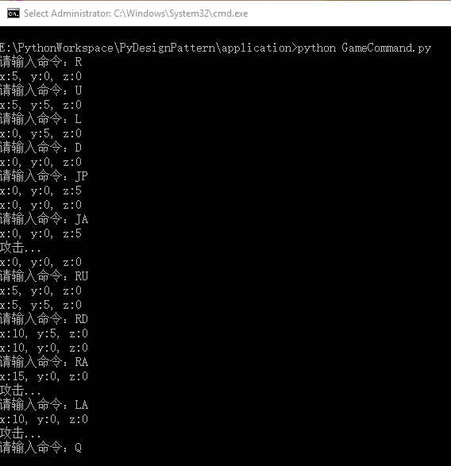
在上面的 Demo 中 MacroCommand 是一种组合命令，也叫宏命令（Macro Command）。宏命令是一个具体命令类，它拥有一个集合属性，在该集合中包含了对其他命令对象的引用，如上面的弹跳命令是上跳、攻击、下蹲 3 个命令的组合，引用了 3 个命令对象。
当调用宏命令的 execute() 方法时，会循环地调用每一个子命令的 execute() 方法。一个宏命令的成员可以是简单命令，还可以继续是宏命令，宏命令将递归地调用它所包含的每个成员命令的 execute() 方法。
应用场景
- 希望系统发送一个命令（或信号），任务就能得到处理时，如 GUI 中的各种按钮的单击命令；再如自定义一套消息的响应机制。
- 需要将请求调用者和请求接收者解耦，使得调用者和接收者不直接交互时。
- 需要请一系列的命令组合成一组操作时，可以使用宏命令的方式。
16 备忘模式：好记性不如烂笔头
【故事剧情】
经过两三年的工作，Tony 学到的东西越来越多，业务也越来越熟，终于到了他该带领一个小组进行独立开发的时候了。作为小组负责人后的 Tony，工作自然就多了：要负责技术的选型、核心代码的开发，还要深度参与需求的讨论和评审；期间还会被各种会议、面试打扰。
工作压力变大之后，Tony 就经常忙的忘了这事、忘了那事！为了解决这个问题，不至于落下重要的工作，Tony 想了一个办法：每天 9 点到公司，花 10 分钟想一下今天有哪些工作项，有哪些线上问题必须要解决的，有哪些任务需要完成的，然后把这些列一个今日待工作项（To Do List），最后就是看一下新闻，刷一下朋友圈，等到 9:30 大家来齐后开始每日的晨会，接下来就是一整天的忙碌……
因此在每天工作开始（头脑最清醒的一段时间）之前，把今天需要完成的主要事项记录下来，列一个 To Do List，是非常有必要的。这样，当你忘记了要做什么事情时，只要看一下 To Do List 就能想起所有今天要完成的工作项，就不会因忘记某项工作而影响项目的进度，好记性不如烂笔头嘛！

用程序来模拟生活
Tony 为了能够随时回想起要做的工作项，把工作项都列到 To Do List 中做为备忘，这样就可以在因为忙碌而忘记时，通过查看 To Do List 来找回记忆。下面我们用程序来模拟一下这个示例。
源码示例：
class Engineer:
"工程师"
def __init__(self, name):
self.__name = name
self.__workItems = []
def addWorkItem(self, item):
self.__workItems.append(item)
def forget(self):
self.__workItems.clear()
print(self.__name + "工作太忙了，都忘记要做什么了！")
def writeTodoList(self):
todoList = TodoList()
for item in self.__workItems:
todoList.writeWorkItem(item)
return todoList
def retrospect(self, todoList):
self.__workItems = todoList.getWorkItems()
print(self.__name + "想起要做什么了！")
def showWorkItem(self):
if(len(self.__workItems)):
print(self.__name + "的工作项：")
for idx in range(0, len(self.__workItems)):
print(str(idx + 1) + ". " + self.__workItems[idx] + ";")
else:
print(self.__name + "暂无工作项！")
class TodoList:
"工作项"
def __init__(self):
self.__workItems = []
def writeWorkItem(self, item):
self.__workItems.append(item)
def getWorkItems(self):
return self.__workItems
class TodoListCaretaker:
"TodoList管理类"
def __init__(self):
self.__todoList = None
def setTodoList(self, todoList):
self.__todoList = todoList
def getTodoList(self):
return self.__todoList
测试代码：
def testEngineer():
tony = Engineer("Tony")
tony.addWorkItem("解决线上部分用户因昵称太长而无法显示全的问题")
tony.addWorkItem("完成PDF的解析")
tony.addWorkItem("在阅读器中显示PDF第一页的内容")
tony.showWorkItem()
caretaker = TodoListCaretaker()
caretaker.setTodoList(tony.writeTodoList())
print()
tony.forget()
tony.showWorkItem()
print()
tony.retrospect(caretaker.getTodoList())
tony.showWorkItem()
输出结果：
Tony的工作项：
1. 解决线上部分用户因昵称太长而无法显示全的问题;
2. 完成PDF的解析;
3. 在阅读器中显示PDF第一页的内容;
Tony工作太忙了，都忘记要做什么了！
Tony暂无工作项！
Tony想起要做什么了！
Tony的工作项：
1. 解决线上部分用户因昵称太长而无法显示全的问题;
2. 完成PDF的解析;
3. 在阅读器中显示PDF第一页的内容;
从剧情中思考备忘模式
在上面的示例中，Tony 将自己的工作项写在 TodoList 中作为备忘，这样，在自己忘记工作内容时，可以通过 TodoList 来快速恢复记忆。像 TodoList 一样，将一个对象的状态或内容记录起来，在状态发生改变或出现异常时，可以恢复对象之前的状态或内容，这在程序中叫做备忘录模式，也可简称备忘模式。
备忘录模式
capture the object's internal state without exposing its internal structure, so that the object can be returned to this state later.
在不破坏内部结构的前提下捕获一个对象的内部状态，这样便可在以后将该对象恢复到原先保存的状态。
备忘录模式的最大功能就是做备份，可以保存对象的一个状态作为备份，这样便可让对象在将来的某一时刻恢复到之前保存的状态。如同游戏中“死”了的英雄可以满血复活一样，再比如很多电器（如电视、冰箱）都有恢复出厂设置的功能，人生没有彩排，但程序却可以让你无数次回放！
备忘录模式的模型抽象
类图
备忘录模式的类图表示如下：

这是最原始和简单版本的备忘录模式的类图，在这个类图中，Originator 是要进行备份的对象的发起类，如示例中的 Engineer；Memento 是备份的状态，如示例中的 TodoList；Caretaker 是备份的管理类，如示例中的 TodoListCaretaker。Originator 依赖 Memento，但不直接与 Memento 进行交互，而是与 Memento 的管理类 Caretaker 进行交互。因为对于上层应用来说不用关心具体是怎么备份的以及备份了什么内容，而只需要创建一个备份点，并能从备份点中还原即可。
简单版本的备忘录模式只能备忘一个属性而且只能备忘一次。因此在实际项目中很少看到这个版本，因为大部分实际应用场景都比这复杂。在实际项目中，通常会对原始的备忘录模式进行改造，也就是备忘录模式的升级版本。我们看一下比较通用的一个升级版的类图：

代码框架
因为升级版的备忘录模式比较通用，我们可以抽象出升级版备忘录模式的代码框架模型。
from copy import deepcopy
class Memento:
"备忘录"
def setAttribute(self, dict):
"深度拷贝字典dict中的所有属性"
self.__dict__ = deepcopy(dict)
def getAttribute(self):
"获取属性字典"
return self.__dict__
class Caretaker:
"备忘录管理类"
def __init__(self):
self._mementos = {}
def addMemento(self, name, memento):
self._mementos[name] = memento
def getMemento(self, name):
return self._mementos[name]
class Originator:
"备份发起人"
def createMemento(self):
memento = Memento()
memento.setAttribute(self.__dict__)
return memento
def restoreFromMemento(self, memento):
self.__dict__.update(memento.getAttribute())
模型说明
（1）设计要点
备忘录模式中主要有三个角色，在设计备忘录模式时要找到并区分这些角色：
- 发起人（Originator）： 需要进行备份的对象。
- 备忘录（Memento）： 备份的状态，即一个备份的存档。
- 备忘录管理者（Caretaker）： 备份存档的管理者，由它负责与发起人的交互。
（2）优缺点
备忘录模式的优点：
- 给用户提供了一种可以恢复状态的机制，使得用户能够比较方便地回到某个历史的状态。
- 实现了信息的封装，用户不需要关心状态的保存细节。
备忘录模式的缺点：
- 如果类的成员变量过多，势必会占用比较大的资源，而且每一次保存都会消耗一定的内存，此时可以限制保存的最大次数。
实战应用
相信读者一定用过 DOS 命令行或 Linux 终端的命令，通过向上键或向下键可以快速地向前向后翻阅历史指令，选择其中的指令可以再次执行，这极大地方便了我们对命令的操作，这里就用到了对历史命令备忘的思想。下面我们可以模拟一下 Linux 终端的处理程序。
TerminalMonitor.py
#!/usr/bin/python
# Authoer: Spencer.Luo
# Date: 5/20/2018
# 引入升级版备忘录模式关键类
from pattern.Memento import Originator, Caretaker, Memento
class TerminalCmd(Originator):
"终端命令"
def __init__(self, text):
self.__cmdName = ""
self.__cmdArgs = []
self.parseCmd(text)
def parseCmd(self, text):
"从字符串中解析命令"
subStrs = self.getArgumentsFromString(text, " ")
# 获取第一个字段作为命令名称
if(len(subStrs) > 0):
self.__cmdName = subStrs[0]
# 获取第一个字段之后的所有字符作为命令的参数
if (len(subStrs) > 1):
self.__cmdArgs = subStrs[1:]
def getArgumentsFromString(self, str, splitFlag):
"通过splitFlag进行分割，获得参数数组."
if (splitFlag == ""):
print("splitFlag is empty!")
return ""
data = str.split(splitFlag)
result = []
for item in data:
item.strip()
if (item != ""):
result.append(item)
return result;
def showCmd(self):
print(self.__cmdName, self.__cmdArgs)
class TerminalCaretaker(Caretaker):
"终端的备忘录管理类"
def showHistoryCmds(self):
"显示历史命令"
for key, obj in self._mementos.items():
name = ""
value = []
if(obj._TerminalCmd__cmdName):
name = obj._TerminalCmd__cmdName
if(obj._TerminalCmd__cmdArgs):
value = obj._TerminalCmd__cmdArgs
print("第" + str(key) + "条命令: " + str(name) + " " + str(value))
def testTerminal():
cmdIdx = 0
caretaker = TerminalCaretaker()
curCmd = TerminalCmd("")
while (True):
strCmd = input("请输入指令：");
strCmd = strCmd.lower()
if (strCmd.startswith("q")):
exit(0)
elif(strCmd.startswith("h")):
caretaker.showHistoryCmds()
# 通过"!"符号表示获取历史的某个指令
elif(strCmd.startswith("!")):
idx = int(strCmd[1:])
curCmd.restoreFromMemento(caretaker.getMemento(idx))
curCmd.showCmd()
else:
curCmd = TerminalCmd(strCmd)
curCmd.showCmd()
caretaker.addMemento(cmdIdx, curCmd.createMemento())
cmdIdx +=1
testTerminal()
输出结果：

应用场景
- 需要保存/恢复对象的状态或数据，如游戏的存档、虚拟机的快照。
- 需要实现撤销、恢复功能的场景，如 Word 中的 Ctrl+Z、Ctrl+Y 功能，DOS 命令行或 Linux 终端的命令记忆功能。
- 提供一个可回滚的操作，如数据库的事务管理。
17 享元模式：颜料很贵必须充分利用
【故事剧情】
团队的拓展培训是很多大公司都组织的活动，因为素质拓展培训能将企业培训、团队建设、企业文化融入到有趣的体验活动中。Tony 所在的公司今年也举行了这样的活动，形式是团体活动 + 自由行，团体活动（第一天）就是素质拓展和技能培训，自由行（第二天）就是自主选择、轻松游玩，因为我们的活动地点是一个休闲娱乐区，还是有很多可玩的东西。
团体活动中有一个项目非常有意思，活动内容是：6 个人一组，每个组完成一幅作画，每个组会拿到一张彩绘原型图，然后根据原型图完成一幅彩绘图。素材：原型图每组一张、铅笔每组一支、空白画布每组一张、画刷每组若干；而颜料却是所有组共用的，有红、黄、蓝、绿、紫五种颜色各一大桶，足够使用。开始前 3 分钟时间准备，采用什么样的合作方式每组自己讨论，越快完成的组获得的分数越高！颜料之所以是共用的，原因也很简单，颜料很贵，必须充分利用。
Tony 所在的 梦之队 组经过讨论后，采用的合作方式是：绘画天分最高的 Anmin 负责描边（也就是素描），Tony 负责选择和调配颜料（取到颜料后必须加水并搅拌均匀），而喜欢跑步的 Simon 负责传送颜料（因为颜料放中间，离每个组都有一段距离），其他人负责涂色。因为梦之队成员配合的比较好，所以最后取得了最优的成绩。

用程序来模拟生活
在上面的示例中，用来涂色的颜料只有有红、黄、蓝、绿、紫五大桶，大家共用相同的颜料来节约资源，我们可以通过程序来模拟一下颜料的使用过程。
源码示例：
import logging
class Pigment:
"颜料"
def __init__(self, color):
self.__color = color
self.__user = ""
def getColor(self):
return self.__color
def setUser(self, user):
self.__user = user
return self
def showInfo(self):
print(self.__user + "取得" + self.__color + "色颜料")
class PigmengFactory:
"资料的工厂类"
def __init__(self):
self.__sigmentSet = {
"红": Pigment("红"),
"黄": Pigment("黄"),
"蓝": Pigment("蓝"),
"绿": Pigment("绿"),
"紫": Pigment("紫"),
}
def getPigment(self, color):
pigment = self.__sigmentSet.get(color)
if pigment is None:
logging.error("没有%s颜色的颜料！", color)
return pigment
测试代码：
def testPigment():
factory = PigmengFactory()
pigmentRed = factory.getPigment("红").setUser("梦之队")
pigmentRed.showInfo()
pigmentYellow = factory.getPigment("黄").setUser("梦之队")
pigmentYellow.showInfo()
pigmentBlue1 = factory.getPigment("蓝").setUser("梦之队")
pigmentBlue1.showInfo()
pigmentBlue2 = factory.getPigment("蓝").setUser("和平队")
pigmentBlue2.showInfo()
输出结果：
梦之队取得红色颜料
梦之队取得黄色颜料
梦之队取得蓝色颜料
和平队取得蓝色颜料
从剧情中思考享元模式
在上面的示例中，我们通过限定颜料的数量并采用共享的方式来达到节约资源、节约成本的目的，在程序的世界中这种方式叫享元模式。
享元模式
享元模式（Flyweight Pattern）：运用共享技术有效地支持大量细粒度对象的复用。
Flyweight 一词来源于拳击比赛，意思是“特轻量级”。用在程序的设计中，就是指享元模式要求能够共享的对象必须是轻量级对象，也就是细粒度对象，因此享元模式又称为轻量级模式。
享元模式以共享的方式高效地支持大量的细粒度对象，享元对象能做到共享的关键是区分内部状态和外部状态。
- **内部状态（Intrinsic State）**是存储在享元对象内部并且不会随环境改变而改变的状态，因此内部状态可以共享人状态。如上面示例中颜料的颜色就是 Pigment 对象的内部状态。
- **外部状态（Extrinsic State）**是随环境改变而改变的、不可以共享的状态。享元对象的外部状态必须由客户端保存，并在享元对象被创建之后，在需要使用的时候再传入到享元对象内部。如上面示例中颜料的使用者就是外部状态。
享元模式的模型抽象
类图
享元模式的类图表示如下：

基于框架的实现
上面的示例代码中我们在 PigmengFactory 的初始化（构造）函数中就把五种颜色的颜料都创建出来了，这是因为我们的颜料在活动之前就已经准备好了。在程序中可以在需要用到的时候再去创建它，这对于一些初始化非常耗时的对象，可有效地提升程序的性能，因为把耗时的操作分解了。外部状态也可以通过参数的方式传给 operation 方法，替代 set 的方式。
我们根据享元模式的类图把示例的代码重新实现一下，最开始的示例代码我们假设它为 version 1.0，那么再看看基于框架的 version 2.0 吧。
源码示例：
from abc import ABCMeta, abstractmethod
# 引入ABCMeta和abstractmethod来定义抽象类和抽象方法
class Flyweight(metaclass=ABCMeta):
"享元类"
@abstractmethod
def operation(self, extrinsicState):
pass
class FlyweightImpl(Flyweight):
"享元类的具体实现类"
def __init__(self, color):
self.__color = color
def operation(self, extrinsicState):
print(extrinsicState + "取得" + self.__color + "色颜料")
class FlyweightFactory:
"享元工厂"
def __init__(self):
self.__flyweights = {}
def getFlyweight(self, key):
pigment = self.__flyweights.get(key)
if pigment is None:
pigment = FlyweightImpl(key)
return pigment
测试代码：
def testPigment2():
factory = FlyweightFactory()
pigmentRed = factory.getFlyweight("红")
pigmentRed.operation("梦之队")
pigmentYellow = factory.getFlyweight("黄")
pigmentYellow.operation("梦之队")
pigmentBlue1 = factory.getFlyweight("蓝")
pigmentBlue1.operation("梦之队")
pigmentBlue2 = factory.getFlyweight("蓝")
pigmentBlue2.operation("和平队")
自己跑一下，会发现输出结果和之前的是一样的。
模型说明
设计要点
享元模式的实现非常简单，在设计享元模式的程序时要注意两个主要角色和四个设计要点。
两个主要角色
- 享元对象（Flyweight）： 即你期望用来共享的对象，享元对象必须是轻量级对象，也就是细粒度对象。
- 享元工厂（FlyweightFactory）： 享元模式的核心角色，负责创建和管理享元对象。享元工厂提供一个用于存储享元对象的享元池，用户需要对象时，首先从享元池中获取，如果享元池中不存在，则创建一个新的享元对象返回给用户，并在享元池中保存该新增对象。
三个设计要点
- 享元对象必须是轻量级，细粒度的对象；
- 区分享元对象的内部状态和外部状态；
- 享元对象的内部状态和属性，一经创建后不会被随意改变。因为如果可以改变，侧 A 取得这个对象 obj 后，改变了其状态；B 再去取这个对象 obj 时就已经不是原来的状态了。
- 使用对象时通过享元工厂去获取，使得传入相同的 key 时获得相同的对象。
优缺点
优点：
- 可以极大减少内存中对象的数量，使得相同对象或相似对象（内部状态相同的对象）在内存中只保存一份。
- 享元模式的外部状态相对独立，而且不会影响其内部状态，从而使得享元对象可以在不同的环境中被共享。
缺点：
- 享元模式使得系统更加复杂，需要分离出内部状态和外部状态，这使得程序的逻辑复杂化。
- 享元对象的内部状态一经创建后不能被随意改变。要解决这个问题，需要使用对象池机制，即享元模式的升级版，要了解这部分内容，请看后面对象池的章节。
应用场景
- 一个系统有大量相同或者相似的对象，由于这类对象的大量使用，造成内存的大量耗费。
- 对象的大部分状态都可以外部化，可以将这些外部状态传入对象中。
享元模式是一个考虑系统性能的设计模式，通过使用享元模式可以节约内存空间，提高系统的性能；因为他的这一特性，在实际项目中使用的还是比较多的。比如浏览器的缓存就可以使用这个设计思想，浏览器会对已打开页面的图片、文件缓存到本地；如在一个页面中多次出现相同的图片（即一个页面中多个 img 标签指向同一个图片地址），则只需要创建一个图片对象，在解析到 img 标签的地方多次重复显示这个对象即可。
18 外观模式：学妹别慌，学长帮你
【故事剧情】
Tony 有个爱好，喜欢跑步。因为住的离北体（北京体育大学）比较近，便经常去北体跑步，校园里环境优雅、场地开阔。正直金色九月的一天，Tony 一如往常的来到北体的开放田径场，但与往常不同的是 Tony 看到了成群的学生穿着蓝色的军服在参加军训。看着这群活力四射的新生迈着整齐的步伐，忽然有一种熟悉的感觉……是的，Tony 想起了自己的大学生活，想起了自己参加过的军训，更想起了自己刚踏入大学校园的那一天！
2010 年 9 月 10 日，Tony 拖着一个行旅箱，背着一个背包，独自一人坐上了一辆前往南昌的大巴，开始了自己的大学生涯。路上遇到堵车，一路兜兜转转，到站时已经很晚了，还好赶上了学校在汽车站的最后一趟迎新接送班车，感觉如释重负！到达学校时已是下午六点多了，天色已渐入黄昏！一路舟车劳顿，身心具备的 Tony 一下车有种不知所措的感觉……
正当 Tony 四处张望寻找该去哪儿报到时，一位热情的志愿者走过来问：“你好！我是新生报到的志愿者，你是报道的新生吧！哪个学院的呢？”
Tony 有点蒙：“什么...学院？”
志愿者：“你录取通知书上写的是什么专业？”
Tony：“哦，软件工程！”
志愿者：“那就是软件学院，正好我也是这个专业的，我叫 Frank，是你学长，哈哈！”
Tony：“学长好！”
志愿者：“你是一个人来的吗？一路坐车累了吧！我帮你拿行李吧！这边走，我带你去报到……”
在 Frank 的帮助下，Tony 先到活动中心完成了报到登记，然后去缴费窗口缴完学费，之后又到生活中心领了生活用品，最后再到宿舍完成入住。这一系列流程走完，差不多花了一个小时，还是在 Frank 的热心帮助下！如果是 Tony 一个人，面对这陌生的环境和场所，所花的时间更是难以想象。报道流程结束后，Frank 还带 Tony 到食堂，请他吃了顿饭，带他到校园走了半圈……
Tony 读大二、大三时，每一年新生入学时，作为老鸟的他也毅然决然地成为了迎新志愿者的一员，迎接新一届的学弟学妹！加入志愿者后，Tony 发现这里真是有不少“假”志愿者！因为要是学妹来了，一群学长都围过去，抡着去帮忙；虽然学弟也不拒绝，但明显就没了抢的姿势，在理工类学院，学姐抢学弟的事是绝对不可能发生的！
用程序来模拟生活
9 月是所有大学的入学季，新生入学报道是学校的一项大工程，每一个学校都有自己的报道流程和方式，但都少不了志愿者这一重要角色！一来，学长学姐带学弟学妹是尊师重教的一种优良传统；二来，轻车熟路的学长学姐作为志愿者为入学新生服务，能给刚入学的新生减少了诸多不必要的麻烦。下面我们用程序来模拟一下新生报到的整个流程。
源码示例：
class Register:
"入学报到"
def register(self, name):
print("活动中心:" + name + "同学报到成功！")
class Payment:
"缴费"
def pay(self, name, money):
print("缴费中心:" + "收到" + name + "同学" + str(money) + "元付款，缴费成功！")
class DormitoryManagementCenter:
"宿舍管理中心(生活中心)"
def provideLivingGoods(self, name):
print("生活中心:" + name + "同学的生活用品已发放。")
class Dormitory:
"宿舍"
def meetRoommate(self, name):
print("宿 舍:" + "大家好！这是刚来的" + name + "同学，是你们未来需要共度四年的室友！相互认识一下……")
class Volunteer:
"迎新志愿者"
def __init__(self, name):
self.__name = name
self.__register = Register()
self.__payment = Payment()
self.__lifeCenter = DormitoryManagementCenter()
self.__dormintory = Dormitory()
def welcomeFreshmen(self, name):
print("你好," + name + "同学! 我是新生报到的志愿者" + self.__name
+ "，我将带你完成整个报到流程。")
self.__register.register(name)
self.__payment.pay(name, 10000)
self.__lifeCenter.provideLivingGoods(name)
self.__dormintory.meetRoommate(name)
测试代码：
def testRegister():
volunteer = Volunteer("Frank")
volunteer.welcomeFreshmen("Tony")
输出结果：
你好,Tony同学! 我是新生报到的志愿者Frank，我将带你完成整个报到流程。
活动中心:Tony同学报到成功！
缴费中心:收到Tony同学10000元付款，缴费成功！
生活中心:Tony同学的生活用品已发放。
宿 舍:大家好！这是刚来的Tony同学，是你们未来需要共度四年的室友！相互认识一下……
从剧情中思考外观模式
在上面的示例中，迎新志愿者陪同并帮助入学新生完成报到登记、缴纳学费、领日用品、入住宿舍等一系列的报到流程。新生不用知道具体的报到流程，不用去寻找各个场地；只要跟着志愿者走，到指定的地点，根据志愿者的指导，完成指定的任务即可。志愿者虽然不是直接提供这些报到服务，但也相当于间接提供了报到登记、缴纳学费、领日用品、入住宿舍等一条龙的服务，帮新生减轻了不少麻烦和负担。
在这里志愿者就相当于一个对接人，将复杂的业务通过一个对接人来提供一整套统一的（一条龙式的）服务，让用户不用关心内部复杂的运行机制。这种方式在程序中叫外观模式，也是门面模式。
外观模式
Provide a unified interface to a set of interfaces in a subsystem. Facade defines a higher-level interface that makes the subsystem easier to use.
为子系统中的一组接口提供一个一致的界面称为外观模式，外观模式定义了一个高层接口，这个接口使得这一子系统更容易使用。
外观模式的核心思想：用一个简单的接口来封装一个复杂的系统，使这个系统更容易使用。
外观模式的模型抽象
类图
外观模式的类图表示如下：

Facade 封装了子系统的复杂实现，给外部提供了一个统一的接口，用户只需要通过 Facade 来访问子系统。
外观模式虽然很简单，但却是非常常用的一种模式，它测为一个复杂的系统提供一个简单可用的的调用接口。如有一个运行多年的老项目 A，现在要开发的新项目 B 要用到项目 A 的部分功能，但由于项目 A 维护的时间太长了（真实的场景很可能是原来的开发人员都离职了，后期的维护人员在原来的系统上随便修修改改），类的结构和关系非常庞杂，调用关系也比较复杂，重新开发一套成本又比较高。这个时候就需要对系统 A 进行封装，提供一个简单可用的接口，方便项目 B 的开发者进行调用。
在软件的层次化结构设计中，可以使用外观模式来定义每一层系统的调用接口，层与层之间不直接产生联系，而通过外观类建立联系，降低层之间的耦合度。这时就会有如下这样的层次结构图：
我曾经开发过的一个电子书阅读器就采用了这样一种层次结构分明的软件结构设计。如下图：

模型说明
设计要点
外观模式是最简单的设计模式之一，只有两个角色。
外观角色（Facade）： 为子系统封装统一的对外接口，如同子系统的一个门面。这个类一般不负责具体的业务逻辑，只是一个委托类，具体的业务逻辑由子系统完成。
子系统（SubSystem）： 由多个类组成的具有某一特定功能的子系统。可以是第三方库，也可以是自己的基础库，还可能是一个子服务，为整个系统提供特定的功能或服务。
优缺点
优点：
- 实现了子系统与客户端之间的松耦合关系，这使得子系统的变化不会影响到调用它的客户端。
- 简化了客户端对子系统的使用难度，客户端（用户）无须关心子系统的具体实现方式，而只需要和外观进行交互即可。
- 为不同的用户提供了统一的调用接口，方便了系统的管理和维护。
缺点：因为统一了调用的接口，降低了系统功能的灵活性。
实战应用
在互联网世界中，文件的压缩与解压是一项非常重要的功能，它不仅能降低文件的存储空间，还能减少网络带宽，现在最常用的压缩文件格式有：ZIP、RAR、7Z 。从压缩率看：ZIP < RAR < 7Z（即 7Z 的压缩比最高），从压缩时间看：ZIP < RAR < 7Z（即 ZIP 的压缩速度最快）。从普及率上看，ZIP 应该是应用最广泛的，因为出现的时间最早，格式开放且免费；而 7Z 因为其极高的压缩比和开放性，大有赶超之势。
假设我们有一个压缩与解压缩系统专门处理文件的压缩和解压，这个系统有三个模块 ZIPModel、RARModel、ZModel 分别处理 ZIP、RAR、7Z 三种文件格式的压缩与解压。现在这一系统要提供给上层应用程序使用。
为了让这一系统更方便使用，这时就可以用外观模式进行封装，定义一套统一的调用接口，我们用代码实现一下。
源码示例：
from os import path
import logging
class ZIPModel:
"ZIP模块，负责ZIP文件的压缩与解压"
def compress(self, srcFilePath, dstFilePath):
print("ZIP模块正在进行 '" + srcFilePath + "' 文件的压缩......")
print("文件压缩成功，已保存至 '" + dstFilePath + "'")
def decompress(self, srcFilePath, dstFilePath):
print("ZIP模块正在进行 '" + srcFilePath + "' 文件的解压......")
print("文件解压成功，已保存至 '" + dstFilePath+ "'")
class RARModel:
"RAR模块，负责ZIP文件的压缩与解压"
def compress(self, srcFilePath, dstFilePath):
print("RAR模块正在进行 '" + srcFilePath + "' 文件的压缩......")
print("文件压缩成功，已保存至 '" + dstFilePath + "'")
def decompress(self, srcFilePath, dstFilePath):
print("RAR模块正在进行 '" + srcFilePath + "' 文件的解压......")
print("文件解压成功，已保存至 '" + dstFilePath + "'")
class ZModel:
"7Z模块，负责7Z文件的压缩与解压"
def compress(self, srcFilePath, dstFilePath):
print("7Z模块正在进行 '" + srcFilePath + "' 文件的压缩......")
print("文件压缩成功，已保存至 '" + dstFilePath + "'")
def decompress(self, srcFilePath, dstFilePath):
print("7Z模块正在进行 '" + srcFilePath + "' 文件的解压......")
print("文件解压成功，已保存至 '" + dstFilePath + "'")
class CompressionFacade:
"压缩系统的外观类"
def __init__(self):
self.__zipModel = ZIPModel()
self.__rarModel = RARModel()
self.__zModel = ZModel()
def compress(self, srcFilePath, dstFilePath, type):
"根据不同的压缩类型，压缩成不同的格式"
# 获取新的文件名
extName = "." + type
fullName = dstFilePath + extName
if (type.lower() == "zip") :
self.__zipModel.compress(srcFilePath, fullName)
elif(type.lower() == "rar"):
self.__rarModel.compress(srcFilePath, fullName)
elif(type.lower() == "7z"):
self.__zModel.compress(srcFilePath, fullName)
else:
logging.error("Not support this format:" + str(type))
return False
return True
def decompress(self, srcFilePath, dstFilePath):
"从srcFilePath中获取后缀，根据不同的后缀名(拓展名)，进行不同格式的解压"
baseName = path.basename(srcFilePath)
extName = baseName.split(".")[1]
if (extName.lower() == "zip") :
self.__zipModel.decompress(srcFilePath, dstFilePath)
elif(extName.lower() == "rar"):
self.__rarModel.decompress(srcFilePath, dstFilePath)
elif(extName.lower() == "7z"):
self.__zModel.decompress(srcFilePath, dstFilePath)
else:
logging.error("Not support this format:" + str(extName))
return False
return True
测试代码：
def testCompression():
facade = CompressionFacade()
facade.compress("E:\生活中的设计模式\生活中的外观模式——学妹别慌，学长帮你.md",
"E:\压缩文件\生活中的外观模式——学妹别慌，学长帮你", "zip")
facade.decompress("E:\压缩文件\生活中的外观模式——学妹别慌，学长帮你.zip",
"E:\解析文件\生活中的外观模式——学妹别慌，学长帮你.md")
print()
facade.compress("E:\生活中的设计模式\生活中的外观模式——学妹别慌，学长帮你.md",
"E:\压缩文件\生活中的外观模式——学妹别慌，学长帮你", "rar")
facade.decompress("E:\压缩文件\生活中的外观模式——学妹别慌，学长帮你.rar",
"E:\解析文件\生活中的外观模式——学妹别慌，学长帮你.md")
print()
facade.compress("E:\生活中的设计模式\生活中的外观模式——学妹别慌，学长帮你.md",
"E:\压缩文件\生活中的外观模式——学妹别慌，学长帮你", "7z")
facade.decompress("E:\压缩文件\生活中的外观模式——学妹别慌，学长帮你.7z",
"E:\解析文件\生活中的外观模式——学妹别慌，学长帮你.md")
print()
输出结果：
ZIP模块正在进行 'E:\生活中的设计模式\生活中的外观模式——学妹别慌，学长帮你.md' 文件的压缩......
文件压缩成功，已保存至 'E:\压缩文件\生活中的外观模式——学妹别慌，学长帮你.zip'
ZIP模块正在进行 'E:\压缩文件\生活中的外观模式——学妹别慌，学长帮你.zip' 文件的解压......
文件解压成功，已保存至 'E:\解析文件\生活中的外观模式——学妹别慌，学长帮你.md'
RAR模块正在进行 'E:\生活中的设计模式\生活中的外观模式——学妹别慌，学长帮你.md' 文件的压缩......
文件压缩成功，已保存至 'E:\压缩文件\生活中的外观模式——学妹别慌，学长帮你.rar'
RAR模块正在进行 'E:\压缩文件\生活中的外观模式——学妹别慌，学长帮你.rar' 文件的解压......
文件解压成功，已保存至 'E:\解析文件\生活中的外观模式——学妹别慌，学长帮你.md'
7Z模块正在进行 'E:\生活中的设计模式\生活中的外观模式——学妹别慌，学长帮你.md' 文件的压缩......
文件压缩成功，已保存至 'E:\压缩文件\生活中的外观模式——学妹别慌，学长帮你.7z'
7Z模块正在进行 'E:\压缩文件\生活中的外观模式——学妹别慌，学长帮你.7z' 文件的解压......
文件解压成功，已保存至 'E:\解析文件\生活中的外观模式——学妹别慌，学长帮你.md'
在上面的例子中，为了简单起见，我们通过后缀名（拓展名）来区分不同的文件格式，不同的文件格式采用不同的解压方式来进行解压。在实际的项目开发中，不应该通过文件后缀名来区分文件格式，因为用户可能将一个 RAR 格式的文件改成 .zip 的后缀，这会造成解压的错误；而应该通过文件的魔数来判断，每一种格式的文件，在二进制文件的开头都会有一个魔数来说明该文件的类型（可通过二进制文件工具查看，如 WinHex），如 ZIP 的魔数是 PK（50 4B 03 04），RAR 的魔数是 Rar（52 61 72），7z 的魔数是 7z（37 7A）。
应用场景
- 当要为一个复杂子系统提供一个简单接口时；
- 客户程序与多个子系统之间存在很大的依赖性，引入外观类将子系统与客户以及其他子系统解耦，可以提高子系统的独立性和可移植性；
- 在层次化结构中，可以使用外观模式定义系统中每一层的入口，层与层之间不直接产生联系，而通过外观类建立联系，降低层之间的耦合度。
19 访问模式：一千个读者一千个哈姆雷特
【故事剧情】
光阴似箭，转眼间作为 IT 狗的 Tony 已在职场上混迹快五年了，都说五年一个瓶颈，Tony 能否跳出这个瓶颈，他心里也没底，但他总觉得该留下点什么了。Tony 喜欢写博客，经常把自己对行业的看法及对应用到的技术的总结写成文章分享出来，这一习惯从大二开始一直坚持了下来，目前已经写了不少原创文章了。
喜欢写作的人都有一个共同的梦想，就是希望有一天能写出一本书。Tony 也一样，出一本畅销书是隐藏在他内心的一个梦想，时刻有一种声音在呼唤着他！这也是他能一直坚持写作的动力，正好在这五年的一个拐点，他该行动了！
Tony 真的动笔了，写起了他酝酿已久的一个主题《从生活的角度解读设计模式》，文章一经发表，便收到了很多读者的好评，同是技术圈的朋友评价：能抓住模式的核心思想、深入浅出，很有见地！做产品和设计的朋友评价：配图非常有趣，文章很有层次感！那些 IT 圈外的朋友则评价：技术的内容一脸懵圈，但故事很精彩，像是看小说或是故事集！真是一千个读者一千个哈姆雷特啊。
用程序来模拟生活
Tony 的书是以完全一样的内容呈现给他们，但他的那些朋友却因为专业和工作性质的不同，看到了不同的内容和角度。我们用程序来模拟一下这个场景。
源码示例：
from abc import ABCMeta, abstractmethod
# 引入ABCMeta和abstractmethod来定义抽象类和抽象方法
class DesignPatternBook:
"《从生活的角度解读设计模式》一书"
def getName(self):
return "《从生活的角度解读设计模式》"
class Reader(metaclass=ABCMeta):
"访问者，也就是读者"
@abstractmethod
def read(self, book):
pass
class Engineer(Reader):
def read(self, book):
print("技术狗读" + book.getName() + "一书后的感受：能抓住模式的核心思想，深入浅出，很有见地！")
class ProductManager(Reader):
"产品经理"
def read(self, book):
print("产品经理读" + book.getName() + "一书后的感受：配图非常有趣，文章很有层次感！")
class OtherFriend(Reader):
"IT圈外的朋友"
def read(self, book):
print("IT圈外的朋友读" + book.getName() + "一书后的感受：技术的内容一脸蒙蔽，但故事很精彩，像是看小说或是故事集！")
测试代码：
def testBook():
book = DesignPatternBook()
fans = [Engineer(), ProductManager(), OtherFriend()];
for fan in fans:
fan.read(book)
输出结果：
技术狗读《从生活的角度解读设计模式》一书后的感受：能抓住模式的核心思想，深入浅出，很有见地！
产品经理读《从生活的角度解读设计模式》一书后的感受：配图非常有趣，文章很有层次感！
IT 圈外的朋友读《从生活的角度解读设计模式》一书后的感受：技术的内容一脸蒙蔽，但故事很精彩，像是看小说或是故事集！
从剧情中思考访问模式
在上面的示例中，同样内容的一本书，不同类型的读者看到了不同的内容，读到了不同的味道。这里读者和书是两类事物，他们虽有联系，却是比较弱的联系，因此我我们将其分开处理，这种方式在程序中叫访问者模式，也可简称为访问模式。这里的读者就是访问者，书就是被访问的对象，阅读是访问的行为。
访问模式
Represent an operation to be performed on the elements of an object structure. Visitor lets you define a new operation without changing the classes of the elements on which it operates.
封装一些作用于某种数据结构中各元素的操作，它可以在不改变数据结构的前提下定义作用于这些元素的新的操作。
访问模式的核心思想在于：可以在不改变数据结构的前提下定义作用于这些元素的新操作。将数据结构和操作（或算法）进行解耦，而且能更方便地拓展新的操作。
访问模式的模型抽象
代码框架
上面的示例代码还是相对比较粗糙，我们可以对它进行进一步的重构和优化，抽象出访问模式的框架模型。
from abc import ABCMeta, abstractmethod
# 引入ABCMeta和abstractmethod来定义抽象类和抽象方法
class DataNode(metaclass=ABCMeta):
"数据结构类"
def accept(self, visitor):
"接受访问者的访问"
visitor.visit(self)
class Visitor(metaclass=ABCMeta):
"访问者"
@abstractmethod
def visit(self, data):
"对数据对象的访问操作"
pass
class ObjectStructure:
"数据结构的管理类，也是数据对象的一个容器，可遍历容器内的所有元素"
def __init__(self):
self.__datas = []
def add(self, dataElement):
self.__datas.append(dataElement)
def action(self, visitor):
"进行数据访问的操作"
for data in self.__datas:
visitor.visit(data)
这里 Visitor 的访问方法只有一个 visit()，是因为 Python 不支持方法的重载。在一些强类型的语言（如 Java、C++）中，应该有多个方法，针对每一个 DataNode 子类定义一个重载方法。
类图
上面的代码框架是访问模式的关键类的实现，访问模式的类图表示如下：

DataNode 是数据结点，可接受（accept）访问者的访问，如上面示例中的 DesignPatternBook；DataNodeA 和 DataNodeB 是它的具体实现类。Visitor 是访问者类，可访问（visit）具体的对象，如上面示例中的 Reader。ObjectStructure 是数据结构的管理类，也是数据对象的一个容器，可遍历容器内的所有元素。
基于框架的实现
有了上面的代码框架之后，我们要实现示例代码的功能就会更简单了。最开始的示例代码假设它为 version 1.0，那么再看看基于框架的 version 2.0 吧。
class DesignPatternBook:
"《从生活的角度解读设计模式》一书"
def getName(self):
return "《从生活的角度解读设计模式》"
class Engineer(Visitor):
def visit(self, book):
print("技术狗读" + book.getName() + "一书后的感受：能抓住模式的核心思想，深入浅出，很有见地！")
class ProductManager(Visitor):
"产品经理"
def visit(self, book):
print("产品经理读" + book.getName() + "一书后的感受：配图非常有趣，文章很有层次感！")
class OtherFriend(Visitor):
"IT圈外的朋友"
def visit(self, book):
print("IT圈外的朋友读" + book.getName() + "一书后的感受：技术的内容一脸蒙蔽，但故事很精彩，像是看小说或是故事集！")
测试代码也得相应改动一下：
def testVisitBook():
book = DesignPatternBook()
objMgr = ObjectStructure()
objMgr.add(book)
objMgr.action(Engineer())
objMgr.action(ProductManager())
objMgr.action(OtherFriend())
自己跑一下，会发现输出结果和之前的是一样的。
模型说明
设计要点
- 访问者（Visitor）： 负责对数据结点进行访问和操作。
- 数据结点（DataNode）： 即要被操作的数据对象。
- 对象结构（ObjectStructure）： 数据结构的管理类，也是数据对象的一个容器，可遍历容器内的所有元素。
优缺点
访问模式的优点
- 将数据和操作（算法）分离、降低了耦合度。将有关元素对象的访问行为集中到一个访问者对象中，而不是分散在一个个的元素类中，类的职责更加清晰。
- 增加新的访问操作很方便。使用访问者模式，增加新的访问操作就意味着增加一个新的具体访问者类，实现简单，无须修改源代码，符合“开闭原则”。
- 让用户能够在不修改现有元素类层次结构的情况下，定义作用于该层次结构的操作。
访问模式的缺点
- 增加新的元素类很困难。在访问者模式中，每增加一个新的元素类都意味着要在抽象访问者角色中增加一个新的抽象操作，并在每一个具体访问者类中增加相应的具体操作，这违背了“开闭原则”的要求。
- 破坏数据对象的封装性。访问者模式要求访问者对象访问并调用每一个元素对象的操作，这意味着元素对象有时候必须暴露一些自己的内部操作和内部状态，否则无法供访问者访问。
实战应用
在宠物界中，猫和狗历来就是一对欢喜冤家！假如宠物店中有 N 只猫和 M 只狗，我们要进行下面这3个操作：
- 在这些宠物中雌猫、雄猫、雌狗、雄狗的数量分别是多少。
- 猫的平均体重和狗的平均体重分别是多少。
- 年龄最大的猫和狗。
这个时候，如果要在猫和狗的对象上添加这些操作，将会增加非常多的方法而污染原有的对象；而且这些操作的拓展性也将非常差，这时访问模式是解决这个问题的最好方法，具体的实现如下。
源码示例：
class Animal(DataNode):
"动物类"
def __init__(self, name, isMale, age, weight):
self.__name = name
self.__isMale = isMale
self.__age = age
self.__weight = weight
def getName(self):
return self.__name
def isMale(self):
return self.__isMale
def getAge(self):
return self.__age
def getWeight(self):
return self.__weight
class Cat(Animal):
"猫"
def __init__(self, name, isMale, age, weight):
super().__init__(name, isMale, age, weight)
def speak(self):
print("miao~")
class Dog(Animal):
"狗"
def __init__(self, name, isMale, age, weight):
super().__init__( name, isMale, age, weight)
def speak(self):
print("wang~")
class GenderCounter(Visitor):
"性别统计"
def __init__(self):
self.__maleCat = 0
self.__femaleCat = 0
self.__maleDog = 0
self.__femalDog = 0
def visit(self, data):
if isinstance(data, Cat):
if data.isMale():
self.__maleCat += 1
else:
self.__femaleCat += 1
elif isinstance(data, Dog):
if data.isMale():
self.__maleDog += 1
else:
self.__femalDog += 1
else:
print("Not support this type")
def getInfo(self):
print(str(self.__maleCat) + "只雄猫，" + str(self.__femaleCat) + "只雌猫，"
+ str(self.__maleDog) + "只雄狗，" + str(self.__femalDog) + "只雌狗。")
class WeightCounter(Visitor):
def __init__(self):
self.__catNum = 0
self.__catWeight = 0
self.__dogNum = 0
self.__dogWeight = 0
def visit(self, data):
if isinstance(data, Cat):
self.__catNum +=1
self.__catWeight += data.getWeight()
elif isinstance(data, Dog):
self.__dogNum += 1
self.__dogWeight += data.getWeight()
else:
print("Not support this type")
def getInfo(self):
print("猫的平均体重是：%0.2fkg， 狗的平均体重是：%0.2fkg" %
((self.__catWeight / self.__catNum),(self.__dogWeight / self.__dogNum)))
class AgeCounter(Visitor):
def __init__(self):
self.__catMaxAge = 0
self.__dogMaxAge = 0
def visit(self, data):
if isinstance(data, Cat):
if self.__catMaxAge < data.getAge():
self.__catMaxAge = data.getAge()
elif isinstance(data, Dog):
if self.__dogMaxAge < data.getAge():
self.__dogMaxAge = data.getAge()
else:
print("Not support this type")
def getInfo(self):
print("猫的最大年龄是：" + str(self.__catMaxAge) + "， 狗的最大年龄是：" + str(self.__dogMaxAge))
测试代码：
def testAnimal():
animals = ObjectStructure()
animals.add(Cat("Cat1", True, 1, 5))
animals.add(Cat("Cat2", False, 0.5, 3))
animals.add(Cat("Cat3", False, 1.2, 4.2))
animals.add(Dog("Dog1", True, 0.5, 8))
animals.add(Dog("Dog2", True, 3, 52))
animals.add(Dog("Dog3", False, 1, 21))
animals.add(Dog("Dog4", False, 2, 25))
genderCounter = GenderCounter()
animals.action(genderCounter)
genderCounter.getInfo()
print()
weightCounter = WeightCounter()
animals.action(weightCounter)
weightCounter.getInfo()
print()
ageCounter = AgeCounter()
animals.action(ageCounter)
ageCounter.getInfo()
输出结果：
1只雄猫，2只雌猫，2只雄狗，2只雌狗。
猫的平均体重是：4.07kg， 狗的平均体重是：26.50kg
猫的最大年龄是：1.2， 狗的最大年龄是：3
使用访问模式后，代码结构是不是清爽了很多！
应用场景
- 对象结构中包含的对象类比较少，而且这些类需要比较固定，很少改变，但经常需要在此对象结构上定义新的操作。
- 一个对象结构包含多个类型的对象，希望对这些对象实施一些依赖其具体类型的操作。在访问者中针对每一种具体的类型都提供了一个访问操作，不同类型的对象可以有不同的访问操作。
- 需要对一个对象结构中的对象进行很多不同的并且不相关的操作，而需要避免让这些操作“污染”这些对象的类，也不希望在增加新操作时修改这些类。访问者模式使得我们可以将相关的访问操作集中起来定义在访问者类中，对象结构可以被多个不同的访问者类所使用，将对象本身与对象的访问操作分离。
20 生活中的设计模式：与经典设计模式的不解渊源
23 种经典设计模式的索引对照表
设计模式的开山鼻祖 GoF 在《设计模式：可复用面向对象软件的基础》一书中提出的 23 种经典设计模式被分成了三组类别，分别是创建型模式、结构型模式和行为型模式。本书并未对这 23 种设计模式都进行了一一讲解，因为有一些设计模式在现今软件的开发中用的非常少！
随着技术的不断革新与发展，设计模式也一直在发展，有一些模式已不再常用，同时却有一些新的模式在诞生。为方便熟悉经典设计模式的读者进行快速阅读，下面对本书中提及的经典模式按照 GoF 的分类方式进行索引。
- 创建型模式
- 工厂方法：生活中的工厂模式——你要拿铁还是摩卡
- 抽象工厂
- 单例模式：生活中的单例模式——你是我生命的唯一
- 构建模式：生活中的构建模式——你想要一辆车还是个庄园
- 原型模式：生活中的克隆模式——给你一个分身术
- 结构型模式
- 适配模式：生活中的适配器模式——身高不够鞋来凑
- 桥接模式
- 组合模式：生活中的组合模式——自己电脑组装，价格再降三折
- 装饰模式：生活中的装饰模式——你想怎么穿就怎么穿
- 外观模式：生活中的外观模式——学妹别慌，学长帮你
- 享元模式：生活中的享元模式——颜料很贵必须充分利用
- 代理模式：生活中的代理模式——帮我拿一下快递
- 行为型模式
- 职责模式：生活中的职责模式——我的假条去哪了
- 命令模式：生活中的命令模式——大闸蟹，走起！
- 解释模式
- 迭代模式：生活中的迭代模式——下一个就是你了
- 中介模式：生活中的中介模式——找房子问中介
- 备忘模式：生活中的备忘模式——好记性不如烂笔头
- 监听模式：生活中的监听模式——一坑爹的热水器
- 状态模式：生活中的状态模式——人与水之三态
- 策略模式：生活中的策略模式——怎么来不重要，人到就行
- 模板模式
- 访问模式：生活中的访问模式——一千个读者一千个哈姆雷特
23 种经典设计模式主要是从功能和结构的角度进行分类，如下。
- 创建型：关注的是对象的创建和初始化过程；
- 结构型：关注的是对象的内部结构设计；
- 行为型：关注的是对象的特性和行为。
本系列文章，则更多的是从的生活的场景和使用的频率去区分，所以并未对其进行分类。
聪明的你一定发现还有 4 种设计模式没有对应关系，这一部分的内容将会在下一章《生活中的设计模式——那些未完待续的设计模式》进行统一讲解和说明。
21 生活中的设计模式：那些未完待续的设计模式
随着技术的不断革新与发展，设计模式也一直在发展，有一些模式已不再常用，同时却有一些新的模式在诞生。本课程并未对这 23 种设计模式都进行一一讲解，因为有一些设计模式在现今软件的开发中用的非常少！而有一些却在面向对象中应用的太频繁，以至于我们都不认为它是一种模式。前面已经讲解了 19 种设计模式，下面将对未提及的 4 种设计模式一并进行说明。
抽象工厂
这个模式与工厂方法模式相比，在实际应用项目中使用的相对较少。一谈到工厂模式，大家一定会想到工厂三姐妹：简单工厂模式、工厂方法模式、抽象工厂模式，这一部分的内容在《[生活中的工厂模式——你要拿铁还是摩卡]》一文的 拓展：工厂三姐妹 的部分已经做了较详细的说明，读者可跳转这一课程中进行阅读。
模板模式
这一模式非常简单，以至于我都不觉得它是一个模式。因为只要是在使用面向对象的语言进行开发时，在有意无意之中就已经在使用它了，举一个例子。
Demo
在阅读电子书时，根据每个人的不同阅读习惯，可以设置不同的翻页方式，如左右平滑、仿真翻页等，不同的翻页方式，会给人以不同的展示效果。
根据这一需求，我们用程序来模拟实现一下效果。
from abc import ABCMeta, abstractmethod
# 引入ABCMeta和abstractmethod来定义抽象类和抽象方法
class ReaderView(metaclass=ABCMeta):
"阅读器视图"
def __init__(self):
self.__curPageNum = 1
def getPage(self, pageNum):
self.__curPageNum = pageNum
return "第" + str(pageNum) + "的内容"
def prePage(self):
content = self.getPage(self.__curPageNum - 1)
self.displayPage(content)
def nextPage(self):
content = self.getPage(self.__curPageNum + 1)
self.displayPage(content)
@abstractmethod
def displayPage(self, content):
"翻页效果"
pass
class SmoothView(ReaderView):
"左右平滑的视图"
def displayPage(self, content):
print("左右平滑:" + content)
class SimulationView(ReaderView):
"仿真翻页的视图"
def displayPage(self, content):
print("仿真翻页:" + content)
你看，是不是非常简单，因为模板方法模式只是用了面向对象的继承机制。而这种继承方式，在写代码的时候可能在很多地方已经有意无意的就这么使用了。
Define the skeleton of an algorithm in an operation, deferring some steps to client subclasses. Template Method lets subclasses redefine certain steps of an algorithm without changing the algorithm's structure.
在父类中提供了一个定义算法框架的模板方法，而将算法中用到的具体的步骤放到子类中去实现，使得子类可以在不改变算法的同时重新定义该算法的某些特定步骤。
代码框架
我们对上面的示例代码进行进一步的重构和优化，抽象出模板模式的框架模型。
from abc import ABCMeta, abstractmethod
# 引入ABCMeta和abstractmethod来定义抽象类和抽象方法
class Template(metaclass=ABCMeta):
"模板类(抽象类)"
@abstractmethod
def stepOne(self):
pass
@abstractmethod
def stepTwo(self):
pass
@abstractmethod
def stepThree(self):
pass
def templateMethold(self):
"模板方法"
self.stepOne()
self.stepTwo()
self.stepThree()
class TemplateImplA(Template):
"模板实现类A"
def stepOne(self):
print("步骤一")
def stepTwo(self):
print("步骤二")
def stepThree(self):
print("步骤三")
class TemplateImplB(Template):
"模板实现类B"
def stepOne(self):
print("Step one")
def stepTwo(self):
print("Step two")
def stepThree(self):
print("Step three")
类图
模板方法模式的类图表示如下：
Template 是一个模板类，用于定义模板方法（某种算法的框架），如示例中的 ReaderView。TemplateImplA 和 TemplateImplB 是模板类的具体子类，用于实现算法框架中的一些特定步骤。
应用场景
- 对一些复杂的算法进行分割，将其算法中固定不变的部分设计为模板方法和父类具体方法，而一些可以改变的细节由其子类来实现。即一次性实现一个算法的不变部分，并将可变的行为留给子类来实现。
- 各子类中公共的行为应被提取出来并集中到一个公共父类中以避免代码重复。
- 需要通过子类来决定父类算法中某个步骤是否执行，以实现子类对父类的反向控制。
桥接模式
这个模式可以和策略模式合为一个模式，因为思想相同，代码结构也几乎一样，如下图它们的类图结构几乎相同，只是一个（策略模式）侧重于对象行为，一个（桥接模式）侧重于软件结构。
类图
策略模式的类图
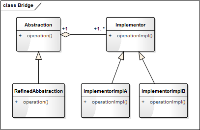
桥接模式的类图
从类图可以看出，桥梁模式和策略模式几乎是一样的，只是多了对抽象（Abstraction）的具体实现类，用于对抽象化角色进行修正。
桥接模式
Decouple an abstraction from its implementation so that the two can vary independently.
将抽象和实现解耦，使得它们可以独立地变化。
桥梁模式关注的是抽象和实现的分离，使得它们可以独立地发展；桥梁模式是结构型模式，侧重于软件结构。而策略模式关注的是对算法、规则的封装，使得算法可以独立于使用它的用户而变化；策略模式是行为型模式，侧重于对象行为。
设计模式其实就是一种编程思想，没有固定的结构。区分不同的模式，更多的是要从语义和用途是判断。
应用案例
在几何图形的分类中，假设我们有矩形和椭圆之分，这时又希望加入颜色（红色、绿色）来拓展它的层级。如果用一般继承的思想，则会有下面这样的类图：
如果再增加几个形状（如三角形），再增加几种颜色（如蓝色、紫色），这个类图将会越来越膨胀和臃肿。这时，我们就希望对这个设计进行解耦，将形状和颜色分成两个分支，独立发展，互不影响。桥接模式就派上用场了，我们看一下使用桥接模式后的类图：
实现代码如下：
from abc import ABCMeta, abstractmethod
# 引入ABCMeta和abstractmethod来定义抽象类和抽象方法
class Shape(metaclass=ABCMeta):
"形状"
def __init__(self, color):
self._color = color
@abstractmethod
def getShapeType(self):
pass
def getShapeInfo(self):
return self._color.getColor() + "的" + self.getShapeType()
class Rectange(Shape):
"矩形"
def __init__(self, color):
super().__init__(color)
def getShapeType(self):
return "矩形"
class Ellipse(Shape):
"椭圆"
def __init__(self, color):
super().__init__(color)
def getShapeType(self):
return "椭圆"
class Color(metaclass=ABCMeta):
"颜色"
@abstractmethod
def getColor(self):
pass
class Red(Color):
"红色"
def getColor(self):
return "红色"
class Green(Color):
"绿色"
def getColor(self):
return "绿色"
测试代码如下：
def testShap():
redRect = Rectange(Red())
print(redRect.getShapeInfo())
greenRect = Rectange(Green())
print(greenRect.getShapeInfo())
redEllipse = Ellipse(Red())
print(redEllipse.getShapeInfo())
greenEllipse = Ellipse(Green())
print(greenEllipse.getShapeInfo())
结果如下：
红色的矩形
绿色的矩形
红色的椭圆
绿色的椭圆
解释模式
解释模式
解释模式又叫解释器模式，它是一种使用频率相对较低但学习难度较大的设计模式，它用于描述如何使用面向对象语言构成一个简单的语言解释器。在某些情况下，为了更好地描述某一些特定类型的问题，我们可以创建一种新的语言，这种语言拥有自己的表达式和结构，即文法规则，这些问题的实例将对应为该语言中的句子。如在金融业务中，经常需要定义一些模型运算来统计、分析大量的金融数据，从而窥探一些商业发展趋势。
Given a language, define a representation for its grammar along with an interpreter that uses the representation to interpret sentences in the language.
定义一个语言，定义它的文法的一种表示；并定义一个解释器，该解释器使用该文法来解释语言中的句子。
类图
解释模式的类图表示如下：
AbstractExpression 解释器的抽象类，定义统一的解析方法。TerminalExpression 是终结符表达式，终结符表达式是语法中的最小单元逻辑，不可再拆分，如下面示例中的 VarExpression。
NonTerminalExpression 是非终结符表达式，方法中每一条规则对应一个非终结表达式，如下面示例中的 AddExpression 和 SubExpression。Context 是上下文环境类，包含解析器之外的一些全局信息，如下面示例中的 newExp 和 expressionMap。
应用案例
我们用数学中最简单的加减法来讲解解释器模式的应用。假设有如下两个表达式规则：
a+b+c
a+b-c
用解释器来解释具体的内容。
from abc import ABCMeta, abstractmethod
# 引入ABCMeta和abstractmethod来定义抽象类和抽象方法
class Expression(metaclass=ABCMeta):
"抽象表达式"
@abstractmethod
def interpreter(self, var):
pass
class VarExpression(Expression):
"变量解析器"
def __init__(self, key):
self.__key = key
def interpreter(self, var):
return var.get(self.__key)
class SymbolExpression(Expression):
"运算符解析器，运算符的抽象类"
def __init__(self, left, right):
self._left = left
self._right = right
class AddExpression(SymbolExpression):
"加法解析器"
def __init__(self, left, right):
super().__init__(left, right)
def interpreter(self, var):
return self._left.interpreter(var) + self._right.interpreter(var)
class SubExpression(SymbolExpression):
"减法解析器"
def __init__(self, left, right):
super().__init__(left, right)
def interpreter(self, var):
return self._left.interpreter(var) - self._right.interpreter(var)
# import stack
class Calculator:
"计算器类"
def __init__(self, text):
self.__expression = self.parserText(text)
def parserText(self, expText):
# 定义一个栈，处理运算的先后顺序
stack = Stack()
left = right = None # 左右表达式
idx = 0
while(idx < len(expText)):
if (expText[idx] == '+'):
left = stack.pop()
idx += 1
right = VarExpression(expText[idx])
stack.push(AddExpression(left, right))
elif(expText[idx] == '-'):
left = stack.pop()
idx += 1
right = VarExpression(expText[idx])
stack.push(SubExpression(left, right))
else:
stack.push(VarExpression(expText[idx]))
idx += 1
return stack.pop()
def run(self, var):
return self.__expression.interpreter(var)
class Stack:
"封装一个堆栈类"
def __init__(self):
self.items = []
def isEmpty(self):
return len(self.items) == 0
def push(self, item):
self.items.append(item)
def pop(self):
return self.items.pop()
def peek(self):
if not self.isEmpty():
return self.items[len(self.items) - 1]
def size(self):
return len(self.items)
测试代码：
def testCalculator():
# 获取表达式
expStr = input("请输入表达式：");
# 获取各参数的键值对
newExp, expressionMap = getMapValue(expStr)
calculator = Calculator(newExp)
result = calculator.run(expressionMap)
print("运算结果为:" + expStr + " = " + str(result))
def getMapValue(expStr):
preIdx = 0
expressionMap = {}
newExp = []
for i in range(0, len(expStr)):
if (expStr[i] == '+' or expStr[i] == '-'):
key = expStr[preIdx:i]
key = key.strip() # 去除前后空字符
newExp.append(key)
newExp.append(expStr[i])
var = input("请输入参数" + key + "的值：");
var = var.strip()
expressionMap[key] = float(var)
preIdx = i + 1
# 处理最后一个参数
key = expStr[preIdx:len(expStr)]
key = key.strip() # 去除前后空字符
newExp.append(key)
var = input("请输入参数" + key + "的值：");
var = var.strip()
expressionMap[key] = float(var)
return newExp, expressionMap
结果如下：
解释器模式是一个简单的语法分析工具，最显著的优点是拓展性，修改语法规则只要修改相应的非终结符表达式就可以了。解释器模式在实际的项目开发中应用的比较少，因为现实复杂，较难维护，但在一些特定的领域还是会被用到，如数据分析、科学计算、数据统计与报表分析。
22 深入解读过滤器模式：制作一杯鲜纯细腻的豆浆
故事剧情】
腊八已过，粥已喝，马上就要过年了！别人家的公司现在都是开年会、发现金红包、发 iPone、发平衡车什么的，而 Tony 什么也没有，只能默默地躲在朋友圈的角落里，好在最后一周还算发了一个慰问品——九阳豆浆机。
豆浆机已经有了，怎么制作一杯鲜纯细腻的豆浆呢？Tony 在网上找了一些资料，摸索了半天总算学会了，准备周末买一些大豆，自制早餐！
把浸泡过的大豆放进机器，再加入半壶水，然后选择模式并按下“启动”键，15 分钟后就可以了，但这并没有完，因为还有最关键的一步，那就是往杯子倒豆浆的时候要用过滤网把豆渣过虑掉。这样，一杯美味的阳光早餐就出来了。
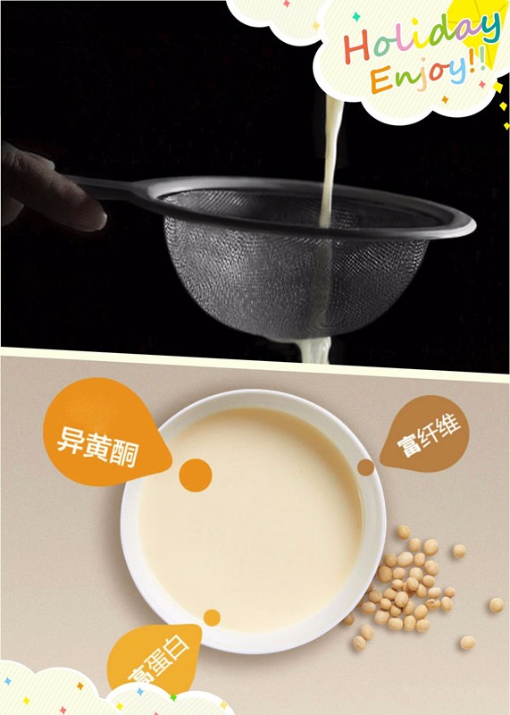
用程序来模拟生活
世间万物，唯有爱与美食不可辜负，吃的健康才能活的出彩。在上面制作豆浆的过程中，豆浆机很重要，但过滤网更关键，因为它直接影响了豆桨的质量。下面我们用程序来模拟一下这关键的步骤。
源码示例：
class FilterScreen:
"""过滤网"""
def doFilter(self, rawMaterials):
for material in rawMaterials:
if (material == "豆渣"):
rawMaterials.remove(material)
return rawMaterials
测试代码：
def testFilterScreen():
rawMaterials = ["豆浆", "豆渣"]
print("过滤前：", rawMaterials)
filter = FilterScreen()
filteredMaterials = filter.doFilter(rawMaterials)
print("过滤后：", filteredMaterials)
输出结果：
过滤前： ['豆浆', '豆渣']
过滤后： ['豆浆']
从剧情中思考过滤器模式
在上面的示例中，豆浆机中有豆浆和豆渣，往杯子里倒的过程中，用过滤网把豆渣过滤掉才能获得更加鲜嫩细腻的豆浆。过滤网起着一个过滤的作用，在程序中也有一种类似的机制，叫过滤器模式。
过滤器模式
过滤器模式就是将一组对象，根据某种规则，过滤掉一些不符合要求的对象的过程。
如在互联网上发布信息时敏感词汇的过滤，在 Web 接口的请求与响应时，对请求和响应信息的过滤。过滤器模式的核心思想非常简单：就是把不需要的信息过滤掉，怎么判定哪些是不需要的信息呢？这就需要制定规则。过滤的过程如下图：

举一更加形象的例子，在基建行业中，沙子是最重要的原材料之一，这些沙子很多是从江河中打捞上来的，而打捞上来的不只有沙子，还有小石头和水。若要得到这些颗粒均匀的沙子，就必须把水和石头过滤掉。
与职责模式的联系
在《[生活中的职责模式——我的假条去哪了]》一文中，我们讲了职责模式（也就是责任链模式）。过滤器与责任链的相似之处是处理过程都是一环一环地进行，不同之处在于责任链中责任的传递一般会有一定的顺序，而过滤器通常没有这种顺序，所以过滤器会比责任链还简单。
过滤器模式的模型抽象
一些熟悉 Python 的读者可能会觉得上面示例中的这种写法太麻烦了，Python 本身就自带了 filter() 函数。用下面这段代码就能轻松搞定，结果是一样的，但代码少了好几行：
def testFilter():
rawMaterials = ["豆浆", "豆渣"]
print("过滤前：", rawMaterials)
filteredMaterials = list(filter(isSoybeanMilk, rawMaterials))
print("过滤后：", filteredMaterials)
def isSoybeanMilk(material):
return material == "豆浆"
能提出这个问题，说明你是带思考阅读本文的。之所以要这么写，有以下两个原因：
- Python 自带的 filter() 是函数式编程（即面向过程式的编程），而设计模式讲述的是一种面向对象的设计思想。
- filter() 函数只是进行简单的数组中对象的过滤，对于一些更复杂的需求（如对不符合要求的对象，不是过滤掉而是进行替换），filter() 函数是难以应付的。
代码框架
基于上面这些问题的思考，我们可以对过滤器模式进行进一步的重构和优化，抽象出过滤器模式的框架模型。
from abc import ABCMeta, abstractmethod
# 引入ABCMeta和abstractmethod来定义抽象类和抽象方法
class Filter(metaclass=ABCMeta):
"""过滤器"""
@abstractmethod
def doFilter(self, elements):
"""过滤方法"""
pass
class FilterChain(Filter):
"过滤器链"
def __init__(self):
self._filters = []
def addFilter(self, filter):
self._filters.append(filter)
def removeFilter(self, filter):
self._filters.remove(filter)
def doFilter(self, elements):
for filter in self._filters:
filter.doFilter(elements)
类图
上面的代码框架可用类图表示如下：
Filter 是所有过滤器的抽象类，定义了统一的过滤接口 doFilter()。FilterA 和 FilterB 是具体的过滤器类，一个类定义一个过滤规则。FilterChain 是一个过滤器链，它可以包含多个过滤器，并管理这些过滤器，在过滤对象元素时，包含的每一个过滤器都会进行一次过滤。
基于框架的实现
有了上面的代码框架之后，我们要实现示例代码的功能就会更简单明确了。最开始的示例代码假设它为 version 1.0，那么再看看基于框架的 version 2.0 吧。
class FilterScreen(Filter):
"""过滤网"""
def doFilter(self, elements):
for material in elements:
if (material == "豆渣"):
elements.remove(material)
return elements
测试代码不用变。自己跑一下，会发现输出结果和之前的是一样的。
模型说明
设计要点
过滤器模式中主要有三个角色，在设计过滤器模式时要找到并区分这些角色：
- 过滤的目标（Target）： 即要被过滤的对象，通常是一个对象数组（对象列表）。
- 过滤器（Filter）： 负责过滤不需要的对象，一般一个规则对应一个类。
- 过滤器链（FilterChain）： 即过滤器的集合，负责管理和维护过滤器，用这个对象进行过滤时，它包含的每一个子过滤器都会进行一次过滤。这个类并不总是需要的，但如果有多个过滤器，有这个类将会带来极大的方便。
优缺点
优点：
- 将对象的过滤、校验逻辑抽离出来，降低系统的复杂度。
- 过滤规则可实现重复利用。
缺点：性能较低，每个过滤器都会对每一个元素进行遍历。如果有 n 个元素、m 个过滤器，则复杂度为 O(mn)。
实战应用
我们在互联网上发布信息时，经常被进行敏感词的过滤；在表单提交的信息要以 HTML 的形式进行显示，会对一些特殊字符的进行转换。这时，我们就需要用过滤器模式对提交的信息进行过滤和处理。
源码示例：
import re
# 引入正则表达式库
class SensitiveFilter(Filter):
"""敏感词过滤"""
def __init__(self):
self.__sensitives = ["黄色", "台独", "贪污"]
def doFilter(self, elements):
# 敏感词列表转换成正则表达式
regex = ""
for word in self.__sensitives:
regex += word + "|"
regex = regex[0: len(regex) - 1]
# 对每个元素进行过滤
newElements = []
for element in elements:
item, num = re.subn(regex, "", element)
newElements.append(item)
return newElements
class HtmlFilter(Filter):
"HTML特殊字符转换"
def __init__(self):
self.__wordMap = {
"&": "&",
"'": " '",
">": ">",
"<": "<",
"\"": " "",
}
def doFilter(self, elements):
newElements = []
for element in elements:
for key, value in self.__wordMap.items():
element = element.replace(key, value)
newElements.append(element)
return newElements
测试代码：
def testFiltercontent():
contents = [
'有人出售黄色书：<黄情味道>',
'有人企图搞台独活动, ——"造谣咨询"',
]
print("过滤前的内容：", contents)
filterChain = FilterChain()
filterChain.addFilter(SensitiveFilter())
filterChain.addFilter(HtmlFilter())
newContents = filterChain.doFilter(contents)
print("过滤后的内容：", newContents)
输出结果：
过滤前的内容： ['有人出售黄色书：<黄情味道>', '有人企图搞台独活动, ——"造谣咨询"']
过滤后的内容： ['有人出售书：<黄情味道>', '有人企图搞活动, —— "造谣咨询 "']
应用场景
- 敏感词过滤、舆情监测。
- 需要对对象列表（或数据列表）进行检验、审查或预处理的场景。
- 对网络接口的请求和响应进行拦截，如对每一个请求和响应记录日志，以便日后分析。
23 深入解读对象池技术：共享让生活更便捷
【故事剧情】
大学的室友兼死党 Sam 首次来杭州，作为东道主的 Tony 自然得悉心招待，不敢怠慢。这不，不仅要陪吃陪喝还得陪玩，哈哈！
第一次来杭州，西湖必然是非去不可的。正值周末，风和日丽，最适合游玩。上午 9 点出发，Tony 和 Sam 打一辆滴滴快车从滨江到西湖的南山路，然后从大华饭店步行到断桥，之后是穿越断桥，漫步白堤，游走孤山岛，就这样一路走走停停，闲聊、拍照，很快就到了中午。中午在岳王庙附近找了一家生煎，简单解决午餐（大餐留着晚上吃）。因为拍照拍的比较多，手机没电了，正好看到店里有共享充电宝，便借了一个给手机充满电，也多休息了一个小时。 下午，他们准备骑行最美西湖路；吃完饭，找了两辆共享自行车，从杨公堤开始骑行，路过太子湾、雷峰塔，然后再到柳浪闻莺。之后就是沿湖步行走到龙翔桥，找了一家最具杭州特色的饭店解决晚餐……
这一路行程他们从共享汽车（滴滴快车）到共享自行车，再到共享充电宝，共享的生活方式已如影随形地渗透到了生活的方方面面。共享，不仅让我们出行更便捷，而且资源更节约！

用程序来模拟生活
共享经济的飞速发展真的是改变了我们的生活方式，共享自行车、共享雨伞、共享充电宝、共享 KTV 等，共享让我们的生活更便利，你可以不用带充电宝，却可以随时用到它；共享让我们的资源更节约，你可以不用买自行车，但每个人都能骑到自行车（一辆车可以为多个人服务）。我们以共享充电宝为例，用程序来模拟一下它是怎样做到资源节约和共享的。
源码示例：
class PowerBank:
"移动电源"
def __init__(self, serialNum, electricQuantity):
self.__serialNum = serialNum
self.__electricQuantity = electricQuantity
self.__user = ''
def getSerialNum(self):
return self.__serialNum
def getElectricQuantity(self):
return self.__electricQuantity
def setUser(self, user):
self.__user = user
def getUser(self):
return self.__user
def showInfo(self):
print("序列号:" + str(self.__serialNum) + " 电量:" + str(self.__electricQuantity) + "% 使用者:" + self.__user)
class ObjectPack:
"对象的包装类，封装指定的对象(如充电宝)是否被使用中"
def __init__(self, obj, inUsing = False):
self.__obj = obj
self.__inUsing = inUsing
def inUsing(self):
return self.__inUsing
def setUsing(self, isUsing):
self.__inUsing = isUsing
def getObj(self):
return self.__obj
class PowerBankBox:
"存放移动电源的智能箱盒"
def __init__(self):
self.__pools = {}
self.__pools['0001'] = ObjectPack(PowerBank('0001', 100))
self.__pools['0002'] = ObjectPack(PowerBank('0002', 100))
def borrow(self, serialNum):
"使用移动电源"
item = self.__pools.get(serialNum)
result = None
if(item is None):
print("没有可用的电源！")
elif(not item.inUsing()):
item.setUsing(True)
result = item.getObj()
else:
print(str(serialNum) + "电源已被借用！")
return result
def giveBack(self, serialNum):
"归还移动电源"
item = self.__pools.get(serialNum)
if(item is not None):
item.setUsing(False)
print(str(serialNum) + "电源已归还!")
测试代码：
def testPowerBank():
box = PowerBankBox()
powerBank1 = box.borrow('0001')
if(powerBank1 is not None):
powerBank1.setUser('Tony')
powerBank1.showInfo()
powerBank2 = box.borrow('0002')
if(powerBank2 is not None):
powerBank2.setUser('Sam')
powerBank2.showInfo()
powerBank3 = box.borrow('0001')
box.giveBack('0001')
powerBank3 = box.borrow('0001')
if(powerBank3 is not None):
powerBank3.setUser('Aimee')
powerBank3.showInfo()
输出结果：
序列号:0001 电量:100% 使用者:Tony
序列号:0002 电量:100% 使用者:Sam
0001电源已被借用！
0001电源已归还!
序列号:0001 电量:100% 使用者:Aimee
从剧情中思考对象池机制
在共享充电宝这个示例中，如果还有未被借用的设备，我们就能借到充电宝给自己的手机充电；用完之后把充电宝还回去，继续让下一个人借用，这样就能让充电宝的利用率达到最大。如共享充电宝一样，在程序中也有一种对应的机制，可以让对象重复地被使用，这就是对象池。
对象池
对象池其实就是一个集合，里面包含了我们需要的已经过初始化且可以使用的对象，我们称这些对象都被池化了，也就是被对象池所管理，想要这样的对象，从池子里取一个就行，但是用完得归还。
可以理解对象池为单例模式的延展，多例模式，就那么几个对象实例，再多没有了；要用可以，但用完必须归还，这样其他人才能再使用。可以用下面一张图来形象的表示：

上面共享充电定的示例就能非常形象地类比对象池的概念：对象池就如同存放充电宝的智能箱盒，对象就量充电定，而对象的借用、使用、归还分别对应充电宝的借用、使用、归还。
与享元模式的联系
在《[第17课：生活中的享元模式——颜料很贵必须充分利用]》这一篇文章中我们知道享元模式可以实现对象的共享，通过使用享元模式可以节约内存空间，提高系统的性能。但这个模式也存在一个问题，那就是享元对象的内部状态和属性，一经创建后不会被随意改变。因为如果可以改变，则 A 取得这个对象 obj 后，改变了其状态；B 再去取这个对象 obj 时就已经不是原来的状态了。
对象池机制正好可以解决享元模式的这个缺陷。它通过借、还的机制，让一个对象在某段时间内被一个使用者独占，用完之后归还该对象，在独占的这段时间内使用者可以修改对象的部分属性（因为这段时间内其他用户不会使用这个对象）；而享元模式因为没有这种机制，享元对象在整个生命周期都是被所有使用者共享的。
什么就独占？就是你用着这个充电宝，（同一时刻）别人就不能用了，因为只有一个接口，只能给一个手机充电。
什么叫共享？就是深夜中几个人围一圆桌坐着，头顶上挂着一盏电灯，大家都享受着这盏灯带来的光明，这盏电灯就是共享的。而且一定范围内来讲它是无限共享的，因为圆桌上坐着 5 个人和坐着 10 个人，他们感觉到的光亮是一样的。
对象池机制是享元模式的一个延伸，可以理解为享元模式的升级版。
对象池机制的模型抽象
代码框架
池子、借用、归还是对象池机制的核心思想，我们可以基于这一思想逐步抽象出一个简单可用的实现模型。
from abc import ABCMeta, abstractmethod
# 引入ABCMeta和abstractmethod来定义抽象类和抽象方法
import logging
# 引入logging模块用于输出日志信息
import time
# 引入时间模块
class PooledObject:
"池对象,也称池化对象"
def __init__(self, obj):
self.__obj = obj
self.__busy = False
def getObject(self):
return self.__obj
def setObject(self, obj):
self.__obj = obj
def isBusy(self):
return self.__busy
def setBusy(self, busy):
self.__busy = busy
class ObjectPool(metaclass=ABCMeta):
"对象池"
"对象池初始化大小"
InitialNumOfObjects = 10
"对象池最大的大小"
MaxNumOfObjects = 50
def __init__(self):
self.__pools = []
for i in range(0, ObjectPool.InitialNumOfObjects):
obj = self.createPooledObject()
self.__pools.append(obj)
@abstractmethod
def createPooledObject(self):
"子类提供创建对象的方法"
pass
def borrowObject(self):
# 如果找到空闲对象，直接返回
obj = self._findFreeObject()
if(obj is not None):
logging.info("%s对象已被借用, time:%d", id(obj), time.time())
return obj
# 如果对象池未满，则添加新的对象
if(len(self.__pools) < ObjectPool.MaxNumOfObjects):
pooledObj = self.addObject()
if (pooledObj is not None):
pooledObj.setBusy(True)
logging.info("%s对象已被借用, time:%d", id(pooledObj.getObject()), time.time())
return pooledObj.getObject()
# 对象池已满且没有空闲对象，则返回None
return None
def returnObject(self, obj):
for pooledObj in self.__pools:
if(pooledObj.getObject() == obj):
pooledObj.setBusy(False)
logging.info("%s对象已归还, time:%d", id(pooledObj.getObject()), time.time())
break
def addObject(self):
obj = None
if(len(self.__pools) < ObjectPool.MaxNumOfObjects):
obj = self.createPooledObject()
self.__pools.append(obj)
logging.info("添加新对象%s, time:%d", id(obj), time.time())
return obj
def clear(self):
self.__pools.clear()
def _findFreeObject(self):
"查找空闲的对象"
obj = None
for pooledObj in self.__pools:
if(not pooledObj.isBusy()):
obj = pooledObj.getObject()
pooledObj.setBusy(True)
break
return obj
类图
上面的代码框架可用类图表示如下：
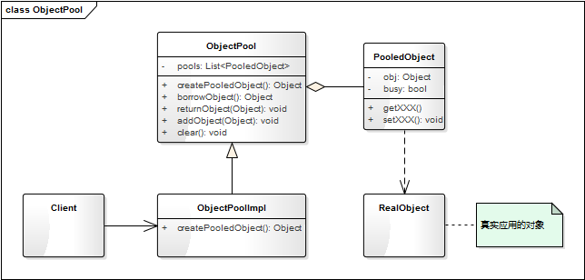
ObjectPool 的一个抽象的对象池，PooledObject 是池对象。实际使用时要实现一个 ObjectPool 的子类并实现 createPooledObject 创建对象的方法；PooledObject 其实是对真实对象的一个包装类，用于控制其是否被占用状态。
基于框架的实现
有了上面的代码框架之后，我们要实现示例代码的功能就会更简单了。最开始的示例代码假设它为 version 1.0，那么再看看基于框架的 version 2.0 吧。
class PowerBank:
"移动电源"
def __init__(self, serialNum, electricQuantity):
self.__serialNum = serialNum
self.__electricQuantity = electricQuantity
self.__user = ""
def getSerialNum(self):
return self.__serialNum
def getElectricQuantity(self):
return self.__electricQuantity
def setUser(self, user):
self.__user = user
def getUser(self):
return self.__user
def showInfo(self):
print("序列号:%03d 电量:%d%% 使用者:%s" % (self.__serialNum, self.__electricQuantity, self.__user))
class PowerBankPool(ObjectPool):
__serialNum = 0
@classmethod
def getSerialNum(cls):
cls.__serialNum += 1
return cls.__serialNum
def createPooledObject(self):
powerBank = PowerBank(PowerBankPool.getSerialNum(), 100)
return PooledObject(powerBank)
测试代码得稍微改一下：
def testObjectPool():
powerBankPool = PowerBankPool()
powerBank1 = powerBankPool.borrowObject()
if (powerBank1 is not None):
powerBank1.setUser("Tony")
powerBank1.showInfo()
powerBank2 = powerBankPool.borrowObject()
if (powerBank2 is not None):
powerBank2.setUser("Sam")
powerBank2.showInfo()
powerBankPool.returnObject(powerBank1)
# powerBank1归还后，不能再对其进行相关操作
powerBank3 = powerBankPool.borrowObject()
if (powerBank3 is not None):
powerBank3.setUser("Aimee")
powerBank3.showInfo()
powerBankPool.returnObject(powerBank2)
powerBankPool.returnObject(powerBank3)
powerBankPool.clear()
输出结果：
序列号:001 电量:100% 使用者:Tony
序列号:002 电量:100% 使用者:Sam
序列号:001 电量:100% 使用者:Aimee
设计要点
对象池机制有两个核心对象和三个关键动作。
- 对象（Object）： 要进行池化的对象，通常是一些创建和销毁时会非常耗时，或对象本身非常占内存的对象。
- 对象池（Object Pool）： 对象的集合，其实就是对象的管理器，管理对象的借用、归还。
- 借用对象（borrow object）： 从对象池中获取对象。
- 使用对象（using object）： 使用对象进行业务逻辑的处理。
- 归还对象（return、give back）： 将对象归还对象池；归还后这个对象的引用不能再作它用，除非重新获取对象。
对象池机制的优点
对象池机制通过借用、归还的思想，实现了对象的重复利用，能有效地节约内存，提升程序性能。
对象池机制的缺点
但同时也带来一个问题，就是使用者必须自己去负责对象的借用和归还，这里需要注意两点：
- 借用和归还必须成对出现，用完后必须归还，不然这个对象将一直处于占用状态。
- 已归还的对象的引用，不能再进行任何其他的操作，否则将产生不可预料的结果。
这就类似于 C 语言中对象内存的分配和释放，程序员必须自己负责内存的申请和释放，给程序带来了很大的负担。
要解决这个问题，就要使用引用计数的技术。引用计数的核心相思是：这个对象每多一个使用者（如对象的赋值和传递时），引用就自动加 1；每少一个使用者（如 del 一个变量，或退出作用域），引用就自动减 1。
当引用为1时（只有对象池指向这个对象），自动归还（returnObject）给对象池，这样使用者只需要申请一个对象（borrowObject），而不用关心什么时候归还。
这一部分的实现方式比较复杂，这里将不再详细讲述。引用计数每一门机算机语言的实现方式都各不相同，如 Java 的 Commons-pool 库中就有 SoftReferenceObjectPool 类就是用来解决这个问题的；而 C++ 则可以使用智能指针的方式来实现；Python 的引用计数则是内置了，你可以通过 sys 包中的 getrefcount() 来获得一个对象被引用的数量。
应用场景
对象池机制特别适用于那些初始化和销毁的代价高，且需要经常被实例化的对象；如大对象、需占用 IO 的对象，这些在创建和销毁时会非常耗时，或对象本身非常占内存的对象。如果是简单的对象，对象的创建和销毁都非常快速，也不吃内存；把它进行池化的时间比自己构建还多，就不划算了。因为对象池的管理本身也是需要占用资源的，如对象的创建、借用、归还这些都是需要消耗资源的。我们经常听到的（数据库）连接池、线程池用到的都是对象池的思想。
这一课讲的是对象池技术中最核心部分的一种实现，在实际的项目开发中，也有很多成熟的开源项目可以用，比如 Java 语言有 Apache 的 commons-pool 库，就提供了种类多样、功能强大的对象池实现；C++ 语言，也有 Boost 库提供了相应的对象池的功能。
24 深入解读回调机制：把你技能亮出来
铁打的公司，流水的员工！职场中经常有新的员工来，也有老的员工走。为迎接新员工的到来，Tony 所在的公司每个月都有一个新人见面会，在见面会上每个新人都要给大家表演一个节目，节目类型不限，内容随意！只要把你的技能都亮出来，把最有趣的一面展示给大家就行。有的人选择唱一首歌，有的人拉一曲 Ukulele，有的人会说一搞笑段子，有的人会表演魔术，还有的人耍起了滑板，真是各种鬼才……
用程序来模拟生活
职场处处艰辛，但生活充满乐趣！每个人有自己的爱好，每个人也有自己擅长的技能。在新人见面会上把自己最擅长的一面展示出来，是让大家快速记住你的最好方式。下面我们用程序来模拟一下这个场景。
源码示例：
class Employee:
"""公司员工"""
def __init__(self, name):
self.__name = name
def doPerformance(self, skill):
print(self.__name + "的表演:", end="")
skill()
def sing():
"""唱歌"""
print("唱一首歌")
def dling():
"""拉Ukulele"""
print("拉一曲Ukulele")
def joke():
"""说段子"""
print("说一搞笑段子")
def performMagicTricks():
"""表演魔术"""
print("神秘魔术")
def skateboarding():
"""玩滑板"""
print("酷炫滑板")
测试代码：
def testSkill():
helen = Employee("Helen")
helen.doPerformance(sing)
frank = Employee("Frank")
frank.doPerformance(dling)
jacky = Employee("Jacky")
jacky.doPerformance(joke)
chork = Employee("Chork")
chork.doPerformance(performMagicTricks)
Kerry = Employee("Kerry")
Kerry.doPerformance(skateboarding)
输出结果：
Helen的表演:唱一首歌
Frank的表演:拉一曲Ukulele
Jacky的表演:说一搞笑段子
Chork的表演:神秘魔术
Kerry的表演:酷炫滑板
从剧情中思考回调机制
在上面的示例中，每一个新员工都要进行表演，每个人表演自己擅长的技能。因此我们定义了一个 Employee 类，里面有一个 doPerformance 方法，用来进行表演节目；但每个人擅长的技能都不一样，因此我们为每一个上台表演的人定义了一个方法，在调用时传递给 doPerformance。像这样，将一个函数传递给另一个函数的方式叫回调机制。
回调机制
把函数作为参数，传递给另一个函数，延迟到另一个函数的某个时刻执行的过程叫回调。假设有一个函数叫 callback(args); ，这个函数可以作为参数传递给另一个函数 otherFun(fun, args); ，如 otherFun(callback, [1, 2, 3])。那么 callback 叫回调函数，otherFun 叫高阶函数，也叫包含（调用）函数。
回调函数的本质是一种模式（一种解决常见问题的模式），或说一种机制；因此我们把回调函数的实现方式也被称为回调模式或回调机制。
在上面示例中，doPerformance 就是一个高阶函数（包含函数），为每一个表演者定义的方法（如 sing、dling、joke）就是回调函数。
设计思想
回调函数来自一种著名的编程范式——函数式编程，在函数式编程中可以指定函数作为参数。函数是 Python 内建支持的一种封装，我们通过把大段代码拆成函数，通过一层一层的函数调用，就可以把复杂任务分解成简单的任务，这种分解可以称之为面向过程的程序设计，也称为函数式编程。把函数作为参数传入给另一个函数的回调机制是函数式编程的核心思想。
我们在程序开发中经常会用到一些库，如 Python 内置的库，第三方库；这些库会定义一些通用的方法（如 filter()、map()），这些都是高阶函数。我们在调用的时候要先定义一个回调函数以实现特定的功能，并将这个函数作为参数传递给高阶函数。其过程如下图：
当我们作为参数传递一个回调函数给另一个函数时，只传递了这个函数的定义，并没有在参数中执行它，而是在包含函数函数体内的某个位置被执行，就像回调函数在包含函数的函数体内定义一样。
【应用实例】
如我们要求一个整数数组 [2, 3, 6, 9, 12, 15, 18] 中所有的偶数和大于 10 的数，可以这样实现：
def isEvenNumber(num):
return num % 2 == 0
def isGreaterThanTen(num):
return num > 10
def getEvenNumbers(fun, elements):
newList = []
for item in elements:
if (fun(item)):
newList.append(item)
return newList
def testCallback():
elements = [2, 3, 6, 9, 12, 15, 18]
list1 = getEvenNumbers(isEvenNumber, elements)
list2 = getEvenNumbers(isGreaterThanTen, elements)
print("所有的偶数：", list1)
print("大于10的数：", list2)
结果如下：
所有的偶数： [2, 6, 12, 18]
大于10的数： [12, 15, 18]
上面这个例子，我们只是演示一下回调函数如何实现。在真正的项目中，可直接使用 Python 内置的 filter 函数和 lambda 表达式，代码更简洁，如下：
list1 = list(filter(lambda x: x % 2 == 0, elements))
list2 = list(filter(lambda x: x > 10, elements))
面向对象的方式实现回调机制
回调函数属于函数式编程，也就是面向过程式的编程。在面向对象的编程中，如何实现这种机制呢？特别是对于不支持函数作为参数来传递的语言（如 Java）。回想一下学习过的这些设计模式，也许你能找到。
对了，就是策略模式。我们知道策略模式是定义一系列算法，将每个算法都封装起来，并且使他们之间可以相互替换。
实战应用
下面，我们用策略模式来实现示例中的这种回调机制。
源码示例：
from abc import ABCMeta, abstractmethod
# 引入ABCMeta和abstractmethod来定义抽象类和抽象方法
class Skill(metaclass=ABCMeta):
"""技能的抽象类"""
@abstractmethod
def performance(self):
"""技能表演"""
pass
class NewEmployee:
"""公司新员工"""
def __init__(self, name):
self.__name = name
def doPerformance(self, skill):
print(self.__name + "的表演:", end="")
skill.performance()
class Sing(Skill):
"""唱歌"""
def performance(self):
print("唱一首歌")
class Joke(Skill):
"""说段子"""
def performance(self):
print("说一搞笑段子")
class Dling(Skill):
"""拉Ukulele"""
def performance(self):
print("拉一曲Ukulele")
class PerformMagicTricks(Skill):
"""表演魔术"""
def performance(self):
print("神秘魔术")
class Skateboarding(Skill):
"""玩滑板"""
def performance(self):
print("酷炫滑板")
测试代码：
def testStrategySkill():
helen = NewEmployee("Helen")
helen.doPerformance(Sing())
frank = NewEmployee("Frank")
frank.doPerformance(Dling())
jacky = NewEmployee("Jacky")
jacky.doPerformance(Joke())
chork = NewEmployee("Chork")
chork.doPerformance(PerformMagicTricks())
Kerry = NewEmployee("Kerry")
Kerry.doPerformance(Skateboarding())
自己测试一下，结果和回调函数的方式是一样的。
这种用面向对象的方式实现的类图如下：
有人可能会问上面这个类图和策略模式不太一样啊！策略模式中 Context 和 Strategy 是一种聚合关系，即 Context 中存有 Strategy 的对象；而这里 NewEmployee 和 Skill 是一个依赖关系，NewEmployee 不存 Skill 的对象。这里要说明的设计模式不是一成不变的，是可以根据实现情况灵活变通的。如果你愿意，依然可以写成聚合关系，但代码将不会这么优雅。
Java 的实现：
用 Java 这种支持匿名类的语言来实现，更能感受到回调的味道，代码也更简洁和优雅，如下：
/**
* 定义一个技能的接口
*/
interface ISkill {
public void performance();
}
/**
* 员工类
*/
public class NewEmployee {
private String name;
public NewEmployee(String name) {
this.name = name;
}
public void doPerformance(ISkill skill) {
System.out.print(this.name + "的表演:");
skill.performance();
}
/**
* 用Main方法来测试
*/
public static void main(String args[])
{
NewEmployee helen = new NewEmployee("Helen");
helen.doPerformance(new ISkill() {
@Override
public void performance() {
System.out.println("说一搞笑段子");
}
});
NewEmployee frank = new NewEmployee("Frank");
frank.doPerformance(new ISkill() {
@Override
public void performance() {
System.out.println("拉一曲Ukulele");
}
});
}
}
设计要点
在设计回调机制的程序时要注意以下几点：
- 在支持函数式编程的语言中，可以使用回调函数实现。作为参数传递的函数称为回调函数，接受回调函数（参数）的函数称为高阶函数或包含函数。
- 只支持面向对象编程的语言中，可以使用策略模式来实现回调机制。
回调机制的优点
- 避免重复代码
- 增强代码的可维护性
- 有更多定制的功能
回调机制的缺点
可能出现“回调地狱”的问题，即多重的回调函数调用。如回调函数 A 被高阶函数 B 调用，同时 B 本身又是一个回调函数被函数 C 调用。我们应尽量避免这种多重调用的情况，否则代码可读性很差，程序将很难维护。
应用场景
- 在第三方库和框架中。
- 异步执行（如读文件，发送 HTTP 请求）。
- 在你需要更多的通用功能的地方更好地实现抽象（可处理各种类型的函数）。
25 谈谈我对设计模式的理解
众多书籍之下为何还要写这一课程
设计模式可谓是老生常谈的不能再老生常谈了，我曾经思考过很长一段时间要不要去写这系列的文章，因为这一主题的书籍实在太多了，网上免费的资料也非常的多。思考再三，最终决定写它，主要有以下几个原因：
- 网上的资料虽然非常多，但就如同你所知：网上资料一大抄！内容极其雷同而且粗浅。
- 讲设计模式的书籍虽然非常多，但用 Python 来描述的非常的少，有那么几本也是从国外翻译过来的，内容多少会有些变味。
- 能把抽象难懂的设计模式讲的通俗易懂、妙趣横生的很少。
设计模式玄吗
我觉得它玄，也不玄！
怎么讲呢？《孙子兵法》玄不玄？也玄！因为芸芸众生中能看懂悟透的人很少，能真正灵活应用的人更少！而且战争的成败受众多因素的影响，如天时、地利、人和。但你要问中国历代名将中有哪个不读《孙子兵法》的？几乎没有，如三国的曹操、南宋的岳飞、明代的戚继光，这些人可谓是把兵法用的出神入化了。那两千多年来世界其他国家没看过《孙子兵法》的是怎么打仗的？照样打。没学过兵法的人就不会使用里面的计策吗？当然会用，而且经常用。比如“借刀杀人”，相信这个人们在耍小聪明的时候都用过；“打草惊蛇”这个计策估计连小孩都会用，这样的例子还有很多。只是你不知道古代已经有人把它总结成“战争模式”了。所以说《孙子兵法》其实也不玄。
同样的道理，“设计模式”是一套被反复使用、多数人知晓的、无数工程师实践的代码设计经验的总结。因此它比较抽象，没有一定的编程经验很难读懂，更不能理解其精髓。所以很多人觉得它玄，但真正的架构师和优秀的程序员，几乎没有不看设计模式的。能把设计模式应用的如火纯青的，那就是大神。同样的问题：没有学过设计模式就不会使用设计模式了吗？当然不是！只要你有两年以上的编程经验，像模板模式、单例模式、适配器（Wrapper）模式，这些你肯定用过（那怕你没有看一本设计模式的书），只是你不知道有前人已经总结成书了，所以说设计模式其实也不玄！
网上看到一句话，我还是很赞同这种说法的：
对于 10w 行以下的代码量的汉子来说，设计模式 = 玄学。
对于 10w ~ 50w 行代码量的汉子来说，设计模式 = 科学。
对于 50w 行以上代码量的汉子来说，设计模式 = 文学。
如何区分不同的模式
设计模式是对面向对象思想的常见使用场景的模型总结和归纳。设计模式之间的区分，要更多地从我们含义和应用场景去区别，而不应该从他们的类图结构来区分。
看策略模式、状态模式、桥接模式这三种模式的类图几乎是完全一样的（如下图）。从面向的对象的继承、多态、封装的角度来分析，他们是完全一样的。


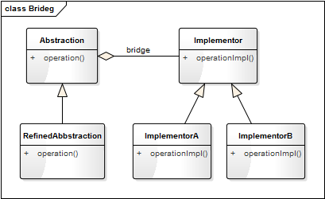
但他们的实际应用场景却不同、侧重点不同。策略侧重的算法的变更导致执行结果的差异，状态侧重的是对象本身状态的改变而导致行为的变化，而桥接强调的是实现与抽象的分离。
编程思想的三重境界
所以有人说：设计模式这东西很虚！ 要我说，它确实也虚！ 如果它看得见摸得着，那我就没必要讲了。我说过，设计模式是一套被反复使用、多数人知晓的、无数工程师实践的代码设计经验的总结，它是面向对象思想的高度提炼和模板化。既然是思想，能不虚吗？它就想道家里面的“道”的理念，每个人对道的理解是不样的，对道的认知也有不同的境界，而不同的境界对应着不同的修为。
宋代禅宗大师青原行思提出参禅的三重境界：
参禅之初，看山是山，看水是水；
禅有悟时，看山不是山，看水不是水；
禅中彻悟，看山仍是山，看水仍是水。
上面讲述的是对禅道的认识的三重不同境界，设计模式既然是一种编程思想，那也会有不同的境界，我这里也概括它为三重境界：
- **一重境界：**依葫芦画瓢。这属于初学阶段，以为设计模式只有书中提到的那几种模式，模式名称也能倒背如流。但真正要用时，还得去翻书，依关类图照般照改。
- **二重境界：**灵活运用。这属于中级阶段，对每一种设计模式都非常熟悉，有较深入的思考，而且能够根据实际的业务场景选择合适的模式，并对相应的模式进行恰当的修改以符合实际需求。
- 三重境界：心中无模式。这算终于阶段，这里说无模式并非他不用设计模式，而是设计模式的理念已经融入他的灵魂和血液，他已经不在乎哪种具体的通用模式了，每一处代码都遵循了设计的原则，能灵活地创造和使用新的模式（可能这种模式他自己也不知道该叫什么名）。这就是所谓的心中无模式却处处是模式。
26 谈谈我对设计原则的思考
如果说设计模式是面向对象编程的编程思想，那设计原则就是这些编程思想的指导总纲。SOLID 原则是众多设计原则中威力最大、最广为人知的五大原则，除 SOLID 原则外，还有一些更为简单实用的原则。
SOLID 原则
SOLID 是面向对象设计（OOD）的头五大基本原则的首字母缩写，由俗称「鲍勃大叔」的 Robert C. Martin 在《敏捷软件开发：原则、模式与实践》一书中整理收集而来。这些原则结合在一起能够方便程序员开发易于维护和扩展的软件。这五原则分别是：
- S——单一职责原则
- O——开放封闭原则
- L——里氏替换原则
- I——接口隔离原则
- D——依赖倒置原则
单一职责原则（Single Responsibility Principle，SRP）
核心思想：
A class should have only one reason to change.
一个类应该有且仅有一个原因引起它的变更。
这句话这样说可能不太容易理解，解释一下：类 T 负责两个不同的职责（可以理解为功能）：职责 P1、职责 P2。当由于职责 P1 需求发生改变而需要修改类 T 时，有可能会导致原本运行正常的职责 P2 功能发生故障。这就不符合单一职责原则，这时就应该将类 T 拆分成两个类 T1、T2，使 T1 完成职责 P1 功能，T2 完成职责 P2 功能。这样，当修改类 T1 时，不会使职责 P2 发生故障风险；同理，当修改 T2 时，也不会使职责 P1 发生故障风险。
说人话：
一个类只负责一项功能或一类相似的功能。
当然这个“一”并不是绝对的，应该理解为一个类只负责尽可能独立的一项功能，尽可能少的职责。就好比一个人，我们的精力、时间都是有限的；如果我们什么事情都做，那什么事情都做不好；而应该集中精力做一件事，才能把事情做好。
案例分析
我们知道动物都能运动，假设都有一个跑的方法。产品经理告诉你只处理陆生哺乳动物，那我们定义一个动物的类。
class Animal:
"""动物"""
def __init__(self, name):
self.__name = name
def running(self):
print(self.__name + "在跑...")
Animal("猫").running()
Animal("狗").running()
结果：
猫在跑...
狗在跑...
Ok，这样定义完全没有问题，一个类只负责一项功能。但过了两天，产品经理告诉你，我们的动物不只有陆生动物，还要有水生动物（如鱼类），水生动物是在水里游。这个时候你能拿把刀砍了产品经理吗？想多了，祭天的还是程序员！
还是好好改代码吧！这个时候，我们可能会有三种写法：
方法一：
class Animal:
"""动物"""
def __init__(self, name, type):
self.__name = name
self.__type = type
def running(self):
if(self.__type == "水生"):
print(self.__name + "在水里游...")
else:
print(self.__name + "在陆上跑...")
Animal("狗", "陆生").running()
Animal("鱼", "水生").running()
这种写法，改起来相对快速，但在代码的方法级别就违背了单一职责原则，因为影响 running 这个功能的因素就有两个，一个是陆地的因素，一个水质的因素。如果那一天要区分是在池塘里游还是在海里游，就又得修改 running 方法（增加 if… else… 判断），这种修改对陆地上跑的动物来说，存在极大的隐患。可能那一天突然程序出现 Bug：骆驼在海里游了。哈哈！
方法二：
class Animal:
"""动物"""
def __init__(self, name):
self.__name = name
def running(self):
print(self.__name + "在陆上跑...")
def swimming(self):
print(self.__name + "在水里游...")
Animal("狗").running()
Animal("鱼").swimming()
这种写法在代码的方法级别是符合单一职责原则的，一个方法负责一项功能，因水质的原因修改 swimming 方法不会影响陆地上跑的动物。但在类的级别它是不符合单一职责原则的，因为它同时可以干两件事情：跑和游。而且这种写法给用户增加了麻烦，调用方需要时刻明白那种动物是会跑的，那种动物是会游泳的；不然就很可能会出现“狗调用了 swimming 方法，鱼调用了 running 方法”窘境。
方法三：
class TerrestrialAnimal():
"""陆生生物"""
def __init__(self, name):
self.__name = name
def running(self):
print(self.__name + "在陆上跑...")
class AquaticAnimal():
"""水生生物"""
def __init__(self, name):
self.__name = name
def swimming(self):
print(self.__name + "在水里游...")
TerrestrialAnimal("狗").running()
AquaticAnimal("鱼").swimming()
这种写法就符合单一职责原则。此时影响动物移动的因素就有两个：一个是陆地的因素，一个水质的因素；动物对应两个职责，一个是跑，一个是游。所以我们将动物根据不同的职责拆分成陆生生物（TerrestrialAnimal）和水生生物（AquaticAnimal）。
优点：
- 功能单一，职责清晰。
- 增强可读性，方便维护。
缺点：
- 拆分的太详细，类的数量会急剧增加。
- 职责的的度量没有统一的标准，需要根据项目实现情况而定。
开放封闭原则（Open Close Principle，OCP）
核心思想：
Software entities（classes、modules、functions、etc.）should be open for extension，but closed for modification.
软件实体（如类、模块、函数等）应该对拓展开放，对修改关闭。
说人话：
在一个软件产品的生命周期内，不可避免的会有一些业务和需求变化。我们在设计代码的时候应该尽可能地考虑这些变化，在增加一个功能时，应当尽可能地不去改动已有的代码；当修改一个模块时不应该影响到其他的模块。
案例分析
我们还是以上面的动物为例，假设有这样一个场景：动物园里有很多动物，游客希望观察每一种动物是怎样活动的。
根据上面已有的代码，我们可能会写出这样的调用方式：
class Zoo:
"""动物园"""
def __init__(self):
self.__animals =[
TerrestrialAnimal("狗"),
AquaticAnimal("鱼")
]
def displayActivity(self):
for animal in self.__animals:
if isinstance(animal, TerrestrialAnimal):
animal.running()
else:
animal.swimming()
zoo = Zoo()
zoo.displayActivity()
这种写法目前是没有问题的，但如果要再加一个类型的动物（如鸟类，而鸟是会飞的），这个时候就又得修改 displayActivity 方法，再增加一个 if… else… 判断。
def displayActivity(self):
for animal in self.__animals:
if isinstance(animal, TerrestrialAnimal):
animal.running()
elif isinstance(animal, BirdAnimal)
animal.flying()
else:
animal.swimming()
这是不符合“开放封闭原则”，因为每增加一个类别就要修改 displayActivity，我们要对修改关闭。这时我们就要重新设计我们的代码，如下：
from abc import ABCMeta, abstractmethod
class Animal(metaclass=ABCMeta):
"""动物"""
def __init__(self, name):
self._name = name
@abstractmethod
def moving(self):
pass
class TerrestrialAnimal(Animal):
"""陆生生物"""
def __init__(self, name):
super().__init__(name)
def moving(self):
print(self._name + "在陆上跑...")
def checkFood(self, food):
food.category() == ""
class AquaticAnimal(Animal):
"""水生生物"""
def __init__(self, name):
super().__init__(name)
def moving(self):
print(self._name + "在水里游...")
class BirdAnimal(Animal):
"""鸟类动物"""
def __init__(self, name):
super().__init__(name)
def moving(self):
print(self._name + "在天空飞...")
class Monkey(TerrestrialAnimal):
"""猴子"""
def __init__(self, name):
super().__init__(name)
def climbing(self):
print(self._name + "在爬树，动作灵活轻盈...")
class Zoo:
"""动物园"""
def __init__(self):
self.__animals =[]
def addAnimal(self, animal):
self.__animals.append(animal)
def displayActivity(self):
print("观察每一种动物的活动方式：")
for animal in self.__animals:
animal.moving()
测试代码：
def testZoo():
zoo = Zoo()
zoo.addAnimal(TerrestrialAnimal("狗"))
zoo.addAnimal(AquaticAnimal("鱼"))
zoo.addAnimal(BirdAnimal("鸟"))
zoo.displayActivity()
结果：
观察每一种动物的活动方式：
狗在陆上跑...
鱼在水里游...
鸟在天空飞...
这时我们把各种类型的动物抽象出了一个基类——动物类（Animal）；同时我们把游（swimming）和飞（flying）的动作也抽象成了移动（moving）。这样我们每增加一种类型的动物，只要增加一个 Animal 的子类即可，其他代码几乎可以不用动；要修改一种类型动物的行为，只要修改对应的类即可，其他的类不受影响；这才是符合面向对象的设计。
里氏替换原则（Liskov Substitution Principle，LSP）
核心思想：
functions that use pointers to base classes must be able to use objects of derived classes without knowing it.
所有能引用基类的地方必须能透明地使用其子类的对象。
有一个类 T 有两个子类 T1、T2，能够使用 T 的对象的地方，就能用 T1 的对象或 T2 的对象，因为子类拥有父类的所有属性和行为。
说人话：
只要父类能出现的地方子类就能出现（就可以用子类来替换他），反之，子类能出现的地方父类就不一定能出现（子类拥有父类的所有属性和行为，但子类拓展了更多的功能）。
案例分析
我们还是以动物为例，陆地上的动物都能在地上跑，但猴子除了能在陆地上跑之外还会爬树。因此我们可以为猫单独定义一个类 Monkey，并在 Zoo 类中增加一个观察指定动物的爬树行为的方法。
增加一猴子类：
class Monkey(TerrestrialAnimal):
"""猴子"""
def __init__(self, name):
super().__init__(name)
def climbing(self):
print(self._name + "在爬树，动作灵活轻盈...")
修改 Zoo 类，增加 climbing 方法：
class Zoo:
"""动物园"""
def __init__(self):
self.__animals =[]
def addAnimal(self, animal):
self.__animals.append(animal)
def displayActivity(self):
print("观察每一种动物的活动方式：")
for animal in self.__animals:
animal.moving()
def monkeyClimbing(self, monkey):
monkey.climbing()
测试代码：
def testZoo():
zoo = Zoo()
zoo.addAnimal(TerrestrialAnimal("狗"))
zoo.addAnimal(AquaticAnimal("鱼"))
zoo.addAnimal(BirdAnimal("鸟"))
monkey = Monkey("猴子")
zoo.addAnimal(monkey)
zoo.displayActivity()
print()
print("观察猴子的爬树行为：")
zoo.monkeyClimbing(monkey)
结果：
观察每一种动物的活动方式：
狗在陆上跑...
鱼在水里游...
鸟在天空飞...
猴子在陆上跑...
观察猴子的爬树行为：
猴子在爬树，动作灵活轻盈...
这里 Zoo 的 addAnimal 方法接受 Animal 类的对象，所以 Animal 子类的对象都能传入。但 Zoo 的 monkeyClimbing 方法只接受 Monkey 类的对象，当传入 TerrestrialAnimal（Monkey 的父类) 的对象时，程序将报错；这说明能出现子类的地方，父类不一定能出现。
依赖倒置原则（Dependence Inversion Principle，DIP）
核心思想：
High level modules should not depend on low level modules; both should depend on abstractions. Abstractions should not depend on details. Details should depend upon abstractions.
高层模块不应该依赖底层模块，二者都该依赖其抽象，抽象不应该依赖细节，细节应该依赖抽象。
高层模块就是调用端，低层模块就是具体实现类，抽象就是指接口或抽象类，细节也是指具体的实现类，也就是说我们只依赖抽象编程。
说人话：
把具有相同特征或相似功能的类，抽象成接口或抽象类，让具体的实现类继承这个抽象类（或实现对应的接口）。抽象类（接口）负责定义统一的方法，实现类负责实现具体功能的实现。
案例分析
上面“开放封闭原则”的例子中，我们把各种类型的动物抽象成一个抽象类 Animal，并定义统一的方法 moving()，这也是遵循了依赖倒置原则。我们的 Zoo（动物园）类是一个高层模块，Zoo 类中的 displayActivity 方法依赖的是动物的抽象类 Animal 和其定义的抽象方法 running()，这就是高层模块依赖其抽象，而不是依赖细节的表现。
我们对这一案例进行更深层次的挖掘一下：我们知道人以食为天，动物更是如此，每天都要吃东西。一说到动物吃东西，你可能立刻就会想到：狗喜欢吃肉，鱼喜欢吃草，鸟喜欢吃虫子！你在小学就会背了，哈哈！
如果让你用程序来模拟一下动物吃东西的过程，你会怎么设计你的程序呢？你会写出下面这样的代码吗？
class Dog:
def eat(self, meat):
pass
class Fish:
def eat(self, grass):
pass
如果写出这样的代码，那就糟糕了！ 因为这样实现你会有几个问题：
- 每一种动物，你都需要为其定义一个食物类，高度依赖于细节；
- 每一种动物只能吃一种东西（它最喜欢的食物），这与实现想违背；如猫不仅喜欢吃老鼠，还喜欢吃鱼；不仅鱼喜欢吃草，牛也喜欢吃草。
这个时候应该遵循依赖倒置原则来进行设计：抽象出一个食物（Food）类，动物（Animal）该依赖食物的抽象类 Food，而不应该依赖基体的细节（具体的食物）。我们根据这一原则来实现一下我们代码，如下：
from abc import ABCMeta, abstractmethod
# 引入ABCMeta和abstractmethod来定义抽象类和抽象方法
class Animal(metaclass=ABCMeta):
"""动物"""
def __init__(self, name):
self._name = name
def eat(self, food):
if(self.checkFood(food)):
print(self._name + "进食" + food.getName())
else:
print(self._name + "不吃" + food.getName())
@abstractmethod
def checkFood(self, food):
pass
class Dog(Animal):
"""狗"""
def __init__(self):
super().__init__("狗")
def checkFood(self, food):
return food.category() == "肉类"
class Swallow(Animal):
"""燕子"""
def __init__(self):
super().__init__("燕子")
def checkFood(self, food):
return food.category() == "昆虫"
class Food(metaclass=ABCMeta):
"""食物"""
def __init__(self, name):
self._name = name
def getName(self):
return self._name
@abstractmethod
def category(self):
"""食物类别"""
pass
@abstractmethod
def nutrient(self):
"""营养成分"""
pass
class Meat(Food):
"""肉"""
def __init__(self):
super().__init__("肉")
def category(self):
return "肉类"
def nutrient(self):
return "蛋白质、脂肪"
class Worm(Food):
"""虫子"""
def __init__(self):
super().__init__("虫子")
def category(self):
return "昆虫"
def nutrient(self):
return "蛋白质含、微量元素"
测试代码：
def testFood():
dog = Dog()
swallow = Swallow()
meat = Meat()
worm = Worm()
dog.eat(meat)
dog.eat(worm)
swallow.eat(meat)
swallow.eat(worm)
结果：
狗进食肉
狗不吃虫子
燕子不吃肉
燕子进食虫子
在上面的例子中，动物抽象出一个父类 Animal，食物也抽象出一个抽象类 Food。Animal 抽象来不依赖于细节（具体的食物类），具体的动物（如 Dog），也不依赖于细节（具体的食物类），不能就是说我们只依赖抽象编程。
迪米特法则（Law of Demeter，LoD）
核心思想：
Each unit should have only limited knowledge about other units: only units "closely" related to the current unit.
Only talk to your immediate friends, don't talk to strangers.
每一个逻辑单元应该对其他逻辑单元有最少的了解：也就是说只亲近当前的对象。
只和直接（亲近）的朋友说话，不和陌生人说话。
如类 A 中有类B的对象；类 B 中有类 C 的对象，调用方有一个类 A 的对象 a，这时要访问 C 对象的属性，不要采用类似下面的写法：
a.getB().getC().getProperties()
而应该是：
a.getCProperties()
至于 getCProperties 怎么实现是类 A 要负责的事情，我只和我直接的对象 a 进行交互，不访问我不了解的对象。
说人话：
一个类对自己依赖的类知道的越少越好，只需要和直接的对象进行交互，而不用在乎这个对象的内部组成结构。
案例分析
大家都知道大熊猫是我们国家的国宝，为数不多的熊猫大部分都存活在动物动物园中。而动物园内种类繁多，布局复杂，如有鸟类馆、熊猫馆。假设某国外领导人来访华，参观我们的动物园，他想知道动物园内叫“贝贝”大熊猫年龄多大，体重多少。他难道要先去调取熊猫馆的信息，再去查找叫“贝贝”的这只大熊猫，再去看他的信息吗？显然不用，他只要问一下动物园的馆长就可以了。动物园的馆长会告诉他所有需要的信息，因为他只认识动物园的馆长，并不了解动物园的内部结构，也不需要去了解。
以上过程，类似下面的代码：
zooAdmin.getPandaBeiBeiInfo()
接口隔离原则（Interface Segregation Principle，ISP）
核心思想：
Clients should not be forced to depend upon interfaces that they don't use. Instead of one fat interface many small interfaces are preferred based on groups of methods, each one serving one submodule.
客户端不应该依赖它不需要的接口。用多个细粒度的接口来替代由多个方法组成的复杂接口，每一个接口服务于一个子模块。
类 A 通过接口 interface 依赖类 C，类 B 通过接口 interface 依赖类 D，如果接口 interface 对于类 A 和类 B 来说不是最小接口，则类 C 和类 D 必须去实现他们不需要的方法。
说人话：
建立单一接口，不要建立庞大臃肿的接口，尽量细化接口，接口中的方法尽量少。也就是说，我们要为各个类建立专用的接口，而不要试图去建立一个很庞大的接口供所有依赖它的类去调用。
接口尽量小，但是要有限度 。当发现一个接口过于臃肿时，就要对这个接口进行适当的拆分，但是如果过小，则会造成接口数量过多，使设计复杂化；所以一定要适度。
案例分析
我们知道在生物分类学中，从高到低有界、门（含亚门）、纲、目、科、属、种七个等级的分类。脊椎动物就是脊索动物的一个亚门，是万千动物世界中数量最多、结构最复杂的一个门类。哺乳动物（也称兽类）、鸟类、鱼类是脊椎动物中最重要的三个子分类；哺乳动物大都生活于陆地，鱼类都生活在水里，而鸟类大都能飞行。
但这些特性并不是绝对的，如蝙蝠是哺乳动物，但它却能飞行；鲸鱼也是哺乳动物，却生活在海中；天鹅是鸟类，能在天上飞，也能在水里游，还能在地上走。所以我们上面的示例中将动物根据活动场所分为水生动物、陆生动物和飞行动物是不够准确的，因为奔跑、游泳、飞翔是动物的一种行为，应该抽象成接口，而且有些动物可能同时具有多种行为。 我们应该根据生理特征来分类，如哺乳类、鸟类、鱼类；哺乳类动物具有恒温，胎生，哺乳等生理特征；鸟类动物具有恒温，卵生，前肢成翅等生理特征；鱼类动物具有流线型体形，用鳃呼吸等生理特征。
这里将奔跑、游泳、飞翔抽象成接口就是对接口的一种细粒度拆分，提高程序设计灵活性。代码的实现如下：
from abc import ABCMeta, abstractmethod
# 引入ABCMeta和abstractmethod来定义抽象类和抽象方法
class Animal(metaclass=ABCMeta):
"""(脊椎)动物"""
def __init__(self, name):
self._name = name
def getName(self):
return self._name
@abstractmethod
def feature(self):
pass
@abstractmethod
def moving(self):
pass
class IRunnable(metaclass=ABCMeta):
"""奔跑的接口"""
@abstractmethod
def running(self):
pass
class IFlyable(metaclass=ABCMeta):
"""飞行的接口"""
@abstractmethod
def flying(self):
pass
class INatatory(metaclass=ABCMeta):
"""游泳的接口"""
@abstractmethod
def swimming(self):
pass
class MammalAnimal(Animal, IRunnable):
"""哺乳动物"""
def __init__(self, name):
super().__init__(name)
def feature(self):
print(self._name + "的生理特征：恒温，胎生，哺乳。")
def running(self):
print("在陆上跑...")
def moving(self):
print(self._name + "的活动方式：", end="")
self.running()
class BirdAnimal(Animal, IFlyable):
"""鸟类动物"""
def __init__(self, name):
super().__init__(name)
def feature(self):
print(self._name + "的生理特征：恒温，卵生，前肢成翅。")
def flying(self):
print("在天空飞...")
def moving(self):
print(self._name + "的活动方式：", end="")
self.flying()
class FishAnimal(Animal, INatatory):
"""鱼类动物"""
def __init__(self, name):
super().__init__(name)
def feature(self):
print(self._name + "的生理特征：流线型体形，用鳃呼吸。")
def swimming(self):
print("在水里游...")
def moving(self):
print(self._name + "的活动方式：", end="")
self.swimming()
class Bat(MammalAnimal, IFlyable):
"""蝙蝠"""
def __init__(self, name):
super().__init__(name)
def running(self):
print("行走功能已经退化。")
def flying(self):
print("在天空飞...", end="")
def moving(self):
print(self._name + "的活动方式：", end="")
self.flying()
self.running()
class Swan(BirdAnimal, IRunnable, INatatory):
"""天鹅"""
def __init__(self, name):
super().__init__(name)
def running(self):
print("在陆上跑...", end="")
def swimming(self):
print("在水里游...", end="")
def moving(self):
print(self._name + "的活动方式：", end="")
self.running()
self.swimming()
self.flying()
class CrucianCarp(FishAnimal):
"""鲫鱼"""
def __init__(self, name):
super().__init__(name)
测试代码：
def testAnimal():
bat = Bat("蝙蝠")
bat.feature()
bat.moving()
swan = Swan("天鹅")
swan.feature()
swan.moving()
crucianCarp = CrucianCarp("鲫鱼")
crucianCarp.feature()
crucianCarp.moving()
结果如下：
蝙蝠的生理特征：恒温，胎生，哺乳。
蝙蝠的活动方式：在天空飞...行走功能已经退化。
天鹅的生理特征：恒温，卵生，前肢成翅。
天鹅的活动方式：在陆上跑...在水里游...在天空飞...
鲫鱼的生理特征：流线型体形，用鳃呼吸。
鲫鱼的活动方式：在水里游...
上面这些代码组织成如下的类图结构：

优点：
- 提高程序设计灵活性。将接口进行细分后，多个接口可自由发展，互不干扰。
- 提高内聚，减少对外交互。 使接口用最少的方法去完成最多的事情。
- 为依赖接口的类定制服务。 只暴露给调用的类它需要的方法，它不需要的方法则隐藏起来。
实际项目中是否一定要遵循这些设计原则
软件设计是一个逐步优化的过程
从上面六个原则的讲解中，应该体会到软件的设计是一个循序渐进，逐步优化的过程。经过一次次的逻辑分析，一层层的结构调整和优化，最终得出一个较为合理的设计图。整个动物世界的类图如下：
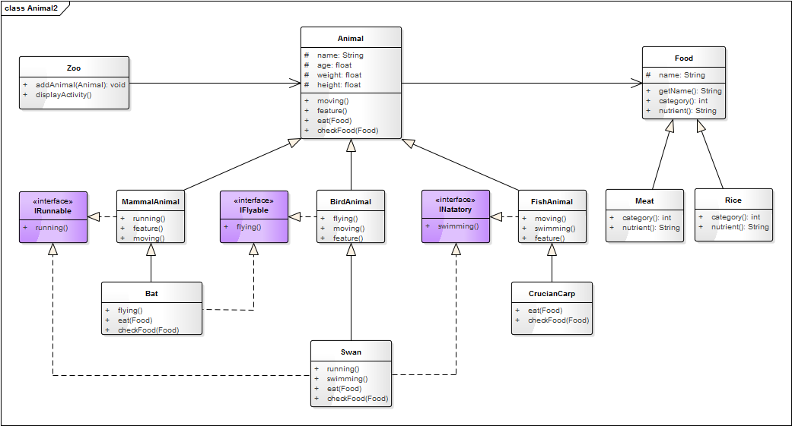
我们对上面五个原则做一个总结：
- 单一职责原则告诉我们实现类要职责单一。用于类的设计，增加一个类时使用 SRP 原则来核对该类的设计是否纯粹干净，也就是让一个类的功能尽可能单一，不要想着一个类包揽所有功能。
- 里氏替换原则告诉我们不要破坏继承体系。用于指导类继承的设计，设计类之间的继承关系时，使用 LSP 原则来判断这种继承关系是否合理。只要父类能出现的地方子类就能出现（就可以用子类来替换他），反之则不一定成立。
- 依赖倒置原则告诉我们要面向接口编程。用于指导如何抽象，即要依赖抽象和接口编程，不要依赖具体的实现。
- 接口隔离原则告诉我们在设计接口的时候要精简单一。用于指导接口的设计，当发现一个接口过于臃肿时，就要对这个接口进行适当的拆分。
- 开放封闭原则告诉我们要对扩展开放，对修改关闭。开闭原则可以说是整个设计的最终目标和原则！开闭原则是总纲，其他4个原则是对这个原则具体解释。
是否一定要遵循这些设计原则
设计原则是进行软件设计的核心思想和规范。那在实际的项目开发中，是否一定要遵循原则？答案不总是肯定，要视情况而定。因为在实际的项目开发中，必须要安时按量地完成任务。项目的进度受时间成本，测试资源的影响，而且程序一定要保存稳定可以。
还记得我们在单一职责原则中提到一个例子吗？面对需求的变更，我们有三种解决方式：方法一：直接改原有的函数（方法），这种方式最快速，但后期维护最困难，而且不便拓展；这种方式一定是要杜绝的。方法二：增加一个新方法，不修改原有的方法，这在方法级别是符合单一职责原则的；但对上层的调用会增加不少麻烦。在项目比较复杂，类比较庞大，而且测试资源比较紧缺的时候，不失为一种快速和稳妥的方式。因为如果要进行大范围的代码重构，势必要对影响到的模块进行全覆盖的测试回归，才能确保系统的稳定可靠。方法三：增加一个新的类来负责新的职责，两个职责分离，这是符合单一职责原则的。在项目首次开发，或逻辑相对简单的情况下，需要采用这种方式。
在实际的项目开发中，我们要尽可能地遵循这些设计原则。但并不是要 100% 地遵从，需要结果实际的时间成本、测试资源、代码改动难度等情况进行综合评估，适当取舍，采用最高效合理的方式。
更为实用的设计原则
前面讲的面向对象设计的六大原则是一种理想环境下的设计原则。在实际的项目开发中，往往没有这么充分的条件（如团队成员的整体技术水平，团队的沟通成本），或没有这么充足的时间遵循这些原则去设计，或遵循这些原则设计后实现成本太大。在受现实条件所限，不能遵循六大原则来设计时，我们还可以遵循下面这些更为简单、实用的原则，让我们的程序更加灵活，更易于理解。
LoD 原则（Law of Demeter）
Each unit should have only limited knowledge about other units: only units "closely" related to the current unit.
Only talk to your immediate friends, don't talk to strangers.
每一个逻辑单元应该对其他逻辑单元有最少的了解：也就是说只亲近当前的对象。
只和直接（亲近）的朋友说话，不和陌生人说话。
这一原则又称为迪米特法则，简单的说就是：一个类对自己依赖的类知道的越少越好，只需要和直接的对象进行交互，而不用在乎这个对象的内部组成结构。
如类 A 中有类 B 的对象；类 B 中有类 C 的对象，调用方有一个类 A 的对象 a，这时要访问 C 对象的属性，不要采用类似下面的写法：
a.getB().getC().getProperties()
而应该是：
a.getCProperties()
至于 getCProperties 怎么实现是类 A 要负责的事情，我只和我直接的对象 a 进行交互，不访问我不了解的对象。
大家都知道大熊猫是我们国家的国宝，为数不多的熊猫大部分都存活在动物动物园中。而动物园内种类繁多，布局复杂，如有鸟类馆，熊猫馆。假设某国外领导人来访华，参观我们的动物园，他想知道动物园内叫“贝贝”大熊猫年龄多大，体重多少。他难道要先去调取熊猫馆的信息，再去查找叫“贝贝”的这只大熊猫，再去看他的信息吗？显然不用，他只要问一下动物园的馆长就可以了。动物园的馆长会告诉他所有需要的信息，因为他只认识动物园的馆长，并不了解动物园的内部结构，也不需要去了解。
以上过程，可用类似下面的代码来表示：
zooAdmin.getPandaBeiBeiInfo()
KISS 原则（Keep It Simple and Stupid）
Keep It Simple and Stupid
保持简单和愚蠢
这一原则正如这句话本身一样容易理解。简单就是说要让你的程序能简单、快速地被实现；愚蠢是说你的设计要简单到傻瓜都能理解，即简单就是美！
为什么要简单呢？因为大多数的技术团队，每一个团队成员的技术水平都是参差不齐。如果你的程序设计的太复杂，有些成员可能无法理解这种设计的真实意图，而且复杂的程序讲解起来也会增加沟通成本。为什么说愚蠢呢？对同样需要的一个软件，每个人都有自己独特的思维逻辑和实现方式，因此你写的程序对于另一个人来说就是个陌生的项目。所以你的代码要愚蠢到不管是什么时候，不管是谁来接手这个项目，都要能很容易地被看懂；否则，不要让他看到你的联系方式和地址，你懂得~
有些人可能会觉得设计模式这东西很大上（神化了它的功能），学了一些设计模式，就为了模式而模式，去过渡地设计你的程序，这是非常不可取的。监听模式是一种应用非常广泛的设计模式，合理地应用能很好地对程序进行解耦，使程序的表现层和数据逻辑层分离！但在我接手过的一些项目中却看有这样的设计：A 监听 B，B 又监听 C，C 再监听 D，这就会出现数据的层层传递和连锁式的反应。因为如果 D 的数据发生变更，就会引起 C 的更新，C 的更新又会影响 B，B 又影响 A，同时数据也从 D 流向 C，再流向 B，再流向 A。这种一环扣一环的设计有时是非常可怕的，一旦程序出现问题，追踪起来将会非常困难；而且只要其中某一环境出现需求的变更，就可能会影响后续的所有环。如果是一个新人来接手这样的项目，你能想像到他也会有多抓狂！这就是一个明显的过渡设计的例子，只要你仔细地分析需求和业务逻辑，一定可以用更好的实现方式来替换他。

DRY 原则（Don’t Repeat Yourself）
Don't repeat yourself
不要重复自己
这又是一个极为容易理解的原则：不要重复你的代码，即多次遇到同样的问题，应该抽象出一个共同的解决方法，不要重复开发同样的功能，也就要尽可能地提高代码的复用率。
假设我们有下面这样一个需要：
有一个文件上传的功能，我们要根据上传的文件的类型进行分目录存放，这时我们就需要一个根据文件名来获取存放路径的方法。
import os
# 导入os库,用于文件、路径相关的解析
def getPath(basePath, fileName):
extName = os.path.splitext(fileName)[1]
filePath = basePath
if(extName.lower() == ".txt"):
filePath += "/txt/"
elif(extName.lower() == ".pdf"):
filePath += "/pdf/"
else:
filePath += "/other/"
# 如果目录不存在，则创建新目录
if (not os.path.exists(filePath)):
os.makedirs(filePath)
filePath += fileName
return filePath
这一方法此时看起来好像没什么大的问题，但随着业务的发展，支持的文件类型肯定越来越多，你就会有一堆的 if … else … 判断。当文件类型到十几种时，估计就已经有一两屏的代码了。
仔细观察，你会发现这段代码是有很多相似和重复的部分：如 if 条件的判断和路径的拼接，这时就需要遵循 DRY 原则对代码进行重构了，重构后的代码如下：
import os
# 导入os库,用于文件、路径相关的解析
def getPath(basePath, fileName):
extName = fileName.split(".")[1]
filePath = basePath + "/" + extName + "/"
# 如果目录不存在，则创建新目录
if (not os.path.exists(filePath)):
os.makedirs(filePath)
filePath += fileName
return filePath
这样就可以放心大胆地上传文件了，不管什么类型的文件都可以支持。
要遵循DRY原则，实现的方式有非常多：
- 函数级别的封装：把一些经常使用的，重复出现的功能封装一个通用的函数。
- 类级别的抽象：把具有相似功能或行为的类进行抽象，抽象出一个基类，并把这几个类都有的方法提到基类去实现。
- 泛型设计：Java 中可使用泛型，以实现通功能类对多种数据类型的支持；C++ 中可以使用类模板的方式，或宏定义的方式；Python 中可以使用装饰器来消除冗余的代码。
这一原则在单人开发时比较容易遵守和实现，但团队开发时不太容易做好，特别是对于大团队的项目，关键还是团队内的沟通。比如 Tony 在做模块 A 时用到了一个查询用户信息的功能，于是实现了一个 getUserInfo(uid) 的方法；这时团队内的另一同事 Frank 在做模块 B 时，也要一个查询用户信息的功能，但他不知道 Tony 已经实现了这个功能，已是又写了一个 getUser(uid) 的方法。
YAGNI 原则（You Aren't Gonna Need It）
You aren't gonna need it, don't implement something until it is necessary.
你没必要那么着急，不要给你的类实现过多的功能，直到你需要他的时候再去实现。
这个原则简而言之为——只考虑和设计必须的功能，避免过度设计。只实现目前需要的功能，在以后您需要更多功能时，可以再进行添加。
- 如无必要，勿增添复杂性。
- 软件开发先是一场沟通博弈。
它背后的指导思想，就是尽可能快、尽可能简单地让软件运行起来（do the simplest thing that could possibly work）。
Rule Of Three 原则
Rule of three 称为“三次法则”，指的是当某个功能第三次出现时，才进行抽象化，即事不过三，三则重构。
这个准则表达的意思是：第一次去实现一个功能尽管大胆去做；第二次做类似的功能设计时会产生反感，但是还是会去做；第三次还要实现类似的功能做同样的事情时，就应该去审视是否有须要做这些重复劳动了，这个时候就应该去重构你的代码了：把重复或相似功能的代码进行抽象，封装成一个通过的模块或接口。
这样做有几个理由：
- 省事。如果一种功能只有一到两个地方会用到，就不需要在“抽象化”上面耗费时间了。
- 容易发现模式。“抽象化”需要找到问题的模式（即共同点或相似点），问题出现的场合越多，就越容易看出模式，从而可以更准确地“抽象化”。
- 防止过度冗余。如果相同功能的代码重复出现，后期的维护将会非常麻烦，这也就是重构的意义所在。这种重复最多可以容忍出现一次，再多就无法接受了，这与中国的“事不过三”的文化也是相符的。
到这时，你会发现 DRY 原则、YAGNI 原则、三次法则，这之间有一些非常有意思的关系：
- DRY 原则 告诉我们不要有重复的代码，要对重复的功能进行抽象，找到通用的解决方法。
- YAGNI 原则 追求“快和省”，意味着不要把精力放在抽象化上面，因为很可能“你不会需要它”。
这两个原则看起来是有一些矛盾的，这时就需要三次法则来进行调和，寻找代码冗余和开发成本的平衡点。三次法则告诉我们什么时候可以容忍代码的冗余，什么时候需要进行重构。(关于重构的话题，下一节会有更详细的探讨)
CQS 原则（Command-Query Separation）
**查询：**当一个方法返回一个值来回应一个问题的时候，它就具有查询的性质；
**命令：**当一个方法要改变对象的状态的时候，它就具有命令的性质；
通常，一个方法可能是纯的 Command 模式或者是纯的 Query 模式，或者是两者的混合体。在设计接口时，如果可能，应该尽量使接口单一化（也就是方法级别的单一职责原则）。保证方法的行为严格的是命令或者是查询，这样查询方法不会改变对象的状态，没有副作用；而会改变对象的状态的方法不可能有返回值。也就是说：如果我们要问一个问题，那么就不应该影响到它的答案。实际应用，要视具体情况而定，语义的清晰性和使用的简单性之间需要权衡。将 Command 和 Query 功能合并入一个方法，方便了客户的使用，但是，降低了清晰性。这一原则尤其适用于后端接口的设计，一个接口中，尽量不要有查数据又有更新（修改或插入）数据的操作。
在系统设计中，很多系统也是以这样原则设计的，查询的功能和命令功能的系统分离，这样有则于系统性能，也有利于系统的安全性。
27 谈谈我对项目重构的看法
什么叫重构
重构有两种解释，一种是作名词的解释，一种是作动词的解释。
名词：对软件内部结构的一种调整，目的是在不改变软件可观察行为的前提下，提高其可理解性，降低其修改成本。
动词：使用一系列重构手法，在不改变软件可观察行为的前提下，调整软件的结构。
重构是软件开发过程中一个重要的事情之一，重构与重写的区别：
- 重构：不是对已有代码的全盘否定，而是对不合理的结构进行调整，合理的模块进行改动；利用更好的方式，写出更好，更有维护性代码。
- 重写：已有的代码非常复杂混乱，难以修改，重构的时间还不如重新写一个来得快；根据需求另立一个项目，完全重写。
为何要重构
车子脏了就得洗，坏了就得修，报废了就得换。
程序也一样，不合需求就得改，难于跟上业务的变更就得重构，实在没法改了就得重写。
现在的互联网项目已经不再像传统的瀑布模型的项目，有明确的需求。现在项目迭代的速度和需求的变更都非常的迅速。在软件开发的编码之前我们不可能事先了解所有的需求，软件设计肯定会有考虑不周到不全面的地方；而且随着项目需求的不断变更，很有可能原来的代码设计结构已经不能满足当前的需求。这时就需要对软件结构进行重新调整，也就是重构。
一个项目中，团队成员的技术水平参差不齐。有一些工作年限比较低，技术水平比较差的成员写的代码质量比较差，结构比较混乱，这时就需要对这部分代码进行适当的重构，使其具有更高的可重用性。
一个软件运行时间比较长，被多代程序员进行修修补补，使得这个软件的代码非常的臃肿而庞杂，维护成本非常高。因此，也需要对这个软件进行适当的构架，以降低其修改成本。
要进行代码重构的原因，总结一下，常见的原因有以下几种：
- 重复的代码太多，没有复用性；难于维护，需要修改时处处都得改。
- 代码的结构混乱，注释也不清晰；没有人能清楚地理解这段代码的含义。
- 程序没有拓展性，遇到新的变化，不能灵活的处理。
- 对象结构强耦合，业务逻辑太复杂，牵一发而动全身，维护时排查问题非常困难。
- 部分模块性能低，随着用户的增长，已无法满足响应速度的要求。
这些导致代码重构的原因，称为代码的坏味道，我称它为脏乱差，这些脏乱差的代码是怎样形成的呢？大概有以下几种因素：
- 上一个写这段代码程序员经验不足、水平太差，或写代码时不够用心。
- 奇葩的产品经理提出奇葩的需求。
- 某一个模块业务太复杂，需求变更的次数太多，经手的程序员太多，每个人都在一个看似合适的地方，加一段看似合适的代码，到最后没人能之完完整整地看懂这段代码的含义。
什么时机重构
重构分为两个级别类型：（1）对现有项目进行代码级别的重构；（2）对现有的业务进行软件架构的升级和系统的升级。对于第一种情况，代码的重构应该贯穿于整个软件开发过程中；对于第二种情况，大型的重构最好封闭进行，由专门的（高水平）团队负责，期间不接任何需求；重新设计、开发新的更高可用、高并发的系统，经集成测试通过后，再用新系统逐步替换老的系统。之所以会有这种系统和架构的升级，主要是因为，对于互联网的产品，为适合的其快速发展的需求，不同的用户量级别，需要采用不同的架构。简单的架构：开发简单、迭代速度快；高可用架构：开发成本高，但支持的用户量大，可承载的并发数高。
第二种情况属于软件架构的范畴，这里主要讨论第一种情况，即对项目本身进行代码级别的重构。这个重构应该贯穿于整个软件开发过程始终，不需要单独拿出一块时间进行，只要你闻到代码的坏味道，即可进行。我们可以遵循三次法则来进行重构：事不过三，三则重构，也就是上一篇《[谈谈我对设计原则的思考]》中的 Rule Of Three 原则。
虽然重构可以随时随地的进行，但还需要一些触发点来触发你去做这一件事，这些触发点主要有以下几个：
（1）添加功能时
当添加新功能时，如果发现某段代码改起来特别困难，拓展功能特别不灵活，就要重构这部分代码了，使添加新特性和功能变得更容易。在添加新功能时，只梳理这部分功能相关的代码；一直保持这种习惯，日积月累，我们的代码会越来越干净，开发速度也会越来越快。
（2）修补错误时
在你改 Bug，查找定位问题时，发现自己以前写的代码或者别人的代码设计上有缺陷（如扩展性不灵活），或健壮性考虑的不够周全（如漏掉一些该处理的异常），导致程序频繁出问题，此时就是一个比较好的重构时机。
可能有人会说：道理都懂，但现实是线上问题出来时根本就没那么多时间允许去重构代码。我想说的是：只要不是十万紧急的高危（大部分高危问题测试阶段都测出来）问题，请尽量养成这种习惯。
每遇到一个问题就正面解决这个问题，不要选择绕行（想尽歪招绕开问题），解决前进道路上的一切障碍。这样你对这块代码就更加熟悉，更加自信；下次再遇到类似的问题，你就会再次使用这段代码或参考这段代码。软件开发就是这样，改善某段代码当前看起来会多花一些时间，但从长远来看这些时间肯定是值得的；清除当前障碍多花一小时，能为你将来避免绕路节省好几天。 持续一段时间后，你会发现代码中的坑逐步被填平，欠下的技术债务也会越来越少。
（3）复审代码时
很多公司会有 Code Review 的要求，每个公司 Code Review 的形式可能不太一样；有的采用“结对编程”的方式，两个人一起互审代码；有的是部门领导进行不定期 Code Review；我们公司是在程序上线之前，代码合并申请的时候，由经验丰富、成熟稳重的资深工程师负责审查。Code Review 的好处是能有效地发现一些潜在的问题（所谓当局者谜，旁观者清！程序开发也一样，同时更能发现自己代码的漏洞）；有助于团队成员进行技术的交流和沟通。
在 Code Review 时发现程序的问题，或设计的不足，这又是一个重构的极佳时机，因为 Code Review 时，对方往往能提出一些更的建议或想法。
如何重构代码
上面讲解了什么时候该重构，怎么进行重构，这又是一个重要的问题。下面将介绍一些最常用和实用的重构方法，下面的这些方法针对各种编程语言都实用。
重命名
这是最低级、最简单的一种重构手法（现在的集成 IDE 都特别智能，通过 Rename 功能一键就能搞定），但并不代表他的功效就很差。
你有没有见过一些特别奇葩、无脑、或具有误导性的变量名、函数名、类名吗？如下面这样的：
# 下面的例子改编自网上讨论比较火的几个案例
# Demo1
correct = False
# 嗯，这是对呢？还是错呢？
# Demo2
from enum import Enum
class Color(Enum):
Green = 1 # 绿色
Hong = 2 # 红色
# 嗯，这哥们是红色(Red)的单词不会写呢，还是觉得绿色(Lv)的拼音太难看呢？
# Demo3
def dynamic():
pass
# todo something
# 你能想到这个函数是干嘛用的吗？其实是一个表示“活动”的函数。这英语是数学老师教的吗~
如果有，果断把它改掉！一个良好的名称（变量名、函数名、类名），能让你的代码可读性立刻提高十倍。在下面的“代码整洁之道”中将会继续讲解程序取名的技巧和原则。
函数重构
提炼函数
有没有见过一函数一千多行的代码？如果有，那恭喜你！前人给你留了一个伟大的坑等着你去添，这种代码是极其难以阅读的，所以你需要对它进行拆分，将相对独立的一段段代码块拆分成一个个子函数，这一过程叫函数的提炼。
你是否经常看到相同（或相似）功能的代码出现了好几个地方，在需求发生变更需要修改代码的时候，每一处你都得改一遍，这个时候你也需要将相同（或相似）功能的代码提炼成一个函数，在所有用到这段代码的地方调用这个函数即可。
去除不必要的参数
函数体不再需要某个参数，果断将该参数去除。尽量不要为未来预留参数（需要用到的时候再加），除非你很确定即将要用到它。
用对象取代参数
你有没有见过有十几个参数的函数？这种函数，即使是天才也不太容易能记住每一个参数，往往是看到后面忘了前面。这个时候可以定义一个参数类，类中成员定义为函数需要的各个参数；调用函数时将这个类的对象传入即可，函数体内可通过这个对象取得各个属性。
查询函数和修改函数分离
我们在《[谈谈我对设计原则的思考]》一文中讲到 CQS 原则，根据这一原则将查询函数和修改函数分离。
隐藏函数
一个类方法，如果不被任何其他类使用，或不希望被其他类使用。应该将这个方法声明为 private，对外部进行隐藏。
重新组织数据
用常量名替换常量值
有一个字面值，带有特别的含义，而且可能在多个地方被用到。创建一个常量（或枚举变量），并根据其含义为它命名，将具体的字面数值替换为这个常量。这样，即提高代码的可读性，也方便修改（要修改这一字面值时，只要修改常量的定义即可）。
用 Getter 和 Setter 方法代替直接方法
尽量避免直接访问类的成员属性，将类的成员属性声明为 private，然后定义 public 的 Getter 和 Setter 方法来访问这些属性。
用对象取代数组
有一个数组（array），其中的元素个各自代表不同的东西，用对象替换数组。对于数组中的每个元素，以一个值域表示。
用设计模式改善代码设计
数据结构的重构和函数的重构都是相对基础的重构方法，有一些代码，类的结构及类间的关系本身就不太合理，这时就要用设计模式的思想重构设计这些类间的关系，这时就需要我们对事物和逻辑有一定的抽象思维，也就是面向对象的思想。一个大致的思考方向是：
- 把具有相似功能的类归纳在一起并抽象出一个基类，让这些类继承自这个基类（也称为父类）。
- 把子类都使用的方法和属性提炼到父类，并声明为 protected（部分方法可能要声明为 public）。
- 不同体系的类之间（如动物和食物），依赖抽象和接口编程，即是依赖倒置原则。
这一些方法，需要长期的经验和总结，不能一蹴而就！需要认真学习和领悟设计模式和设计原则。
代码整洁之道
命名的学问
程序中的命名包括变量名、常量名、函数名、类名、文件名等。一个良好的名称能让你的代码具有更好的可读性，让你的程序更容易被人理解；相反，一个不好的名称不仅会降低代码的可读性，甚至会有误导的作用。良好的名称应当是可读的、恰当的并且容易记忆的。 好的命名还可以取代注释的作用，因为注释通常会滞后于代码，经常会出现忘记添加注释或注释更新不及时的情况。
语义相反的词汇要成对出现
正确的使用词义相反的单词做名称，可以提高代码的可读性。比如 “first / last” 比 “first / end” 通常更让人容易理解。下面是一些常见的例子：
| 第1组 | 第2组 | 第3组 | 第4组 |
|---|---|---|---|
| add / remove | begin / end | create / destory | insert / delete |
| first / last | get /set | increment / decrement | up / down |
| lock / unlock | min / max | next / previous | old / new |
| open / close | show / hide | source / destination | start / stop |
计算限定符作为前缀或后缀
很多时候变量需要表达一些数值的计算结果，比如平均值和最大值，这些变量名中会包含一些计算限定符（Avg、Sum、Total、Min、Max），在这种时候，可以使用限定符在前或者限定符在后两种方式对变量进行命名，但不要在一个程序中同时使用两种方法。如可以使用 priceTotal 或 totalPrice 来表达总价，但不要在一段代码里两种同时使用。虽然这可能看起来微不足道，但确实这样做可以可避免一些歧义。
变量名要能准确地表示事务的含义
作为变量名应尽可能全面，准确地描述变量所代表的实体。设计一个好的名字的有效方法，是用连续的英文单词来说明变量代表什么，命名中一律使用英文单词，不要使用汉语拼音，更不要使用汉字。
| 变量的目的 | 好的名字 | 不好的名字 |
|---|---|---|
| Current time | currentTime | ct, time, current, x |
| Lines per page | linesPerPage | lpp, lines, x |
| Publish date of book | bookPublishDate | date, bookPD, x |
用动名词命名函数名
函数名通常会描述在某个对象上的某个操作，因此采用 动词 + 对象名 的方式来做为函数名的命名约定，如 uploadFile()。
使用面向对象的语言时，在一些描述类属性的函数命名中类名是多余的，因为对象本身会包含在调用的代码中。例如，使用 book.getTitle() 而不是 book.getBookTitle()，使用 report.print() 而不是 report.printReport()。
变量名的缩写
习惯性缩写：
始终使用相同的缩写。例如，对 number 的缩写，可以使用 num 也可以使用 no，但不要两个同时使用，始终保证使用同一个缩写。同样的，也不要在一些地方用缩写而另外一些地方不用，如果用了 number 这个单词，就不要在别的地方再用到 num 这个缩写。
使用的缩写要可以发音：
尽量让你的缩写可以发音。例如，用 curSetting 而不用 crntSetting，这样可以方便开发人员进行交流。
避免罕见的缩写：
尽量避免不常见的缩写。例如，msg(message)、min(Minmum) 和 err(error) 就是一些常见的缩写，而 cal(calender) 大家就不一定都能够理解。
常见命名规则
目前最常见的编程命名规则有以下几种：驼峰命名法、帕斯卡命名法、匈牙利命名法。
- 驼峰命名法（Camel）主要特点：第一个单词首字符小写，后面的单词首字符大写，如 myData。
- 下划线命名法，主要特点：每个单词全部小写，单词之间用下划线分隔，如 my_data。
- 帕斯卡命名法（Pascal），主要特点：每一个单词首字符大写，如 MyData。
- 匈牙利命名法（Hungarian），主要特点：在变量名的前面加上表示数据类型的前缀，如 nMyData、m_strFileName。
这些命名规则之间没有好坏之分，只是一种习惯；Java 程序员比较喜欢驼峰命名法，而 C++ 项目中匈牙利命名法用的比较多，当然也有一些采用帕斯卡命名法，PHP 和 Python 用下划线命名的比较多。一个项目一旦确认了使用某个命名规则，就要一直保持和遵守这种命名规则。
整洁的案例
整洁的代码看起来舒服，而且方便阅读，容易理解！保持代码整洁的有效途径有两个：一是养成良好的编程惯性，二是重构具有坏味道的代码。下面是我曾经在重构一个用 C++ 开发的项目（采用 Qt 框架）时，记录下来的真实案例。为保持其真实性，代码还是以 C++ 的形式呈现，读者可以忽略具体的语法细节（如果看不懂），主要关注代码结构。
相同（或及相似）的代码重复出现，提炼出一个通用的方法
void ClassWidget::slot_onChannelUserJoined(QString uid)
{
for ( auto widget : videoWidgetList )
{
if ( widget->videoId == uid.toUInt() )
{
videoEngineMgr->someoneJoinChannel( ( void * )( widget->getVieo()->winId() ), uid.toUInt() );
break;
}
}
qDebug()<<(QString("slot_onChannelUserJoined, uid:%1").arg(uid));
}
void ClassWidget::slot_onChannelUserLeaved(QString uid)
{
for ( auto widget : videoWidgetList )
{
if ( widget->videoId == uid.toUInt() )
{
videoEngineMgr->someoneLeaveChannel( uid.toUInt() );
break;
}
}
qDebug()<<(QString("slot_onChannelUserLeaved, uid:%1").arg(uid));
}
上面两个函数中 for 循环的功能几乎是一样的，就是通过 uid 来找到对应的 Widget，然后进行相应的操作。这里就可以提炼出一个 getWidgetByUid(uid) 的方法，两个函数通过调用这个方法获得 widget 对象并进行相应的操作。
判断放入循环内，减少循环代码
void ClassWidget::isShowMessageWidget(bool isShow)
{
if(!isShow)
{
for ( auto widget : videoWidgetList )
{
if ( widget->user.userType == STATUS_STUDENT )
{
widget->show();
}
}
}
else
{
for ( auto widget : videoWidgetList )
{
if ( widget->user.userType == STATUS_STUDENT )
{
widget->hide();
}
}
}
}
这时根据 isShow 变量值的不同，分别进行了两个循环，可以把这种判断放到循环内进行。重构后的代码如下：
void ClassWidget::isShowMessageWidget(bool isShow)
{
for ( auto widget : videoWidgetList )
{
if ( widget->user.userType == STATUS_STUDENT )
{
isShow ? widget->hide() : widget->show();
}
}
}
代码量是不是一下减了一半？
枚举类型的判断用 switch...case...
if(state == STATE_LOADING)
{
ui->widgetLoading->show();
ui->widgetLoadingFailure->hide();
ui->widgetNoData->hide();
}
else if(state == STATE_FAILURE)
{
ui->widgetLoading->hide();
ui->widgetLoadingFailure->show();
ui->widgetNoData->hide();
}
else if(state == STATE_NODATA)
{
ui->widgetLoading->hide();
ui->widgetLoadingFailure->hide();
ui->widgetNoData->show();
}
重构后的代码：
switch (state) {
case STATE_LOADING:
{
ui->widgetLoading->show();
ui->widgetLoadingFailure->hide();
ui->widgetNoData->hide();
break;
}
case STATE_FAILURE:
{
ui->widgetLoading->hide();
ui->widgetLoadingFailure->show();
ui->widgetNoData->hide();
break;
}
case STATE_NODATA:
{
ui->widgetLoading->hide();
ui->widgetLoadingFailure->hide();
ui->widgetNoData->show();
break;
}
case STATE_FINISHED:
{
ui->widgetLoading->hide();
ui->widgetLoadingFailure->hide();
ui->widgetNoData->hide();
break;
}
default:
break;
}
这时其实可以进行进一步的重构，就是每一个 case 里的代码段都提炼成一个方法（函数）。
减少嵌套的层次，如果有 If 判断，对否定条件提前退出
WidgetVideoItem* pItem = videoWidgets.getWidgetByUid(uid);
if(pItem && pItem->isJoined())
{
// sync page num
pWhiteBoard->sendTurnToPageMsg(pWhiteBoard->getCurPageIdx() + 1);
// sync status of sharing desktop
if(inSharingDesktop)
{
StartSharingDesktop sharingDesktopData;
sharingDesktopData.classId = this->classId;
sendStartSharingDesktopMsg(sharingDesktopData);
}
}
重构后的代码，由两层嵌套变成了一层嵌套：
WidgetVideoItem* pItem = videoWidgets.getWidgetByUid(uid);
if(!pItem || !pItem->isJoined())
{
return;
}
// sync page num
pWhiteBoard->sendTurnToPageMsg(pWhiteBoard->getCurPageIdx() + 1);
// sync status of sharing desktop
if(inSharingDesktop)
{
StartSharingDesktop sharingDesktopData;
sharingDesktopData.classId = this->classId;
sendStartSharingDesktopMsg(sharingDesktopData);
}
这代码其实还算好的，只有两层嵌套。我见过一段前端的代码，有七、八层的 if 嵌套，这种代码称为“箭头型”代码，网上有一张神图很形象地表现了这种代码：